ヨークHD、3年で成長投資1500億円 スーパー改装に400億円上乗せ
タイムライン要約
今日のまとめ
以下はタイムラインの要約です。
* **経済活動の活発化と課題**: 複数の日本企業（ヨークHD、大林組、伊藤ハム米久など）が大型投資や海外企業の買収を発表し、日経平均は一時7万1000円台を記録。AI関連株や銀行業の株価も好調ですが、燃油高による遠洋マグロ漁業への影響など、景気の裏側での課題も浮上しています。
* **ゲーム業界の新作ラッシュとAIの影**: 「三國志14」シリーズが100万本を突破し、多数の新作ゲーム、アップデート、コラボイベント（「オクトパストラベラー 大陸の覇者」×「FF X」など）が発表され活況を呈しています。Unreal EngineでのAI接続サポートなど技術の進展が見られる一方で、Epic GamesのAI活用方針を巡り『フォートナイト』と『Vampire Survivors』のコラボが見直されるなど、AIに対する複雑な反応も現れています。
* **AI技術の広がる応用と深まる倫理的議論**: 将棋定跡の自動生成スクリプト公開やGoogle Homeへの新生成AI搭載など、AIの応用範囲が拡大しています。しかし、AIの安全対策（ガードレール、ジェイルブレイク）や規制に関する懸念が強まり、米国政府のFable遮断事件やローマ教皇の警告など、AIの倫理的・社会的な側面への注目が高まっています。
* **経済活動の活発化と課題**: 複数の日本企業（ヨークHD、大林組、伊藤ハム米久など）が大型投資や海外企業の買収を発表し、日経平均は一時7万1000円台を記録。AI関連株や銀行業の株価も好調ですが、燃油高による遠洋マグロ漁業への影響など、景気の裏側での課題も浮上しています。
* **ゲーム業界の新作ラッシュとAIの影**: 「三國志14」シリーズが100万本を突破し、多数の新作ゲーム、アップデート、コラボイベント（「オクトパストラベラー 大陸の覇者」×「FF X」など）が発表され活況を呈しています。Unreal EngineでのAI接続サポートなど技術の進展が見られる一方で、Epic GamesのAI活用方針を巡り『フォートナイト』と『Vampire Survivors』のコラボが見直されるなど、AIに対する複雑な反応も現れています。
* **AI技術の広がる応用と深まる倫理的議論**: 将棋定跡の自動生成スクリプト公開やGoogle Homeへの新生成AI搭載など、AIの応用範囲が拡大しています。しかし、AIの安全対策（ガードレール、ジェイルブレイク）や規制に関する懸念が強まり、米国政府のFable遮断事件やローマ教皇の警告など、AIの倫理的・社会的な側面への注目が高まっています。
大林組、オーストラリア地盤の英同業を860億円で買収 海外強化
大林組、オーストラリア地盤の英同業を860億円で買収 海外強化
「三國志14 with パワーアップキット Complete Edition」，9月10日に発売決定。「三國志14」シリーズの累計出荷本数100万本突破も明らかに
https://
4gamer.net/s/G101804.2606
18025
…
無料招待制のイベント「『三國志』40周年記念コンサート 〜シブサワ・コウ 45周年のしらべ〜」を12月12日に開催することも決定した
将棋の大規模定跡自動生成スクリプトを公開しました。
> モンスターマシンを持ってきて、マイナーな戦型の課題図を開始局面にして掘れば、あっという間にその戦型が滅ぶ可能性すらある、本格的にヤバいスクリプトです。
https://
yaneuraou.yaneu.com/2026/06/18/sho
gi-bookminer/
…
EU議会 不法滞在移民の強制送還を厳格化する法案を可決 「あの犯罪者のクソ移民共を送り返せ」議員達がチャント
EU議会 不法滞在移民の強制送還を厳格化する法案を可決 「あの犯罪者のクソ移民共を送り返せ」議員達がチャント : ハムスター速報
東京駅からバスで有明ガーデンへ
ライブ会場へ行く前に、島村楽器のムジカブースを見てきました！
パネルにキャストのサインが入っていることに加えて、関連グッズも充実しています！
楽器の値段は…うわぁ、高い...
いい値段しますね…
#バンドリ
#AveMujica
#Exitus
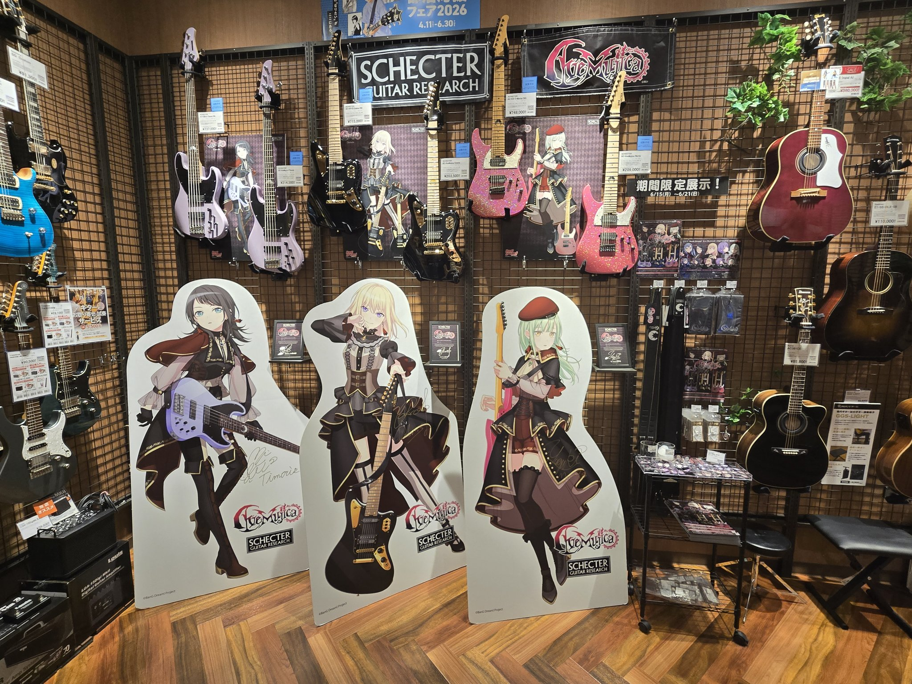
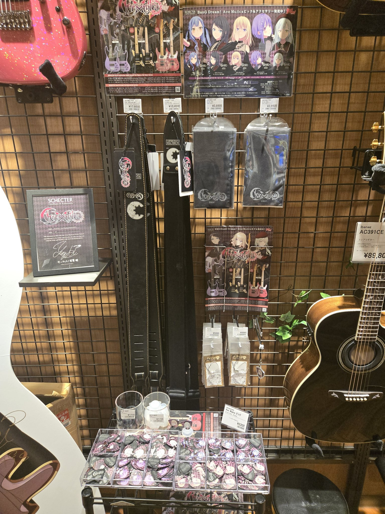
告白されると爆死する学園伝奇ラブコメノベルADV。PS5版「デスマッチラブコメ！」，配信開始
https://
4gamer.net/s/G101802.2606
18016
…
告白されると爆死してしまう主人公が，夕方になると暴走して迫ってくるヒロインたちを避けていく。PS5版では，4K解像度に対応しているほか，簡体字と繁体字でも遊べる
電源不要でコードレス使用もOK。このハンディタイプの高圧洗浄機で泥汚れも油汚れもしっかり落とす #BuyPR
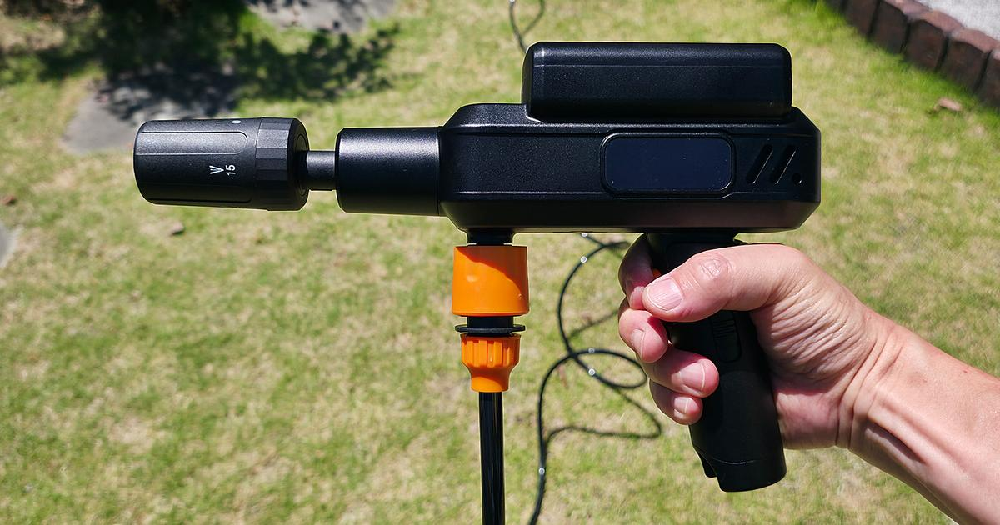
電源不要でコードレス使用もOK。このハンディタイプの高圧洗浄機で泥汚れも油汚れもしっかり落とす | ギズモード・ジャパン
20代女性に性的暴行をしたアンゴラ国籍の男を起訴→検察「何か証人来れなくなったんで起訴取り下げでｗ」 #酷い話・事件

20代女性に性的暴行をしたアンゴラ国籍の男を起訴→検察「何か証人来れなくなったんで起訴取り下げでｗ」 - オレ的ゲーム速報@刃の記事ページ
jin115.com
ランダムは楽しさか疲労か。「ブルーアーカイブ」総力戦ボスリワークの試行錯誤と“リトライを減らす”設計思想［NDC26］
https://
4gamer.net/s/G999104.2606
18010
…
「ブルアカ」総力戦ボスをどう改善したのか
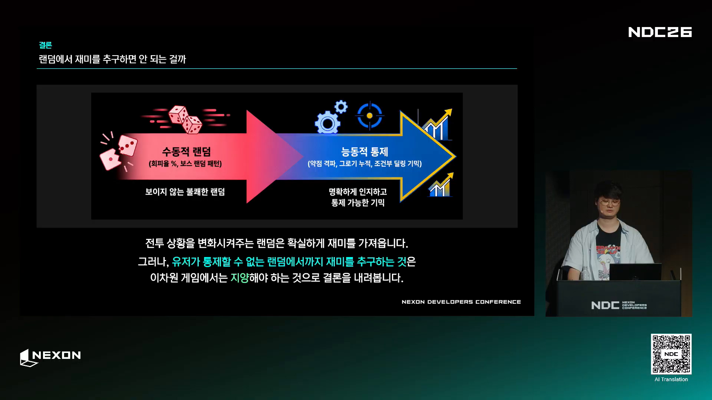
シオン本当にかっこいい
滅亡した人類に代わり，エイリアンと戦い続けるロボットたちを描いた2.5DFPS「最終回収SQUAD」，本日リリース
https://
4gamer.net/s/G090337.2606
18019
…
過酷なミッションをくぐり抜け，圧倒的な敵勢力との戦いの結末を見届けよう
ついに！！きた！！
新生成AIのGoogle Home
グーグル、Gemini搭載の“話せる”新「Google Home スピーカー」
「モンギル：STAR DIVE」推奨ゲームPCがGALLERIAから発売。特典壁紙付き
https://
4gamer.net/s/G002975.2606
18021
…
デスクトップPCとノートPCをラインナップ。比較的安価なのもポイントだ
ChatGPTの利用者11億人で成長鈍化 日本は増加、欧州で減少
ChatGPTの利用者11億人で成長鈍化 日本は増加、欧州で減少
伊藤ハム米久、NZ食肉加工大手を760億円で買収 牛肉輸出を拡大
伊藤ハム米久、NZ食肉加工大手を760億円で買収 牛肉輸出を拡大
小学生2人の探偵ごっこが，やがて学校の知られざる真相へ迫る。ミステリーADV「五年B組事件簿」，体験版を配信中
https://
4gamer.net/s/G101812.2606
18024
…
物語は全5章で構成されており，体験版では第1章の一部をプレイできる
「Warframe」最新チャプター「翡翠の影：星座」配信開始。65体目のWARFRAME「Sirius & Orion」や新レールジャックミッションが登場
https://
4gamer.net/s/G017216.2606
18018
…
50体目のプライムWARFRAMEとなる「Styanax Prime」も登場
このAIって、LLMじゃなく、優先順位判定アルゴリズムなのか
庄司昌彦 / Masahiko SHOJI
@mshouji
昨日、教わった興味深い事例。AIに一次判定をしてもらうことで、Excelでひたすらコピペをしていた従来に比べ大幅に作業効率が上がったとのこと。災害時のトリアージは人の生死に関わるのでAIの使い方としては並べ替え作業の効率化と「一次判定」というのが丁度良いのだろう。
https://
note.bot-express.com/n/n8febc6b64dc0
『フォートナイト』と『Vampire Survivors』のコラボが発表……された直後に『ヴァンサバ』開発元がコラボ見直しを表明。Epic側のAI活用方針を受けてか
https://
gamespark.jp/article/2026/0
6/18/168139.html?utm_source=twitter&utm_medium=social&utm_content=tweet
…
ニデック株主「永守氏に損害賠償」「社外取は無能」 総会で厳しい意見
ニデック株主「永守氏に損害賠償」「社外取は無能」 総会で厳しい意見
輿水畏子さんがリポスト
◆新規カットイン公開◆
共犯の皆様。
『魔法少女ノ魔女裁判』ニンテンドーストアページ内サムネイルに
Swtich版発売にあたっての新規要素である
新規カットインを先行公開しました。
新規カットインは今回公開した以外にも多数実装されます。
▼ストアページ
https://
store-jp.nintendo.com/item/software/
D70010000116758
…
工画堂スタジオ、2005年リリース『蒼い空のネオスフィア』のリメイク作品？『ネオスフィア：レガシー』を2027年春公開予定
https://
gamespark.jp/article/2026/0
6/18/168138.html?utm_source=twitter&utm_medium=social&utm_content=tweet
…
なぜ猫はキーボードに乗るのか→そうだ、デスク用の猫ベッドがあれば
なぜ猫はキーボードに乗るのか→そうだ、デスク用の猫ベッドがあれば
UGREENの「たった5.2gクリップ型イヤホン」で夏の耳蒸れ対策。過去最安2千円台だ #BuyPR
UGREENの「たった5.2gクリップ型イヤホン」で夏の耳蒸れ対策。過去最安2千円台だ | ギズモード・ジャパン
通勤も旅行もこのボディバッグで全対応できる。多彩な収納スペースを搭載した頼れるボディバッグ #BuyPR
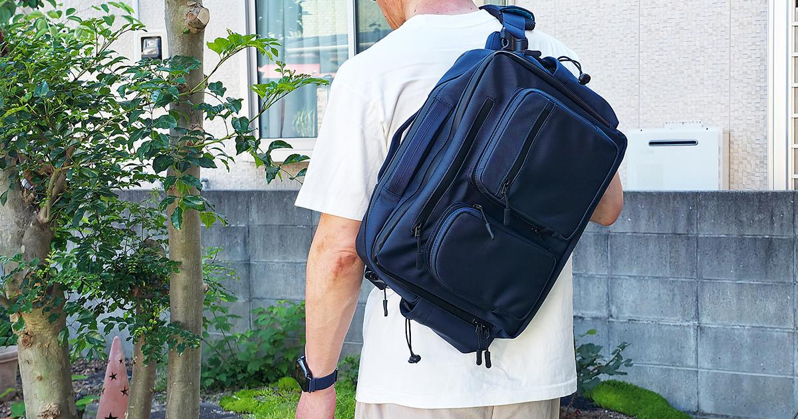
通勤も旅行もこのボディバッグで全対応できる。多彩な収納スペースを搭載した頼れるボディバッグ | ギズモード・ジャパン
っぱワークアウトにはこの曲ッスわ〜〜〜〜
捗る。
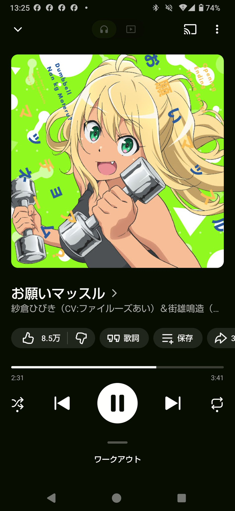
import numpy as np
import matplotlib.pyplot as plt
rng = np.random.default_rng(4)
N = 1000
while True:
x = np.cumsum(rng.integers(0, 2, N)) / np.arange(1, N+1)
if np.abs(x[-1] - 0.5) > 0.03:
break
plt.plot(range(N), x)
plt.axhline(0.5)
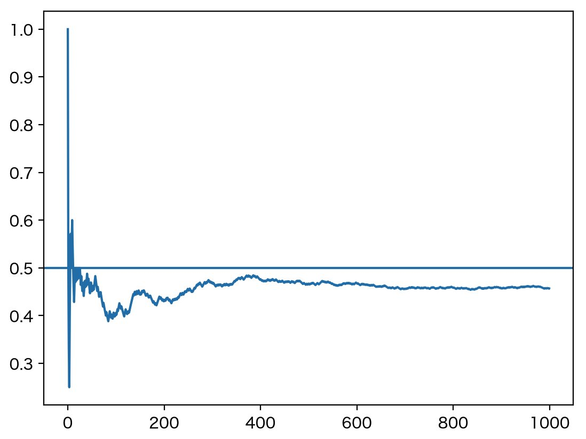
現状の生成AIの仕組み上、絶対にガードレールが突破されない（ジェイルブレイクが存在しない）AIは不可能で、仮に実現するとするなら事実上全ての回答を拒否する無能AIになるのを政権側は理解しているのだろうか。
WIRED
@WIRED
トランプ政権の当局者たちはWIREDに対し、アンソロピックがFable 5を再リリースしたい場合、モデルのガードレールが回避されないようにする必要があると述べています。セキュリティ専門家たちは、それができないと語っています。
https://
wired.com/story/the-whit
e-house-wants-anthropic-to-block-all-jailbreaks-that-may-not-be-possible/?utm_brand=wired&utm_social-type=owned&utm_source=twitter&utm_medium=social&utm_campaign=aud-dev
…
このイベント、参加費無料でいいんですか!?
将棋情報局編集部
@mynavi_shogi
【大規模イベント】
「将棋ＡＩサミット2026」を開催します！！
日時：2026年８月１日（土）13時～18時
場所：歌舞伎座タワー
内容：
（１）【基調鼎談】谷合廣紀五段、やねうらおさん、たややんさん
（２）【スペシャル対局】中村太地八段ーSugar
（３）【LLMデモンストレーション】たややん
セルフレジ万引き急増というニュース。
そもそも「出るときにピーと鳴る万引き防止ゲート」と、それに対応したシステムにすれば解決すると思うんですが、なぜそうしないのか。
理想的には「持ってる全商品」を自動で読み取る「レジ前ゲート」を作って、レジで即会計額が出るシステムにしてほしい。
最大3人協力のローグライクアクションRPG「雲海ラプソディア」，日本向け発表トレイラーを公開。折りたたみ椅子やバスケットボールも武器になる
https://
4gamer.net/s/G101797.2606
18014
…
雲の中に浮かぶ島々を探索し，巨大なボスを攻略していく
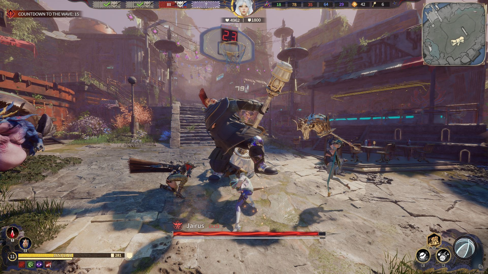
陶磁器でできた小さなコック人形が，キッチンを大冒険するADV「Salt & Soul: Pocket Chef's Adventure」，デモ版を配信中
https://
4gamer.net/s/G101801.2606
18017
…
祖母の霊に導かれながら材料を探し，キッチン家電を操作して，彼女の料理を正確に作り上げていく
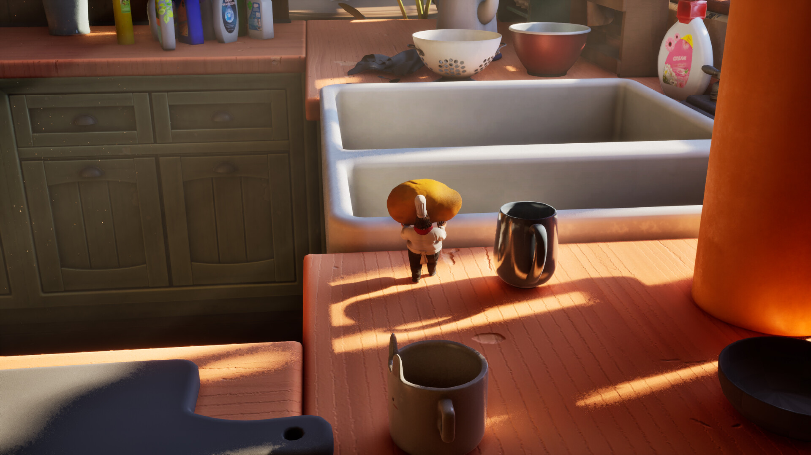
『バニーガーデン』などのqureate新作『東京ワルキューレ』個性豊かな3人の新キャラが公開！炎上系の元プロゲーマー、バブみで癒やす女医など
https://
gamespark.jp/article/2026/0
6/18/168137.html?utm_source=twitter&utm_medium=social&utm_content=tweet
…
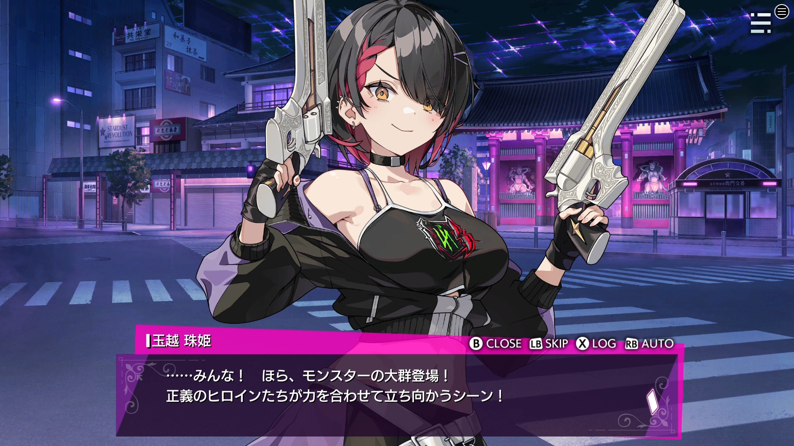
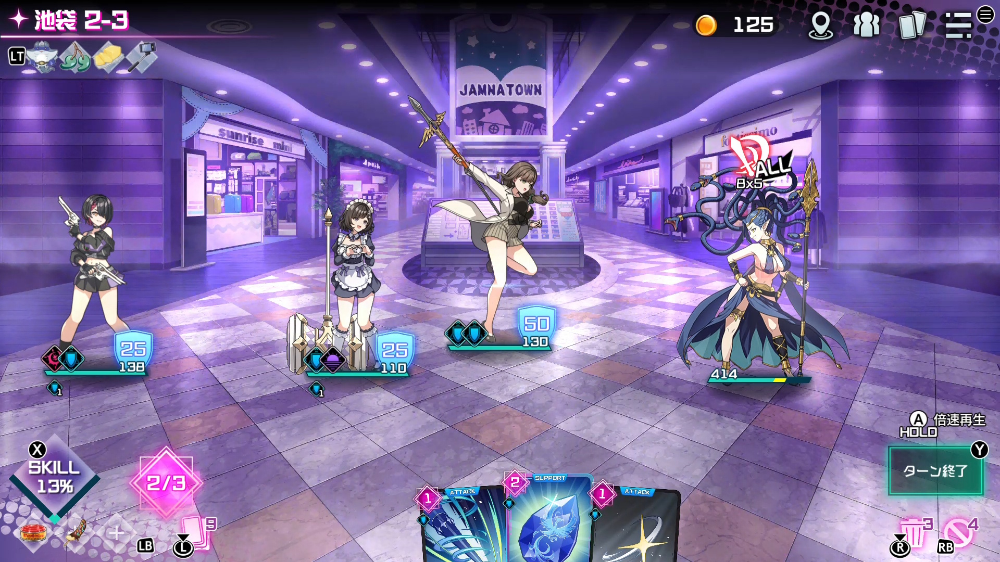
米軍横須賀基地侵入、元住友商事社員に有罪判決 横浜地裁
米軍横須賀基地侵入、元住友商事社員に有罪判決 横浜地裁
食肉豚出荷、年間1600万頭割れ視野 猛暑で高値更新も
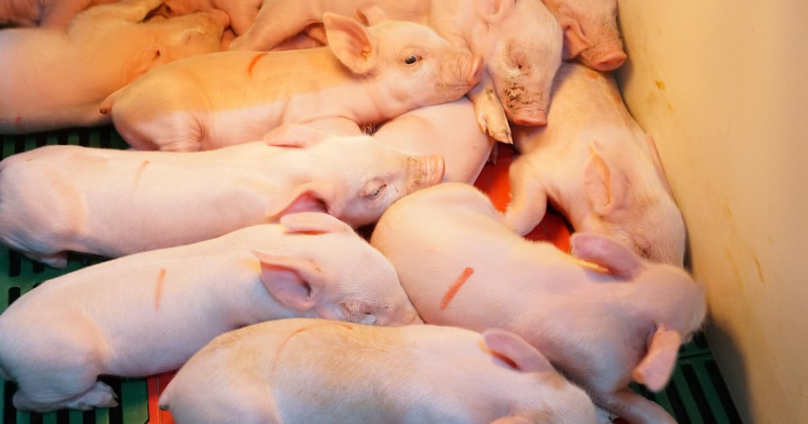
食肉豚出荷、年間1600万頭割れ視野 猛暑で高値更新も
信金中金、全国254信金の人事や総務業務集約 年末調整や契約書管理
信金中金、全国254信金の人事や総務業務集約 年末調整や契約書管理
MSYがFPSゲーマー向け製品「THE SHOOTER」シリーズを始動。第1弾は量子ドット液晶＋Mini LEDの24.5インチディスプレイ
https://
4gamer.net/s/G094901.2606
18015
…
手頃なサイズで2560×1440ドット，360Hz表示対応で残像感の少ないディスプレイだ
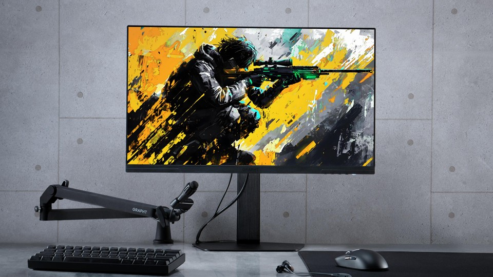
最近のマイトレンドトレーニングは「ダンベルショルダープレス」
なんかすっごい楽しい。
理由は分からないけど楽しい。
私のダンベルの持ち方は縦派（ダンベルの正面が顔と同じ向き）です。
横だとバランスが取れない気がして……。
絶対に許せない（uBlock Origin を使うためにフラグつけて MV2 を有効にしているマン）
Googleは、Chromeの拡張機能フレームワークをManifest V2からManifest V3へ移行し、旧仕様のサポートを段階的に終了しています。この変更により、uBlock Originのような主要な広告ブロック拡張機能は、Chrome上で従来の仕組みを維持しにくくなっています。
gigazine.net
「海洋散骨」7年で6倍、年6600件 葬送ニッポンの景色一変
https://
nikkei.com/article/DGXZQO
UD279NO0X20C26A5000000/?n_cid=SNSTW005&n_tw=1781745496
…
「子どもに迷惑をかけたくない」という高齢者や、終活中のおひとりさまからの問い合わせが多いといいます。一部ではガイドラインやマナーを守らない業者の増加を懸念する声も出ています。

「海洋散骨」7年で6倍、年6600件 葬送ニッポンの景色一変
【悲報】iPhone18、とんでもない価格になるかも・・・ #雑談・その他の話
【悲報】iPhone18、とんでもない価格になるかも・・・ - オレ的ゲーム速報@刃の記事ページ
jin115.com
Unreal Engine 6の早期アクセス版リリースは2027年末目標、正式版はその12～18か月後。コスチューム含め『フォートナイト』と連携強化か
https://
gamespark.jp/article/2026/0
6/18/168136.html?utm_source=twitter&utm_medium=social&utm_content=tweet
…
AIのメディア戦略、情報発信、AIOもろもろなどについて、お話しますー。
渡邉 真洋（まひろ） / StoryHub
@mr_dataman
「AI時代の企業メディア、ストーリーテリング」をテーマに、5/26（金）の19:00〜渋谷SOILにてイベントを行います！
講演後には、交流会も予定してます。
まちづくり、自治体、オウンド・ローカルメディア、AI... etc
この辺りにご関心ある方、ぜひお越しください。
イベントページ↓
https://
pic.x.com/vxeJT7Z25B
お、すごそう。UE5.8がリリースされてMCPプラグインが追加。ClaudeCodeやCodexからMCPを通じてエディタ操作やブループリント作成ができるようになったらしい。今までも高額なサードパーティプラグインでできてたけど公式機能になった
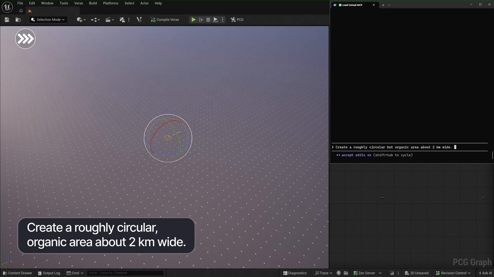
Unreal Engine
@UnrealEngine
Unreal Engine 5.8 が本日、実験的な MCP サーバーサポート付きでリリースされます：
あなたのソース、あなたのパイプライン、あなたのワークフロー—MCP プラグインを単純に設定するだけで、任意のエージェントに接続できます。今日、MCP サーバーと PCG Primitive
有休取ってるのでジムに来ました。
家でダラダラしてるのは性にあわないので。
これから仕事で忙しくなりあまり頻度こなせそうになく、今のジムじゃ月額のコスパ的に割に合わないので今月末でジム解約します。
家の近くにシャワー無しだけど月額3000円くらいのジムあるので、今後はそこを使います。
デモを2年回して100万本。「Shape of Dreams」が実践した，ユーザーフィードバックとデータによる“楽しさ”の削り出しをレポート［NDC26］
https://
4gamer.net/s/G999104.2606
18011
…
約2年にわたるデモ運営で得たユーザーフィードバックとデータ分析をもとに，「Shape of Dreams」を磨き上げた過程が語られた
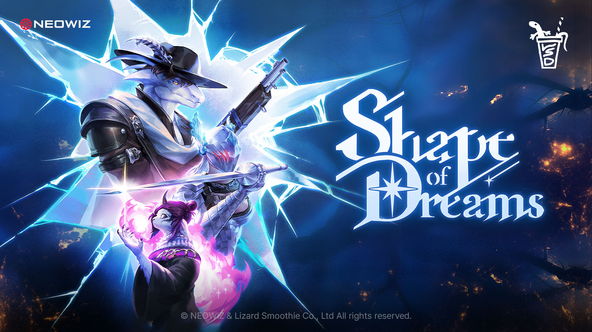
何でもエミリアたん風に「すごーく」をつければ印象が良くなると思うので使っていこうと思う。すごーく、ムカついたの。
AIエージェント操る、Sansan幹部の仕事術「6〜7体がちょうどいい」
AIエージェント操る、Sansan幹部の仕事術「6〜7体がちょうどいい」
別に新条アカネさんは歯並びが悪いわけじゃないですよ。
ふぇむ(せかんど！)
@000Amaurot
女の子はお上品に笑うためじゃなく歯並びの悪さを隠すために口元を隠して笑って欲しいし、歯並びの悪さは隠すけど、癖でストローを無意識に噛んで欲しい。
ルネサス、半導体設計の米新興ピクトラス買収 ソフト分野強化
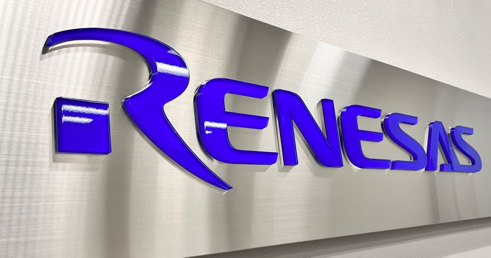
ルネサス、半導体設計の米新興ピクトラス買収 ソフト分野強化
スクエニHD-2D初のARPG『冒険家エリオットの千年物語』発売！メタスコア80点付近の好調スタート―Steam版は6月19日配信
https://
gamespark.jp/article/2026/0
6/18/168135.html?utm_source=twitter&utm_medium=social&utm_content=tweet
…
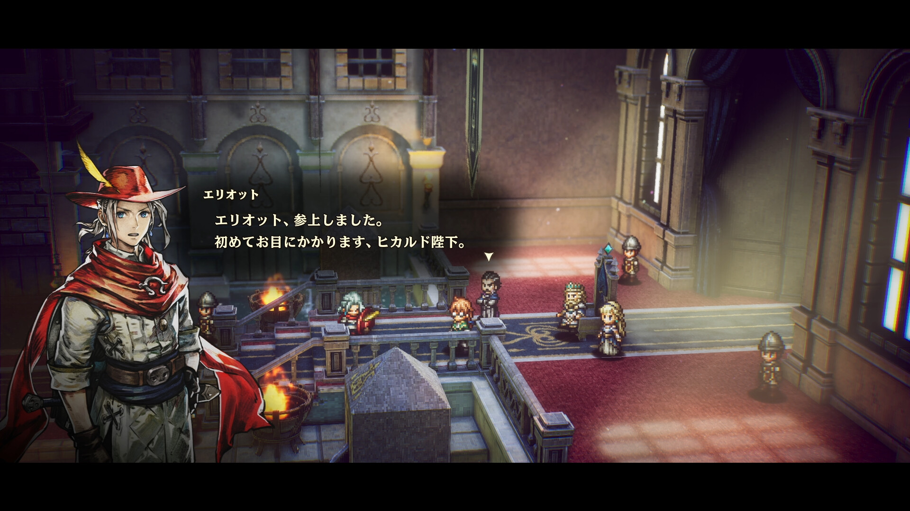
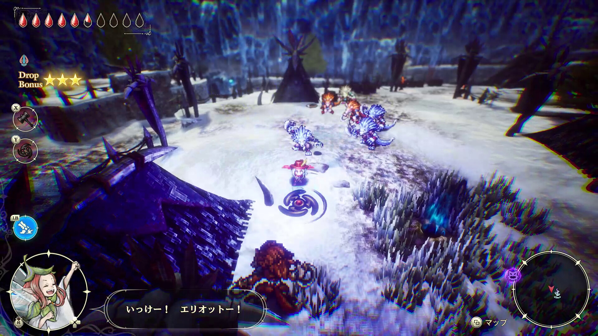
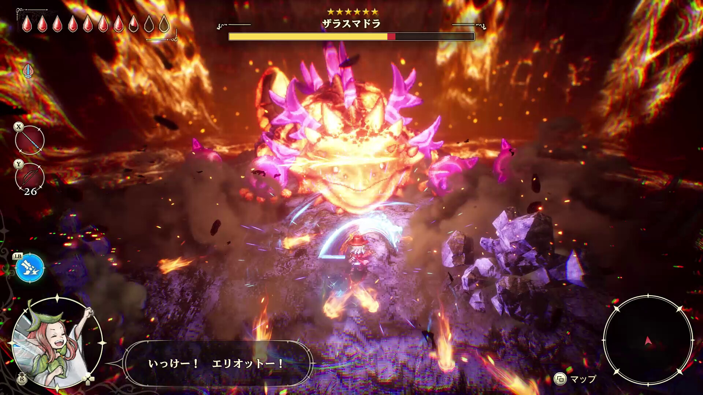
「オクトパストラベラー 大陸の覇者」×「FINAL FANTASY X」コラボを6月18日より開催。ティーダ，ユウナ，アーロンがプレイアブルで登場
https://
4gamer.net/s/G045223.2606
18013
…
イベントはストーリー監修を鳥山 求氏，キャラクター監修を野村哲也氏が担当する
住宅ローン、返済計画の定期的な点検欠かせず 日銀利上げで
住宅ローン、返済計画の定期的な点検欠かせず 日銀利上げで
私のポニテ萌えは「太陽へスマッシュ」の萌ちゃんとアストロレンジャーズのジョーの影響を受けているのだ。
友利奈緒
ユウマボウズさんがリポスト
【チケット特典のお渡しについて】
#RAS_BootIGNITION_東京
特典の引き換えは、
チケットのグッズ引換券にて実施いたします。
引換場所
SGC HALL ARIAKE 1F 特典引換所
引換日時
6/18(木) 13:00～終演後、列が途切れ次第終了
※開場時間中は場内に限り引き換えいただけます。
最近全然見ないからもう終わったと思ってた。まだやってたんだ。

TRAICY（トライシー）
@traicycom
山陽新幹線のワゴン車内販売、9月30日で終了 モバイルオーダーに移行へ
https://
traicy.com/posts/20260617
373886/?utm_source=twitter&utm_medium=twitter
…
Midjourney しばらく沈黙してると思ったら、ゴツいのだしてきたね
さてこの後は…
大手町(東京駅)からバスで有明ガーデンに行って、島村楽器のムジカパネル回収してから、会場へゆっくり向かいます。
ユウマボウズ
@Gc5RLsVaaV12052
吉野家で超特盛唐揚げ丼をいただきます
ライブ前のエネルギーチャージ完了！
「ひみつのアイプリ あつめて！シークレットメモリーズ」，ダウンロード版が6月30日23：59で販売終了。40％オフで購入できるファイナルセールも
https://
4gamer.net/s/G085318.2606
18009
…
本作は，アーケードゲームやアニメでおなじみの「ひみつのアイプリ」を原作としたゲームだ
【高市陣営中傷動画報道】AI捏造動画でデマ記事を作っていた週刊文春さん AI捏造動画を作成した松井健に釣られまくってて恥ずかしすぎると話題に
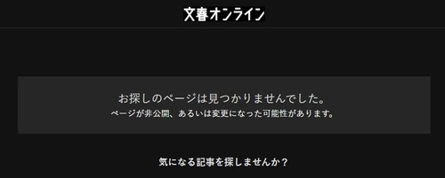
【高市陣営中傷動画報道】AI捏造動画でデマ記事を作っていた週刊文春さん AI捏造動画を作成した松井健に釣られまくってて恥ずかしすぎると話題に : ハムスター速報
フルネームそんな名前だったんだ！ジョセフィーヌだからジョーなのね。
吉野家で超特盛唐揚げ丼をいただきます
ライブ前のエネルギーチャージ完了！
パチンコ屋併設のなか卯の朝、勝負を控えた男たちの緊張感が漂ってる。レース前の騎手控え室にいるかのようだ。
遠洋マグロ漁、燃油高が直撃 宮城・気仙沼で出漁見合わせ相次ぐ
https://
nikkei.com/article/DGXZQO
CC163K00W6A610C2000000/?n_cid=SNSTW005&n_tw=1781741202
…
海外での燃料価格は2～3倍に上昇しており採算が悪化。操業短縮や航路変更を余儀なくされています。現場からは「水揚げの利益がほとんど消えている」と悲痛な声が聞かれます。
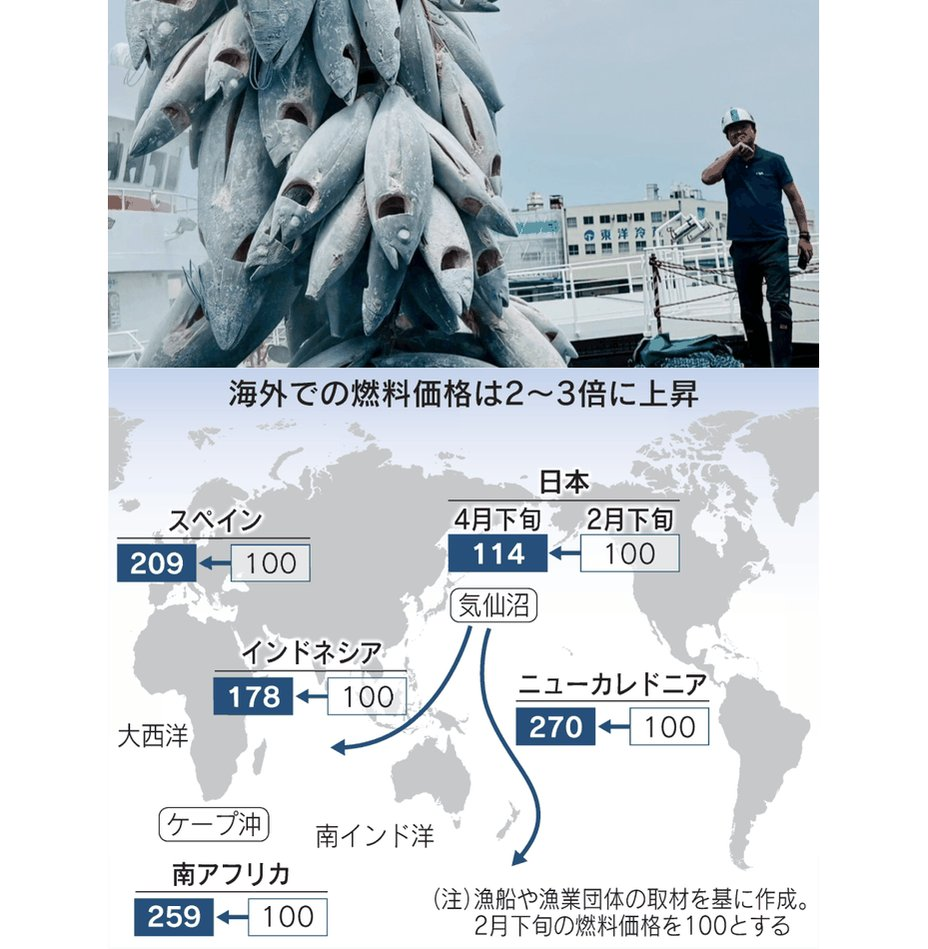
貴重な武器を“次の自分”へ託せ！かわいい巨大ロボ娘が捨て身で戦う2.5D FPS『最終回収SQUAD』プレイレポ
https://
gamespark.jp/article/2026/0
6/18/168134.html?utm_source=twitter&utm_medium=social&utm_content=tweet
…
※「山陰」と「山陽」では位置が真逆
鳥取環境大学のパンフレット→よく見ると…… 860万回表示の“まさかの間違い”に「瀬戸内海側を諦めていない」「これは許されざる誤植」
（記事URLはリプから）
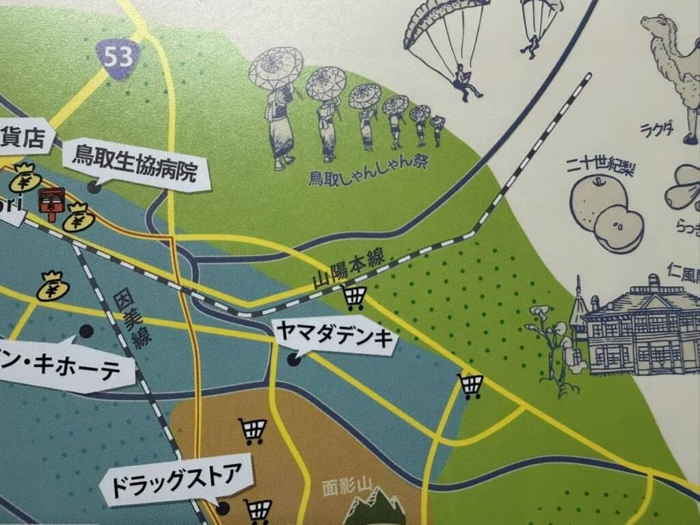
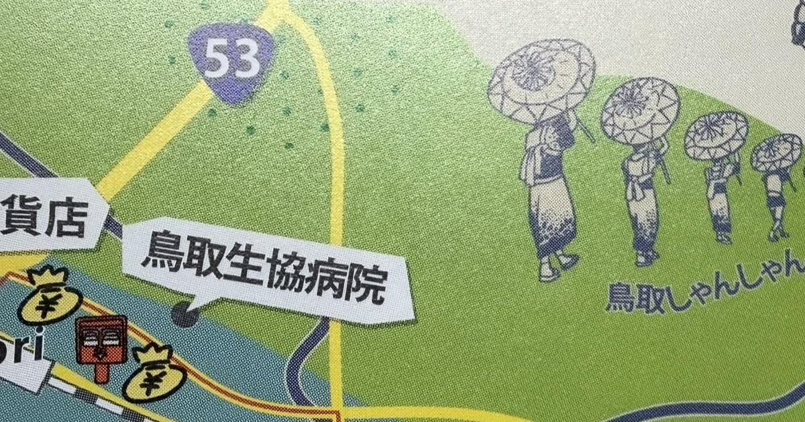
鳥取環境大学のパンフレット→よく見ると…… 860万回表示の“まさかの間違い”に「瀬戸内海側を諦めていない」「これは許されざる誤植」（1/2） | 電車 ねとらぼ
ユウマボウズさんがリポスト
RAISE A SUILEN LIVE 2026「Boot IGNITION」
Ave Mujica LIVE TOUR 2026「Exitus」
夢限大みゅーたいぷ 47都道府県制覇の旅
「スーパーポジション 〜スピンアップ編〜」
本日より、各バンドの会場限定デザインを含むオリジナルラベル缶を販売中
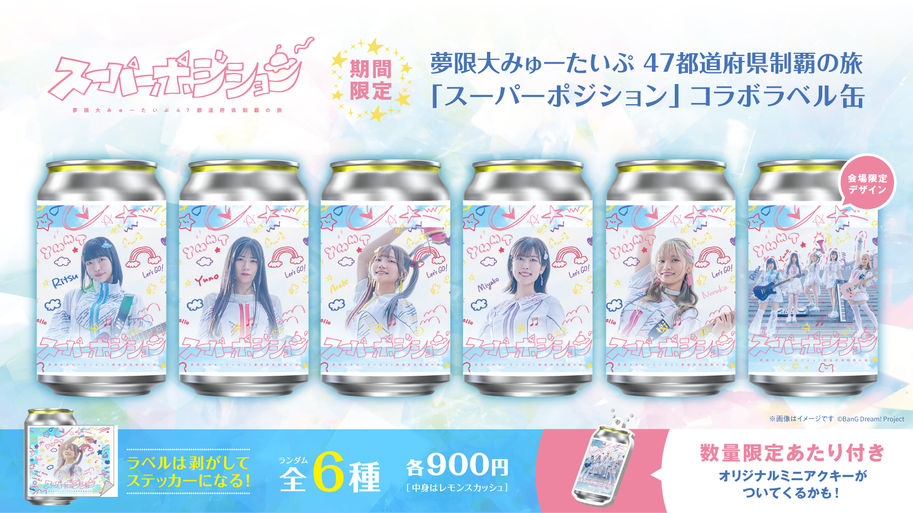
☆┈┈┈┈┈┈┈┈┈┈☆
『Choo Choo Choo』
Official Music Video
本日22時公開予定
☆┈┈┈┈┈┈┈┈┈┈☆
https://
youtu.be/ZhIlyzx9pK8
#学マス #ASOBINOTES
アニメイトでリメショカウントダウン始まったぞ！？ありがとうね？？！
松井五段が解説！【リフレッシュとレベルアップどちらが先？】
https://
youtu.be/St93nmXI1hA?si
=jss1_zPQC6zv2VIs
…
フォロワーさんに教えていただいた動画で処理確認した。山札をクロックに置いた時にレベルアップとリフレッシュが重複した場合、どちらから処理してもオッケーです。
なぜなに？ヴァイスシュヴァルツ ＜第4弾＞今回は、クロックが６枚、山札が１枚の状況でクロックにカードを置いて２枚引いたり、ダメー...
youtube.com
灰色のA社、かつては世界で使えて自宅が圏外と言われたものだがよくここまで
4K/240Hz mini LED液晶採用の「ROG Strix SCAR 18」など，ゲーミングノートPC計5製品12モデルをASUSが発売
https://
4gamer.net/s/G004755.2606
18012
…
Intel CPUモデルとAMD CPUモデルを用意。最も安価な製品でも約36万円と，コストパフォーマンス面では厳しいものがある
木村隼斗、のかたあきこ『温泉街リノベーション』。長門湯本温泉がわずか5年ほどでリノベーションを果たしたドキュメント。公費による廃業旅館取り壊し、地域金融機関のシンジケートローン組成による拠点建設、まちづくり会社自主財源としての入湯税アップなどなど、ファイナンスに踏み込んだ内容。
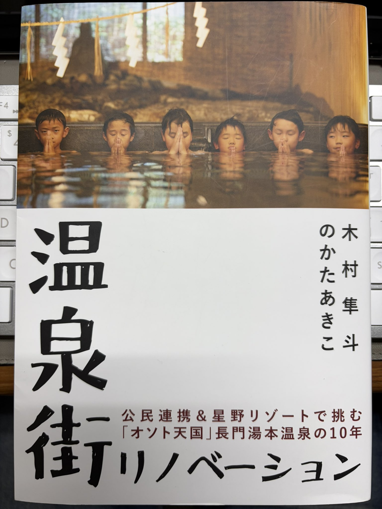
初々しい
「合格顔すぎる」 M!LK曽野舜太、11歳スカウト当時の姿を公開 「小5でこんな完成してるの」「泣けるレベルのかわいさ」
@sonoshunta0503
@milk_info
▼記事を読む▼
https://
nlab.itmedia.co.jp/cont/articles/
3884509/
…

Amazon Echo Studio、ファームウェアアップデートが来てやっと応答音が復活したよ。良かった良かった。
ITmedia NEWSさんがリポスト
「シャドーAI」7割超の企業が対策追い付かず “会社が選んだAIだけ利用”はもう限界？ ガートナー
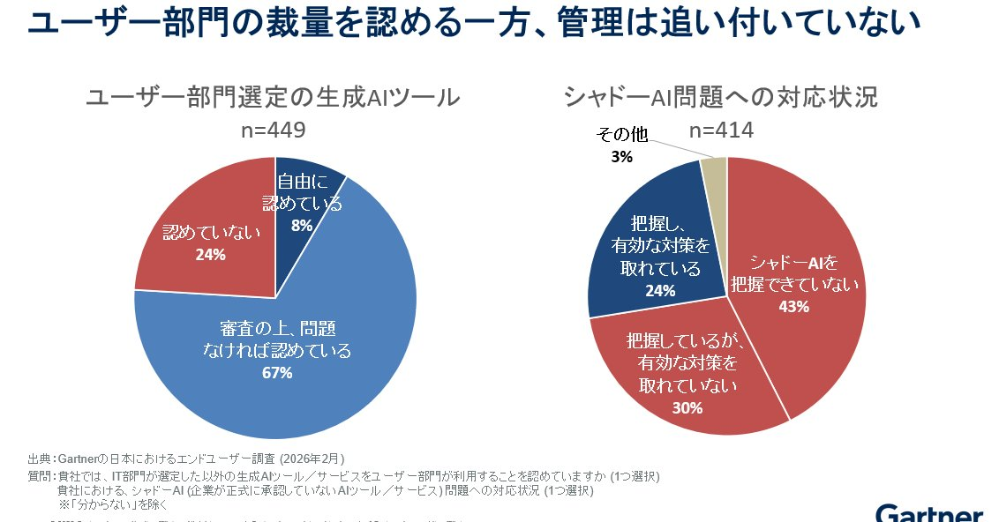
「シャドーAI」7割超の企業が対策追い付かず “会社が選んだAIだけ利用”はもう限界？ ガートナー
長いシリーズの作品はでんでん現象が発生しがち
そこまで付いてきているのは熱心な視聴者しかいない
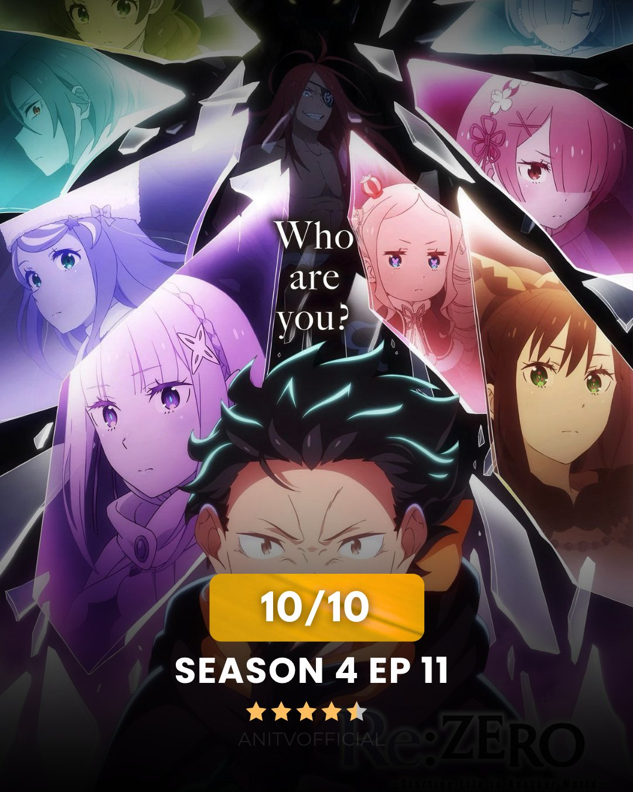
AniTV
@AniTVOfficial
「Re:ゼロ」シーズン4 第11話がiMDbで10/10の評価を12,000件でデビューし、史上4番目のアニメエピソードとして歴史に名を刻みました。
現在、史上最高評価のエピソードです。
ディズニーシーは左？ 右？
ディズニー手前にある標識→すぐ右隣には…… 「初見殺しすぎる」まさかの光景が100万表示「初めての人が見たら迷うよねえ」
（記事URLはリプから）
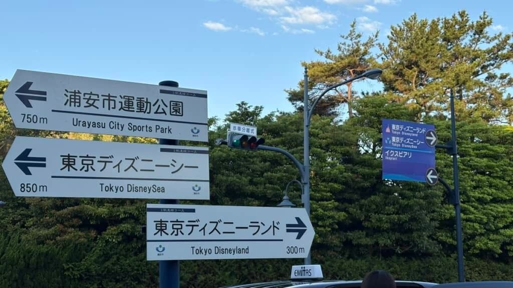
ディズニー手前にある標識→すぐ右隣には…… 「初見殺しすぎる」まさかの光景が100万表示「初めての人が見たら迷うよねえ」（1/2） | ディズニー ねとらぼ
番組冒頭では
「ボカロミュージックのセカイ」をお届け
書き下ろし楽曲を担当したボカロPと一緒に、最新のVOCALOID楽曲の紹介や、書き下ろし楽曲についてお話するコーナーになります
今回は煮ル果実さんが登場ぜひご覧ください
#プロセカ
6月25日（木）19:30より
『プロセカ放送局 #33』の生配信が決定！
吉岡茉祐さん、伊東健人さん、Machicoさん、田辺留依さんが出演ぜひご覧ください
YouTube Live：
https://
youtube.com/live/i4b78ksE3
5I
…
ニコ生：
https://
live.nicovideo.jp/watch/lv350677
234
…
#プロセカ
解決する見込みのないFable遮断事件に呆れてニュースメディアは一斉に手のひら返してオープンモデルを推し始めた。米国政府が「米国を守る！」とか言ってFable遮断したせいで逆にみんな「米国クローズAIはリスク！中華オープンモデル最高！」って言いだしてる。米国政府はこんなことを望んでたんですか
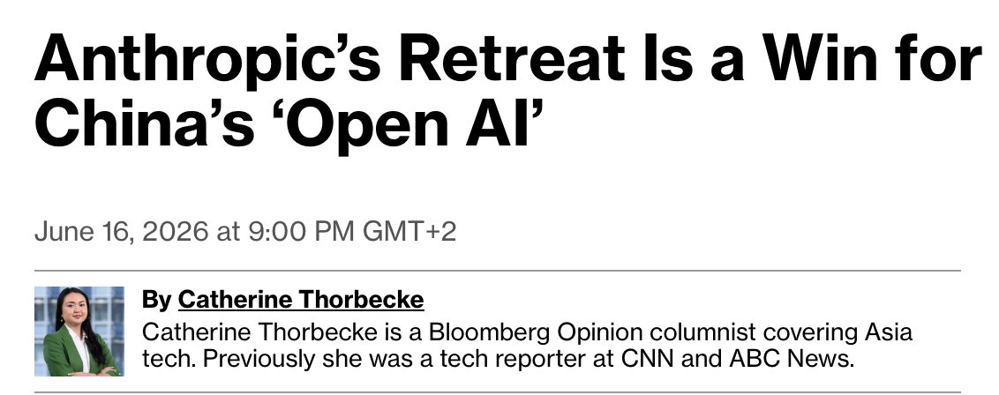
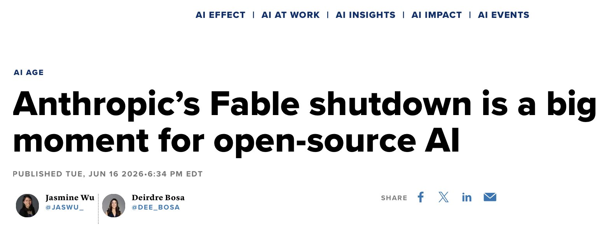
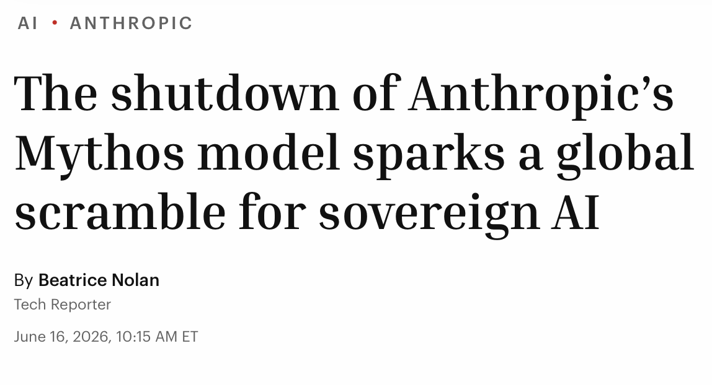
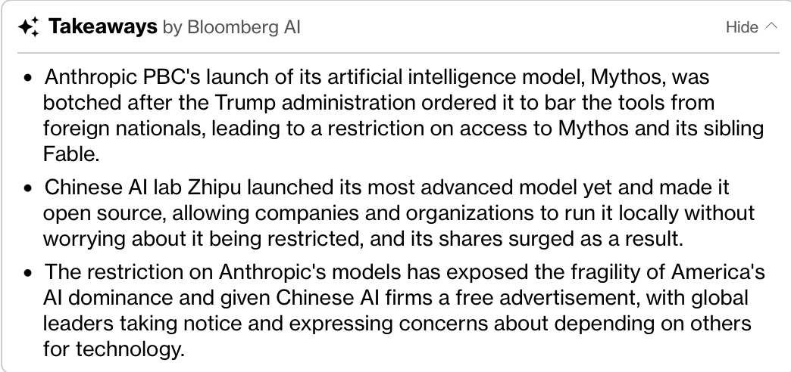
Chubby
@kimmonismus
主要なニュースメディアはすべて一致しています：Anthropic論争の最大の勝者はオープンソースです。
そして私は心から同意します。数日前に言いましたが、もう一度言います：これはオープンソースにとって史上最大のPR勝利です。
「斜めCloseボタン」広告に批判 「閉じ方分からなかった」「悪意を感じる」
「斜めCloseボタン」広告に批判 「閉じ方分からなかった」「悪意を感じる」
6月19日（金）20時より、WEBラジオ番組
『セカラジ#67』プレミア公開
パーソナリティに吉岡茉祐さんと本泉莉奈さんが出演
ぜひご覧ください
配信はこちら
https://
youtu.be/flkEuxC1A6E
#プロセカ #セカラジ
日経平均、一時初の7万1000円台 「タカ派FRB」よりインテル株高
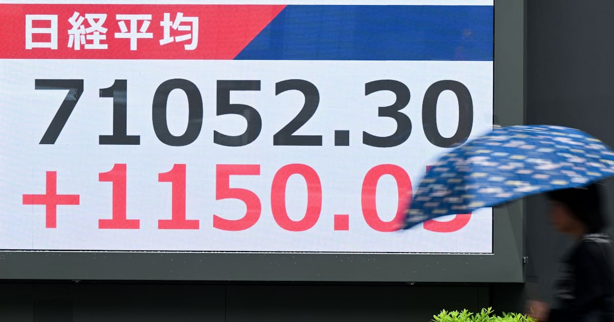
日経平均、一時初の7万1000円台 「タカ派FRB」よりインテル株高
ITmedia NEWSさんがリポスト
NRI流“業務に最適なAIモデル”の選び方 「ベンチマークだけで優劣は決まらない」
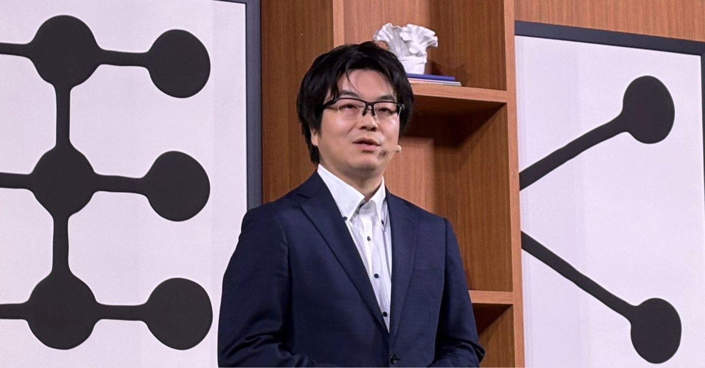
NRI流“業務に最適なAIモデル”の選び方 「ベンチマークだけで優劣は決まらない」
応募規約（必読）
https://
wfs.games/campaign/guest
-polaroid-0618.html
…
▼視聴はこちら
https://
youtube.com/live/dBxJ_Y4Ir
I4
…
#ヘブバン

ヘブンバーンズレッド 小柳日菜さん会沢紗弥さんサイン入りチェキプレゼントキャンペーン応募規約
「HD-2D」シリーズで初となるアクションRPG「冒険家エリオットの千年物語」，本日発売。「スーパープレイ動画投稿キャンペーン」も開催中
https://
4gamer.net/s/G093380.2606
18004
…
パセラリゾーツでは，7月1日から28日までコラボカフェが開催される
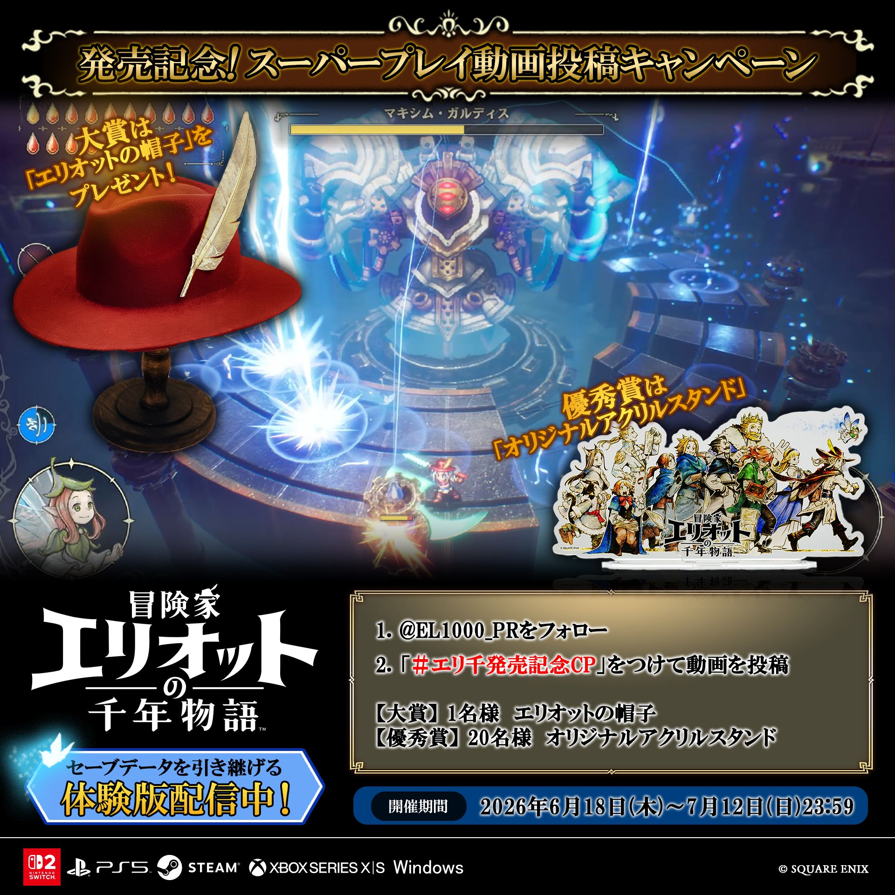
緊急地震速報、採用されなかった“幻の音”が公開される！この音は…うわああああ！！ #雑談・その他の話

緊急地震速報、採用されなかった“幻の音”が公開される！この音は…うわああああ！！ - オレ的ゲーム速報@刃の記事ページ
jin115.com
本日の番組終了まで
ゲスト登場記念キャンペーン
李映夏役 #小柳日菜 さんとシャロ役 #会沢紗弥 さんのサイン入りチェキが3名様に当たる！
フォロー&本投稿をリポストで応募
#ヘブバン生放送 をつけて引用リポストすると当選確率がアップ!?
「Z級映画」の夜会 奇抜な設定、殺人「凧」に襲われて
https://
nikkei.com/article/DGXZQO
UC13BAE0T10C26A5000000/?n_cid=SNSTW005&n_tw=1781739229
…
主人公が祖母の遺品として入手した凧（たこ）が人々に次々と襲いかかる――。観客の感想は「言葉に詰まる」。B級映画を通り越したくだらなさのZ級映画を平日夜に上映する試みが始まりました。
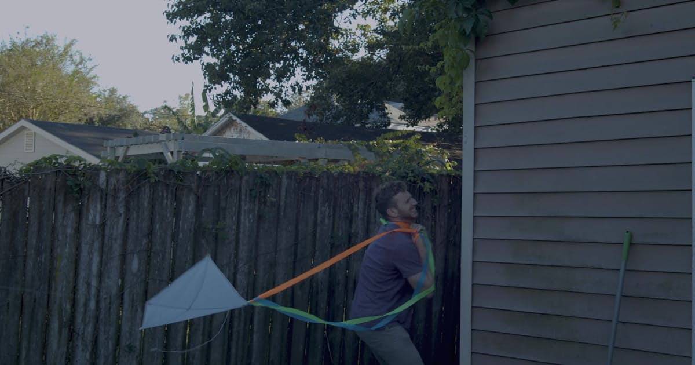
B級ならぬ「Z級映画」の夜会 奇抜な設定、ファンも「言葉に詰まる」
ネットアーティストを目指す女の子の人生選択リズムADV「One Song, One Life」，パブリッシングをジー・モードが担当。Steamでは体験版も配信中
https://
4gamer.net/s/G099877.2606
17049
…
ジー・モードは本作の開発支援も行う。また，リズムゲームや収録曲の一部を確認できる「2nd PV」も公開された
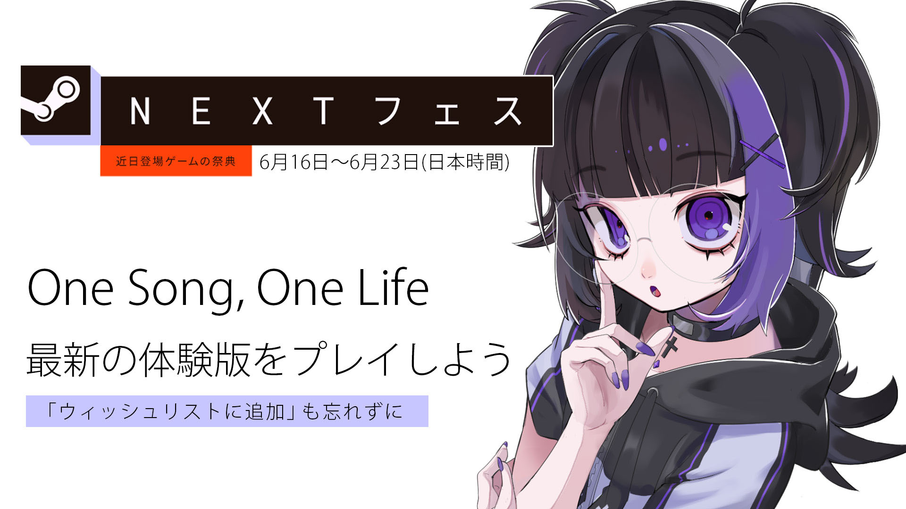
［プレイレポ］お家に帰る？ それともおさんぽする？ 「リトルキティ・ビッグシティ〜まいごの子猫の街さんぽ〜」たくさんの出会いと体験を
https://
4gamer.net/s/G070179.2606
17022
…
お家にはすぐ帰れる。でも，帰らないのが楽しい。子猫になって気ままに街さんぽ。Nintendo Switch向けパッケージ版が6月18日発売
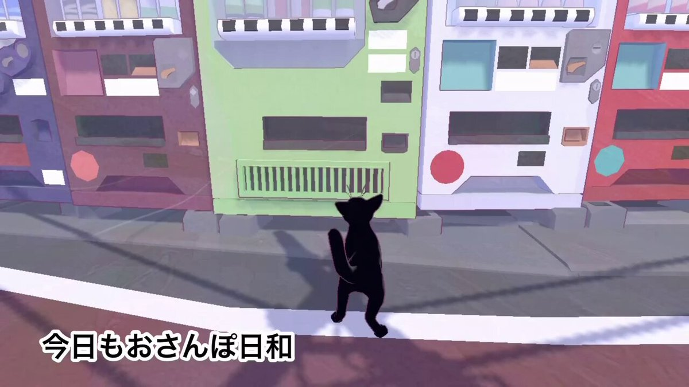
最初のキルが主人公の生き方を大きく変える！？ すべてのNPCをキル可能な「Tale's Edge」，主人公の成長はプレイヤー次第
https://
4gamer.net/s/G095979.2606
18008
…
公開された開発者ダイアリーでは，敵を殺すか見逃すかという判断が主人公の成長やゲーム世界に与える影響に焦点を当てている
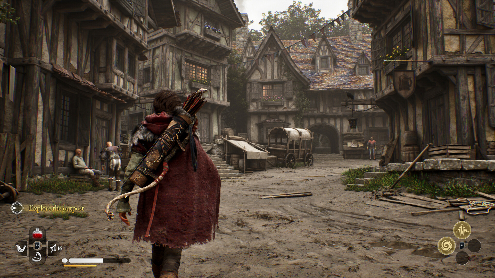
マックとミスドを買ってきた妻「アレやるよ！」→夫が仰天した“まさかの光景”が130万再生「こういう奥さん、最高だろ」「カロリー爆弾すぎるww」（1/2） | グルメ ねとらぼ
ポン☆潤々さんがリポスト
＼開催まであと9日！／
【アイドルマスター SideM リメンバーショットフェア第2弾】は6/27（土）からスタート♪
本日のカウントダウン担当は
「あの頃」の古論クリスさん！
▼フェア詳細はこちらから
https://
x.gd/QmhKS
#SideM
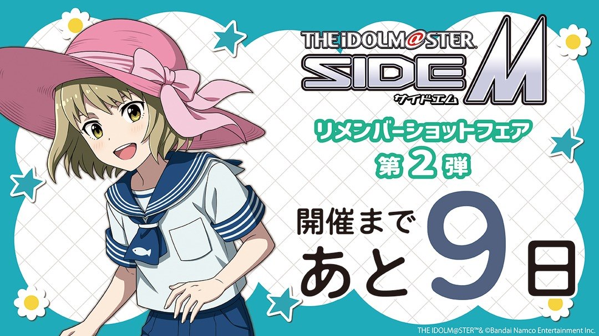
ミスドでマックを挟む狂気
マックとミスドを買ってきた妻「アレやるよ！」→夫が仰天した“まさかの光景”が130万再生「こういう奥さん、最高だろ」「カロリー爆弾すぎるww」
（記事URLはリプから）
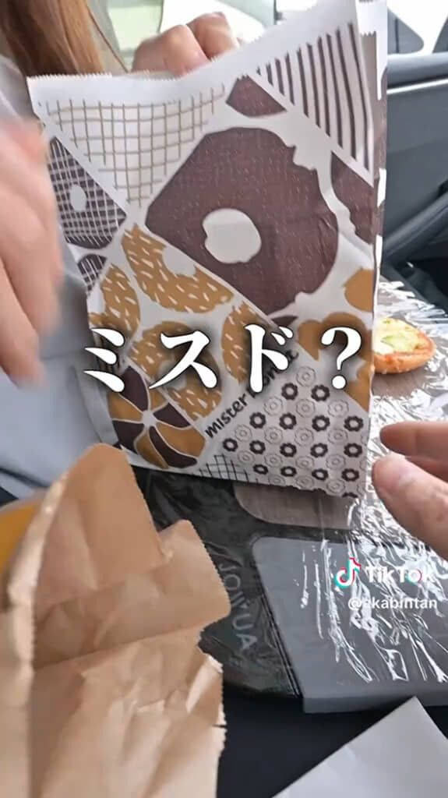
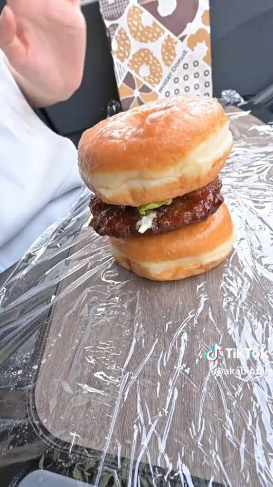
病みながらネットアーティストを目指す女の子の人生を演奏で変えるリズムADV『One Song, One Life』最新デモ版公開。ジー・モードがパブリッシング担当
https://
gamespark.jp/article/2026/0
6/18/168133.html?utm_source=twitter&utm_medium=social&utm_content=tweet
…
レーン上に流れる“選択肢ノーツ”を選んで運命が変化。楽曲もシナリオに応じた内容に変わります。
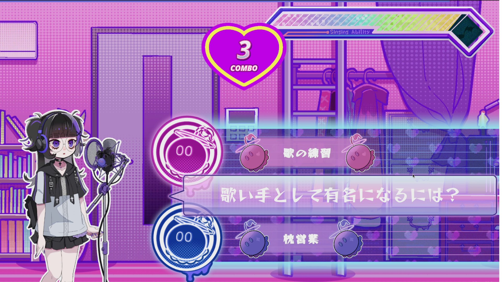
「プロジェクトセカイ」の日常を描いた
4コママンガを公開
364話「異なる視線」
#プロセカ #セカイの4コマ
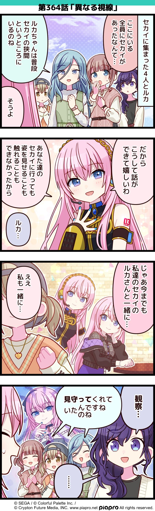
『超かぐや姫！』公式さんがリポスト
Netflix映画『#超かぐや姫！』
定番プリントケーキ＆マカロン第2弾の発売が決定
プリロール限定描き起こしイラストや場面写を使用した特製スイーツで、最高のティータイムを過ごしませんか♪
購入特典缶バッジ付きでお届けします
詳細は⇨
https://
priroll.jp/shopbrand/ct16
646/
…
#CosmicPrincessKaguya
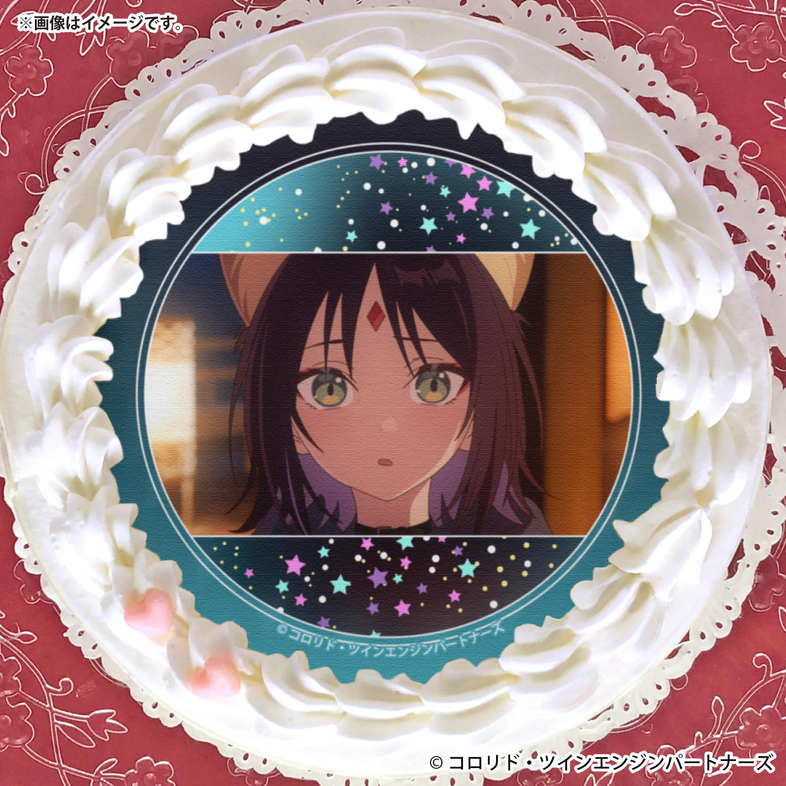
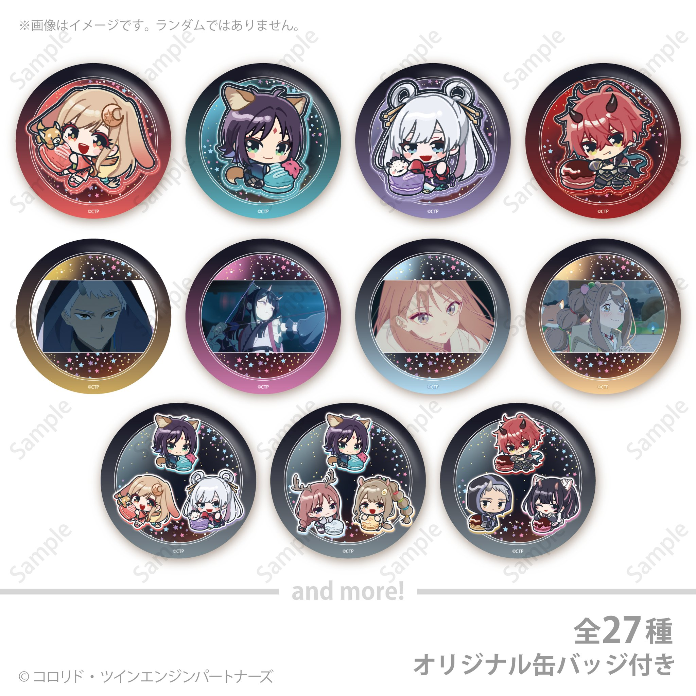
『シャインポスト』公式さんがリポスト
【新商品】
『シャインポスト Be Your アイドル！』より、B2タペストリーの第1弾が登場！
ホビーストックWEBショップで購入すると10％ポイント還元！
ご注文はこちらから！
https://
hobbystock.jp/groups?org%5B0
%5D=4661&mkr%5B0%5D=26&sortOrder=created&utm_source=hstweet&utm_medium=twitter&utm_campaign=hstweet
…
#シャインポスト
SuperGroupiesから仁菜や「 #トゲナシトゲアリ 」のアパレル登場！
仁菜たちの音楽や衝動を表現した限定アイテム。
▼特集ページ
https://
super-groupies.com/feature/girls-
band-cry_02_watch?utm_source=official&utm_medium=social&utm_campaign=20260618_gibc
…
▼予約期間
2026年6月18日（木）昼12時～2026年7月13日（月）昼12時まで
#ガルクラ
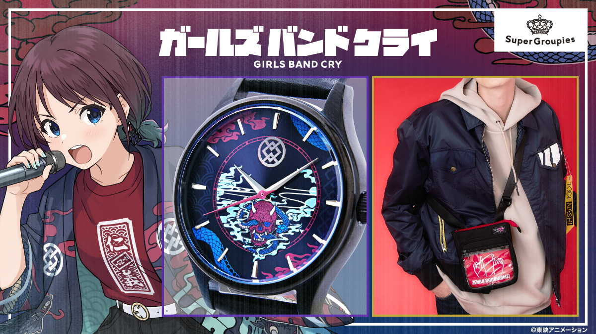
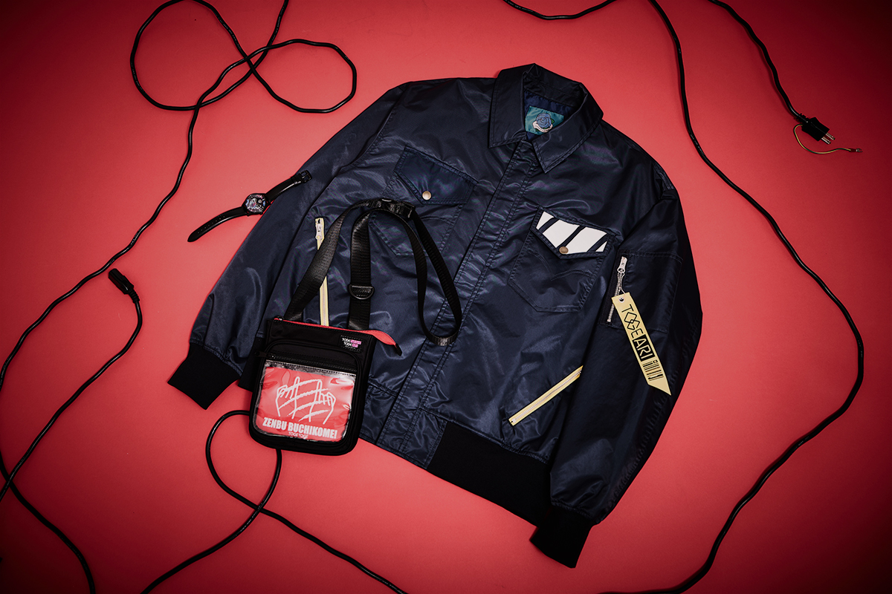
イベント最終日
イベント『June Bridal Heroines！』は本日22時までの開催です！
また本日22時過ぎに、次回イベントの情報公開を予定しております
ぜひチェックよろしくお願いいたします
#ユメステ #ワーダイ #ワールドダイスター
ミッションライブイベント「ディープ・ローズ・ホライズン」開催中
イベントPを集めることで、★3 #宇田川あこ と★2 #白金燐子 に出会えます
イベントは明日の20:59まで！お見逃しなく
#バンドリ #ガルパ
学園アイドルマスター【公式】さんがリポスト
今日は #おにぎりの日
おにぎりと言えば #学マス の
『The Rolling Riceball』なので…
花海佑芽さんの魅力を
ギュッと！詰め込んだ画像を作ってみました
こ゛れ゛で゛ど゛う゛だ゛ぁ”ぁ”ぁ”！！！
かわいい！と思った方は
▼誰よりもアツく思いを込めてプロデュース！
https://
play.google.com/store/apps/det
ails?id=com.bandainamcoent.idolmaster_gakuen&hl=ja&utm_source=apac_soc&utm_medium=twt&utm_content=Jan0125&utm_campaign=AGdiscover&pcampaignid=MKT-RDR-apac-jp-1002255-soc-twt-gm-AGdiscover-Jan0125-Text
…
アニメ『シャインポスト』YouTubeで配信中
第3話・第4話の公開は本日まで！
お観逃しなく！
視聴はこちらから
https://
youtu.be/m5FVg4PAAI8
#シャインポスト
9/12(土)・9/13(日)にぴあアリーナMMにて行われる「シャインポスト BRiGHT STARS FESTIVAL 2026」開...
youtube.com
私自身はそう思わないのですが、さまざまな職場を知っているわけではないので、「わからない」という回答になります。
#mond_ockeghem
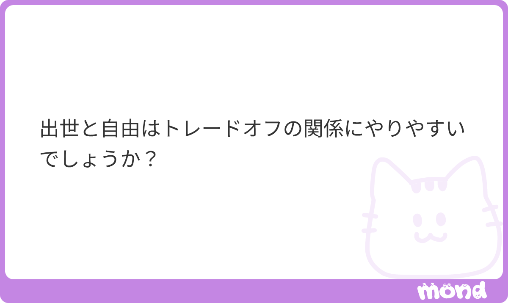
大名作『スーパーマリオ』を、Atariのポータブルゲーム機「Lynx」に勝手移植する猛者が登場!!
その奇跡のような勝手移植に、Lynxフォーラム人々は拍手喝采で本作を称えているンだッッ!!
https://
github.com/pwsqrd/lynx_smb
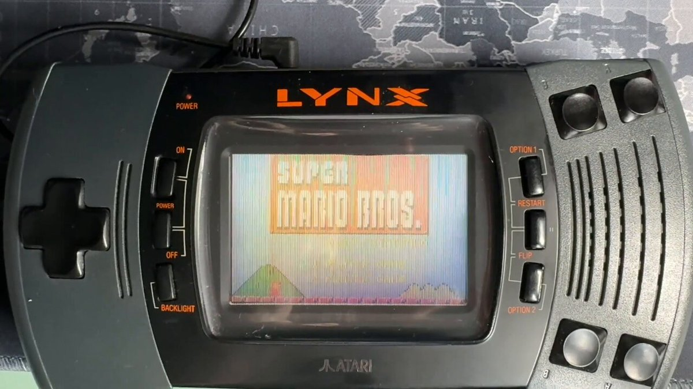
イラン合意、親イスラエルの米議員らから不満 バンス副大統領に矛先
イラン合意、親イスラエルの米議員らから不満 バンス副大統領に矛先
そろそろ出発します！
今日の装備はこんな感じです。
RAS1stワンマンの限定Tシャツを持っている人は果たしているのでしょうか？
#バンドリ
#RAS
#RAS_BootIGNITION_東京
ユウマボウズ
@Gc5RLsVaaV12052
おはようございます！
今日はRASのライブ当日です！
単独ライブは富士急ハイランド以来なので、しっかりと肌で浴びたいと思います。
朝から雨なので、午前中はのんびり家で過ごして、午後から会場へ向かいます。
よろしくお願いいたします！
ポン☆潤々さんがリポスト
◤ヴァイスシュヴァルツ 今日のカード◢
6月26日(金)発売
ブースターパック グランブルーファンタジー
ノーマルカードを公開！
商品情報はこちら！
https://
ws-tcg.com/products/gbf_b
p/
…
#グラブル #WS
ポン☆潤々さんがリポスト
◤#ヴァイスシュヴァルツ今日のカード◢
6月26日(金)発売
ブースターパック グランブルーファンタジー
パラレルカードを公開！
商品情報はこちら！
https://
ws-tcg.com/products/gbf_b
p/
…
#グラブル #WS
「Once Human」，PS5＆XBOX Series X|S向けオープンβテストを7月9日まで開催
https://
4gamer.net/s/G092653.2606
18006
…
テスト期間中に条件を達成すると，「外観カスタムボックス」「武器スキンカスタムボックス」を受け取れる
Twitterのオタクの裏垢の裏垢
大名作「PC版 バイオハザードRE4」で、マルチプレイを可能にするMODが登場!!
本作、現在あっちこっちでセール中になっているので、買おうか買うまいか、数日間ずっと悩んでいるのはココだけの話
※バイオシリーズを全く遊んだ事がないので、1〜4まで一気買しようか悩み中
https://
nexusmods.com/residentevil42
023/mods/6539
…
「3年かけて開発したゲームが77本しか売れてない」…ひとまず価格を改定―インディーゲーム開発者の嘆きに多数のアドバイス集まる
https://
gamespark.jp/article/2026/0
6/18/168132.html?utm_source=twitter&utm_medium=social&utm_content=tweet
…
サッカーW杯「両国結びつけた」 オランダ晩さん会、陛下お言葉全文
サッカーW杯「両国結びつけた」 オランダ晩さん会、陛下お言葉全文
村田製作所、株価一時18％高 ＳＭＢＣ日興証券が投資判断最上位に
村田製作所、株価一時18%高 SMBC日興証券が投資判断最上位に
PayPay、「請求リンク作成」は本人確認必須に 「マイコード表示」も 不正利用対策で
eKYC未完了のアカウントによる請求リンク作成を規制することで、「送る・受け取る」機能を悪用した不正利用や詐欺などへの対策を強化する。
itmedia.co.jp
そのナムコの地下ゲーム考古学テキストは、四章におよぶ壮大なものであったが、noteのシステムがPCに負荷をかけすぎるために、2章を書き終えたところで力尽きた
未完成の3章は事件の整理が完璧に時系列までは完成、4章はオチまでは完成していたが、書いた文字を削って大きく校正する部分が手を出せず
日本精機、磁石不使用の位置センサー量産 脱レアアースで28年にも
日本精機、磁石不使用の位置センサー量産 脱レアアースで28年にも
遠洋マグロ漁、燃油高が直撃 宮城・気仙沼で出漁見合わせ相次ぐ
遠洋マグロ漁、燃油高が直撃 宮城・気仙沼で出漁見合わせ相次ぐ
「雨だから太陽光発電できない」はもう言い訳にならない時代に
「雨だから太陽光発電できない」はもう言い訳にならない時代に | ギズモード・ジャパン
立憲民主党の議員「自衛隊は経済的に厳しい子供が行く。豊かな子供は自衛隊とかなりません」→ヤバいことになってしまう・・・ #炎上
立憲民主党の議員「自衛隊は経済的に厳しい子供が行く。豊かな子供は自衛隊とかなりません」→ヤバいことになってしまう・・・ - オレ的ゲーム速報@刃の記事ページ
jin115.com
連邦オフ会の参加者を募る為に、ナムコに関する壮大な地下テキストをnoteに書いていたのだが、数日前の時点で参加者がほぼ予定数に達したので、公開は先送りに
考えてみれば前回の「レンタルソフト屋マップ」もオフ会の告知用に書いたものだった
なので公開は無期延期に
誰も作らなかったレンタルパソコンソフト屋一覧、ついに公開！(地下ゲーム考古学 番外編) ｜吉野@連邦(renpou.com)
noteのイベント会場に出版社と書店集めて、各社「最高の推し10冊」を持ってくるブックフェアをやってほしい。
OpenAIは、巨額赤字を国家安全保障に絡めて、西側諸国全体で補填する… と言うウルトラプレイカードを持ってるでな。5兆ぐらいの赤字はまだ無問題。too big to fail強い。
歩行者をはねて異世界転生させるカオスなアクションゲーム「Truck-kun is Supporting Me from Another World?!」，7月30日にSteamで配信
https://
4gamer.net/s/G101795.2606
18005
…
現実世界と異世界を行き来しながら冒険を繰り広げる。体験版を配信開始
明治安田生命、積立保険の予定利率1.6%に 今年2度目の引き上げ
明治安田生命、積立保険の予定利率1.6%に 今年2度目の引き上げ
音声を入れるだけで後処理もQAも不要な表情アニメを自動生成。「VARCO SyncFace」の開発ノウハウとは［NDC26］
https://
4gamer.net/s/G999104.2606
18002
…
音声を入れるだけで表情アニメが自動生成。後処理もQAも不要な品質をどう実現したのか。
大手商社5社の年収、全社で最高に 2社が2000万円超
https://
nikkei.com/article/DGXZQO
UC172SN0X10C26A6000000/?n_cid=SNSTW005&n_tw=1781741753
…
「外貨ベースで考えると決して高くはない」
「もっとハングリー精神を持って仕事をしないと国際競争力を維持できない」
厚待遇と見なされることに、社員の受け止めは複雑のようです。
大手商社の年収、全社で最高に 2社が2000万円超も「世界水準は遠い」
なるせひろのりさんがリポスト
夏限定の「BBQステーキワッパー」新発売！
直火焼きの100%ビーフパティに牛バラステーキを豪快に重ね、10種スパイスが香るコク深い「特製BBQスパイスソース」で仕上げたボリューム満点の新作登場！
6/19(金)～
期間限定！
#バーガーキング
ヴァニラウェア出身のクリエイターが奈良の山奥で6年かけて作った“読書型”ファンタジーアドベンチャー―Steam Next フェス注目ゲーム10選【2026年6月17日】
https://
gamespark.jp/article/2026/0
6/18/168131.html?utm_source=twitter&utm_medium=social&utm_content=tweet
…
貝さんさんさんがリポスト
7月から若手演出が1名、スケジュールに少し空きが出そうです！（制作部出身で弊社社員です）
自社元請け作品で日々経験を積んでおりますが
社内だけでなく、新しい現場での出会いや刺激が本人のさらなる成長に繋がると思っています。
GoogleのCEO、卒業式スピーチで学生たちが帰っちゃう抗議を受ける
GoogleのCEO、卒業式スピーチで学生たちが帰っちゃう抗議を受ける | ギズモード・ジャパン
重さ5gのスマホリングは、指にひっかけるだけで首や肩がラクになる #BuyPR
重さ5gのスマホリングは、指にひっかけるだけで首や肩がラクになる | ギズモード・ジャパン
ローマ教皇のAIへの警告で、「宗教上の理由でAIを使わない」が増えるかも？
ローマ教皇のAIへの警告で、「宗教上の理由でAIを使わない」が増えるかも？ | ギズモード・ジャパン
夏は氷出しもいける。空気圧でお湯が落ちないガラス茶器の仕組みが楽しい #BuyPR
夏は氷出しもいける。空気圧でお湯が落ちないガラス茶器の仕組みが楽しい | ギズモード・ジャパン
イビデン株価が連日上場来高値 米インテル株上昇で連想買い

イビデン株価が連日上場来高値 米インテル株上昇で連想買い
Torishima / INTPさんがリポスト
英語で文章を書かせる時もそうなんですが、AI やたら em dash — たとえば何かを補足する時に使う、を使うんですよね。嫌いで無効化してます。
Torishima / INTP
@izutorishima
これ良すぎる
https://
gist.github.com/k16shikano/fd2
87c3133457c4fd8f5601d34aa817d
…
あーあ、事実上米国政府は「Fableが絶対ジェイルブレイクされないようにしろ」って言ってるらしい。だからそんなん無理だって言ってんだろ。「絶対バグのないアプリを作れ」って言ってるようなもん。こんなんもうFableの再公開は絶望的やぞ。まあ「そもそも論として原理的に悪用が防げないようなAIが何
WIRED
@WIRED
トランプ政権の当局者たちはWIREDに対し、アンソロピックがFable 5を再リリースしたい場合、モデルのガードレールが回避されないようにする必要があると述べています。セキュリティ専門家たちは、それができないと語っています。
https://
wired.com/story/the-whit
e-house-wants-anthropic-to-block-all-jailbreaks-that-may-not-be-possible/?utm_brand=wired&utm_social-type=owned&utm_source=twitter&utm_medium=social&utm_campaign=aud-dev
…
「銀行業」株価指数が30年ぶり高水準 ＡＩからの分散先で存在感
「銀行業」株価指数が30年ぶり高水準 AIからの分散先で存在感
ファンタジー世界みたいな景色。
異世界転生した主人公が、ドヤ顔で、
「こうなる理由を知っているぞ！」
「雪氷藻類だろ？ みんな知ってるよ」
「(´ω`)」
47NEWS
@47news_official
立山・室堂（富山県）の残雪赤く染まる 「雪氷藻類」が繁殖
https://
47news.jp/14486278.html
母国イングランド、60年ぶりＷ杯優勝へ快勝発進 エースのケーン２発
【サッカーワールドカップ】母国イングランド、60年ぶりＷ杯優勝へ快勝発進 ケーン２発
【本日終了】映画化もされた人気漫画『不能犯』が「全巻77円」で買えるガチでヤバい激安セールは今日まで！！全部揃えてもたったの「924円」！！ #漫画・アニメ等
【本日終了】映画化もされた人気漫画『不能犯』が「全巻77円」で買えるガチでヤバい激安セールは今日まで！！全部揃えてもたったの「924円」！！ - オレ的ゲーム速報@刃の記事ページ
jin115.com
ウォーシュFRB「大きな中銀」から転換 資産圧縮や対外発信の簡素化で

ウォーシュFRB「大きな中銀」から転換 資産圧縮や対外発信の簡素化で
さたけさんがリポスト
やりたい放題であるw
「東京ワルキューレ」，メイドの香坂涼乃，元プロゲーマーの玉越珠姫，女医の三角果凛が仲間キャラクターとして参戦
https://
4gamer.net/s/G090511.2606
18003
…
Switch版の予約受付を開始。予約期間中と発売後3週間は10％オフに
最近シールドタックルがアツいからバゼル槍もシルタにしちゃおうかな
Unreal Engine 5.8に対話型AI接続サポートが導入され話題。ゲーム開発に実際にAIが参加する時代に？
https://
gamespark.jp/article/2026/0
6/18/168130.html?utm_source=twitter&utm_medium=social&utm_content=tweet
…
【AIセキュリティとは何か】 AIセキュリティ入門 -生成AI・RAG・AIエージェントを安全に使うための基礎- -Udemyコースを一部無料公開- #udemy
生成AIは、文章作成、要約、調査、プログラミング支援、社内文書検索など、さまざまな業務で活用されています。一方で、個人情報や機密情報の...
youtube.com
属性100%はさすがに強いと思う
自衛隊をバカにして職業差別をする立憲民主党 なぜか朝鮮学校の為に全力で動いていた事が判明
自衛隊をバカにして職業差別をする立憲民主党 なぜか朝鮮学校の為に全力で動いていた事が判明 : ハムスター速報
なるせひろのりさんがリポスト
全編AIを使用した映画「怪奇！死肉の男」7月24日公開、予告映像にグロテスクな男の姿
全編AIを使用した映画「怪奇！死肉の男」7月24日公開、予告映像にグロテスクな男の姿（動画あり） - コミックナタリー
円2年ぶり安値、「タカ派FRB」でドル一強 市場は再介入身構え
円2年ぶり安値、「タカ派FRB」でドル一強 市場は再介入身構え
半導体受託生産でサムスンへの打診増加 BYDやGoogle、AI向け需要拡大
半導体受託生産でサムスンへの打診増加 BYDやGoogle、AI向け需要拡大
ジンオウガ亜種装備スロット無いんだ
錬成しなくていいよって配慮かな
名越スタジオに新たな動きか。プロデューサー・佐藤大輔氏のプロフィールが「元名越スタジオ」に変更―公式声明は未だなし
https://
gamespark.jp/article/2026/0
6/18/168129.html?utm_source=twitter&utm_medium=social&utm_content=tweet
…
なるせひろのりさんがリポスト
［ITmedia Mobile］「OPPO Find X9 Ultra」日本上陸 300mm超望遠ユニット（レンズ）を装着可 7月8日発売
「OPPO Find X9 Ultra」日本上陸 300mm超望遠ユニット（レンズ）を装着可 7月8日発売
Attention Is All You Needの第2著者がGoogleからOpenAIに！
Noam Shazeer
@NoamShazeer
OpenAIへの参加を発表できることを大変嬉しく思います。そこの素晴らしいチームと一緒に働くのを楽しみにしています。
前進するという決断は難しいものでした。Googleの素晴らしいチームと一緒に築き上げてきたすべてに、非常に誇りを持っています。皆さんと一緒に働くことは、光栄であり喜びでした。
こども家庭庁、政策判断に若者の声 初の10万人調査
こども家庭庁、政策判断に若者の声 初の10万人調査
「BeReal」日本で650万ユーザー突破 “Z世代”けん引、18～23歳が過半数
「BeReal」日本で650万ユーザー突破 “Z世代”けん引、18〜23歳が過半数
久々に曲を作ってみました。
「AIにAIの心を表現させる」という試みです。
『干物妹！うまるちゃん』作者のサンカクヘッド先生、テレビで初めて顔出しするｗｗｗｗ #漫画・アニメ等
『干物妹！うまるちゃん』作者のサンカクヘッド先生、テレビで初めて顔出しするｗｗｗｗ - オレ的ゲーム速報@刃の記事ページ
jin115.com
深津 貴之 / THE GUILD, noteさんがリポスト
⋱『宇宙兄弟』読者のみなさん ⋰
@uchu_kyodai
のキャラクターたちに想いを馳せ、人生のどこかで時間をともにした方。そんな2400件以上の声が、完結を記念してひとつに集まりました。
あなたも熱い想いをnoteにつづって、みんなで分かち合い、届けませんか
https://
note.com/hashtag/%E5%AE
%87%E5%AE%99%E5%85%84%E5%BC%9F
…
近畿車両株価が一時8.9％高 香港投資ファンドが6.9%保有
近畿車両株価が一時8.9%高 香港投資ファンドが6.9%保有
｢織田信長が愛した美少年｣はウソ…名前も容姿も男色関係も誤解だらけ､本能寺で散った"18歳の小姓"の素顔 #ldnews
｢織田信長が愛した美少年｣はウソ…名前も容姿も男色関係も誤解だらけ､本能寺で散った"18歳の小姓"の素顔
『VRな彼女』VRMモデル読み込み機能実装！"推し"をヒロインにできる―記念の20%オフセールも実施
https://
gamespark.jp/article/2026/0
6/18/168128.html?utm_source=twitter&utm_medium=social&utm_content=tweet
…
男色ディーノのゲイムヒヒョー ゼロ：第894回「同じ体験をしてほしい」
https://
4gamer.net/s/G004083.2606
16023
…
サッカーワールドカップが開幕して，早くも寝不足の日々が続いているディーノ選手。今週は観戦の合間にピッタリ（？）な新作ゲイムを発見したというお話です
ポン☆潤々さんがリポスト
本日6月18日はNAアストロレンジャーズ、ジョセフィーヌ・グッドウィンの誕生日！！
一緒にお祝いしましょう！
#ジョー
#NAアストロレンジャーズ
#バックブレーダー
#第2弾パワーブースター
#レツゴー30th
パソナ、淡路島丸ごとウエルネス観光 高単価・安定稼働で経営も「整え」
パソナ、淡路島丸ごとウエルネス観光 高単価・安定稼働で経営も「整え」
明日配信開始の電子書籍数多すぎ･･･。
最終的には5万台規模で月10億回のスキャンを可能にする構想。
※価格・提供時期・医療承認状況は現時点で未確認
ライブ会場：
Midjourney [Hardware 1] Unveiling
Midjourney
【速報】Midjourney、初のハードウェア「Midjourney Scanner」を発表
画像生成AIで知られるMidjourneyが、全身医療画像向けの大型装置を披露。
「全身超音波コンピュータ断層撮影（full body, ultrasonic, computational tomography）」と説明
「ストリートファイター6」Year 4最初の追加キャラクター「ヤスミン」が8月3日に参戦。エスクリマを駆使するスピードタイプのファイター
https://
4gamer.net/s/G063504.2606
18001
…
スーパーアーツも確認できるゲームプレイ映像を公開中
ソフトバンクＧ株価一時5.5％高 英アーム上昇、自律的ＡＩに期待

ソフトバンクG株価一時5.5%高 英アーム上昇、自律的AIに期待
【悲報】茨城県警さん、逮捕情報から「外国籍」の表記をなくしてしまう・・・なんでやろな？ #炎上

【悲報】茨城県警さん、逮捕情報から「外国籍」の表記をなくしてしまう・・・なんでやろな？ - オレ的ゲーム速報@刃の記事ページ
jin115.com
これ多分
\[ |-63|-4|-5|-6|-7| \]
と書くからわからないんで、
\[ |{-63}|-4|{-5}|-6|{-7}| \]
などと書けばパースしやすいかも
清 史弘 (Fumihiro Sei)
@f_sei
【問題】
わかりますか?
答は1つ??
日本経済新聞 電子版（日経電子版）さんがリポスト
トランプ氏、日本が対イラン軍事作戦への「関与拒否」 高市氏に打診
トランプ氏、日本が対イラン軍事作戦への「関与拒否」 高市氏に打診
なるせひろのりさんがリポスト
iPhone 17 PRO MAX、
バッテリー0%フリーズ問題に振り回され、
当時それを知らないApple Storeに複数回復元やら何やら必要になり、
80%充電に抑えて放電回数大して変わらないのに何故か97%になったハズレ個体
ニデックが株主総会を開催、岸田社長が品質問題を陳謝 取締役一新へ
ニデックが株主総会を開催、岸田社長が品質問題を陳謝 取締役一新へ
名作漫画『麻雀飛龍伝説 天牌』が1～116巻まで全巻「110円」、『天牌外伝』が全巻「110円」の激安セール開催！！4年ぶりの新刊発売記念！！ #漫画・アニメ等
名作漫画『麻雀飛龍伝説 天牌』が1〜116巻まで全巻「110円」、『天牌外伝』が全巻「110円」の激安セール開催！！4年ぶりの新刊発売記念！！ - オレ的ゲーム速報@刃の記事ページ
jin115.com
DJI Osmo Pocket 4P Vs Insta360 LUNA Ultra Full Camera Test Review | Fina...
https://
youtu.be/6GfR2wT7UMY?si
=a1tBnLoiEtTP4ZNO
…
@YouTube
より ふむ･･･。
DJI Osmo Pocket 4P Vs Insta360 LUNA Ultra Full Camera Test Review |...
youtube.com
東京メトロ「混雑ヒートマップ」全9路線で公開 空いている時間帯・列車が分かる
東京メトロ「混雑ヒートマップ」全9路線で公開 空いている時間帯・列車が分かる
茨城県下妻市役所「新市長の自殺？移民利権で消された？根拠のない陰謀論に迷惑している」→ネット「陰謀論扱いで火消しは余計に怪しい」 #炎上
茨城県下妻市役所「新市長の自殺？移民利権で消された？根拠のない陰謀論に迷惑している」→ネット「陰謀論扱いで火消しは余計に怪しい」 - オレ的ゲーム速報@刃の記事ページ
jin115.com
スイッチ版の黒塗り規制で物議の『Dispatch』、短パンを着せるかモザイクにする新たな表現検閲オプション登場。日本向けスイッチ版では利用できず
https://
gamespark.jp/article/2026/0
6/18/168127.html?utm_source=twitter&utm_medium=social&utm_content=tweet
…
映像はPC版で表現検閲オプション「カオティック」を選択したときのもの（PC版は無規制でもプレイできます）。
なるせひろのりさんがリポスト
【岡本慶子を支えて下さった皆様へ】
突然のご報告となりますが、漫画家 岡本慶子は、2026年5月6日、脳出血のため永眠いたしました。
急な別れとなり、ご報告が遅れましたことをお詫び申し上げます。
#岡本慶子
コミックMaomao
@ComicMaomao
【読者の皆様へ】
岡本慶子先生 ご逝去のお知らせ
「ダレカレ」，Switch2/iOS/Android版を配信開始。全プラットフォーム対象の記念セールも実施
https://
4gamer.net/s/G100052.2606
17040
…
大型アップデートで29言語対応。初の公式グッズ販売や発売記念パネル展示の実施も決定
ポン☆潤々さんがリポスト
いよいよグランドオープンまで10日間をきりました
JR八王子駅にはフラッグの掲出がはじまり、
劇場HPには上映作品も公開されています
ぜひチェックしてみてください
https://
x.gd/iqaYZ
人型ロボ、窓際の席を予約して飛行機で旅行→航空会社がロボットの搭乗を禁止に
人型ロボ、窓際の席を予約して飛行機で旅行→航空会社がロボットの搭乗を禁止に | ギズモード・ジャパン
CRYSTALiA公式さんがリポスト
【本部より】
改めて駿河屋の『ディメンション凸ラバース!!（
@CRYSTALiA_AC
）』の流通会社様への注文数を確認しました所、『#とつラバ』は昨年（2025年）の駿河屋のタイトル別新品売上数2位でした「Rance35th Anniversary Box」の全注文数（発売時+2次生産分）を超える数量を注文しておりました！！
駿河屋本店（静岡）ゲーム館【成年向】公式アカウント（PCソフト等情報）
@SurugayaHonten
【2025年TOP10】
2025年の駿河屋（通販＆店舗）の新品PCソフトタイトル別売上数TOP10を画像にてご紹介！
『#ララジャム』はタイトル別の新品PCソフト売上数で2025年のみならず「歴代No.1」な売上数です！
また、CRYSTALiA（@CRYSTALiA_AC）様の商品は2つ（煌花絢爛＆クラトリ）TOP10入りされています！ x.com/surugaya_akbh8…
絶対に買いたくないお土産選手権 最優秀賞
絶対に買いたくないお土産選手権 最優秀賞 : ハムスター速報
伊藤園株価、10年ぶり安値圏 抹茶ブームが生む「苦い」ひずみ
伊藤園株価、10年ぶり安値圏 抹茶ブームが生む「苦い」ひずみ
低電力で水中ロボット同士の通信が可能に。フロリダ大学の研究チームによる新開発
低電力で水中ロボット同士の通信が可能に。フロリダ大学の研究チームによる新開発 | ギズモード・ジャパン
財務省「相続税払えなくてウチが引き取った土地、全然売れないし93%オフで売れるようにするわ！みんな買ってくれよな＾＾」 #炎上
財務省「相続税払えなくてウチが引き取った土地、全然売れないし93%オフで売れるようにするわ！みんな買ってくれよな＾＾」 - オレ的ゲーム速報@刃の記事ページ
jin115.com
これもあっていつもヘッドンホホつけてるマン
AppleのCEO、メモリー高騰で「製品値上げは不可避」 WSJ報道
AppleのCEO、メモリー高騰で「製品値上げは不可避」 WSJ報道
Torishima / INTPさんがリポスト
自分では気付けないというの本当にそうみたいで、有線イヤホンがハズレてて普通に本体スピーカーから音が出てるのにまったく気づいてないおばさんとか電車の中で見かけたことがあるなあ
MT(TC講座運営、C&F協会の人)
@Mocherin
電車内でオープンイヤータイプのイヤフォンしてる人が、すごい音漏れした話を書きましたが、実はその後声をかけさせてもらったんですが、そしたら「え？ほんとですか？ごめんなさい！これ音漏れしないタイプって話だったんだけど、そんなに漏れてました？ほんとごめんなさい」とすごく謝ってすぐに動画
来場者プレゼントおかわりやればもう少し稼げた気はするけどそこまで劇場に負担かけるのも…ってことなんかな
Udemyメディアにインタビューが掲載際されました。
AIの歴史から、時代に流されないメタ認知を獲得するコースの紹介です。
思い入れのあるコースなので、少々長くなってしまいました。
#udemy
【講師インタビュー】熱狂にも恐怖にも流されない。「AIの歴史」から10年使える判断力を手に入れる方法｜Udemy メディア
#モンハンNow #MHNowHunterMedal
Haruhiko Okumuraさんがリポスト
そして、私たちは
http://
leidendeclaration.ai を使って Nature の編集記事に載りました。何という日でしょう！
米イランが戦闘終結の覚書正式署名 トランプ氏はベルサイユ宮殿で
米イランが戦闘終結の覚書正式署名 トランプ氏はベルサイユ宮殿で
映画館的には絶対もっと上映続けたそうだけど人気があるうちにスパッと止めたほうがいたたまれなさを回避できるとかなんかなあ
Monolakeはネクソンの“コンテキスト資本”。AI時代に向けた全社データ基盤の構築と「AI Readyなデータ」への進化［NDC26］
https://
4gamer.net/s/G999104.2606
17056
…
AIがあればデータは自然についてくる――その逆説をネクソンが証明。AI時代のデータ基盤「Monolake 2.0」とは
Composer と統合前提なのか？Cursor CLI とカニバリそう
そりゃ4ヶ月も上映してたら忘れられんわな…
日経平均株価、一時初の7万1000円台 上げ幅1000円超
日経平均株価、一時初の7万1000円台 上げ幅1000円超
万歳(⌒▽⌒)！
豊和工業株式会社【公式】
@MIZGUARD
＼ 東京マルイ × 豊和工業 20式小銃発売！／
弊社火器事業部が自衛隊に納入している「20式5.56㎜小銃」が、待望のエアガンとなってついに東京マルイ様より発売されます！
公式ライセンスだからこそ実現した、細部まで妥協のない高クオリティな造形となっています
日経平均株価続伸で始まる 7万円台、取引時間中の最高値上回る

日経平均株価続伸で始まる 7万円台、取引時間中の最高値上回る
Fableを一度知ってしまったのでGPT-5.5が（ちゃんと飼い慣らせば有能だけど）途端に物足りなく感じてしまう…
下働きには使えるけど意思決定の補助には使えないねんな
なるせひろのりさんがリポスト
【アップル製品値上げ方針 米紙報道】
アップル製品値上げ方針 米紙報道 - Yahoo!ニュース
最近ずっとこれ
月読いおり
@tukiyomiiori
Fable 5 のこのポストに、いいねやリポストしてくれた多くの皆さん。
あなたたちは、正しかった。 x.com/tukiyomiiori/s…
カードも鍵も現金も入って、重さ47g。使うほど艶が増すイタリアンレザーのミニ財布「Pocko」 #BuyPR
カードも鍵も現金も入って、重さ47g。使うほど艶が増すイタリアンレザーのミニ財布「Pocko」 | ギズモード・ジャパン
W杯、ここで勝てば決勝T進出へ大きく前進！
チュニジア戦で「この選手がやってくれる」と思う日本代表選手は？ あなたの予想を教えてください
投票受付中
https://
nlab.itmedia.co.jp/cont/articles/
3883445/
…
投票した理由もリプでぜひ教えてください
#サッカー日本代表 #ワールドカップ
親子連れ「見てごらん、勉強しないとあんな仕事しかできないよ？」→見下した相手の正体がヤバすぎた・・・ #酷い話・事件
親子連れ「見てごらん、勉強しないとあんな仕事しかできないよ？」→見下した相手の正体がヤバすぎた・・・ - オレ的ゲーム速報@刃の記事ページ
jin115.com
『スト6』Year4追加キャラ第1弾「ヤスミン」は8月3日配信！Outfit 2として女子校の制服姿や、別人すぎる“髪留めを外した姿”も披露
https://
gamespark.jp/article/2026/0
6/18/168126.html?utm_source=twitter&utm_medium=social&utm_content=tweet
…
スマートグラス、AI搭載で何が変わる
https://
nikkei.com/article/DGXZQO
UC125PR0S6A610C2000000/?n_cid=SNSTW005&n_tw=1781702865
…
話題を集めるものの、本格普及には至っていないスマートグラス。視界に映るものについて音声でAIに質問できる新製品も。「三度目の正直」として普及に期待を寄せる声もあります。
スマートグラス、AI搭載に託す「三度目の正直」 日本市場は勢い弱く
【今週末 6/21(日)23:59まで！】
#ヘブバン キャラクターオフ会 応募受付中！
31A／31B／30G／31D／31E／31F／司令部の全7回！
参加者には好きなキャラと撮ったARフォトをポストカードにしてプレゼント
▼応募はこちらから
https://
forms.gle/zEmQqrgVLFWKNv
1S8
…
スマホゲームのセルラン分析（2026年6月4日〜6月10日）。今週の1位は「eFootball」。1月〜3月の全世界DL数ランキングも紹介
https://
4gamer.net/s/G053628.2606
15009
…
「遊戯王 マスターデュエル」は「世界へ挑め！キャンペーン」，「アークナイツ：エンドフィールド」は新バージョン「拾遺散記」で収益を伸ばした
インド株、狙うは中小型 個人・アクティブ勢の物色健在
インド株、狙うは中小型 個人・アクティブ勢の物色健在
キャラクターに没入できる声を――「ブルアカ」を支えるTTS開発と，日本語特化モデルを韓国語へ対応させた道のり［NDC26］
https://
4gamer.net/s/G091533.2606
17028
…
元気なアロナと，クールなプラナにより自然で没入感のある声を与えるために
新幹線にグリーン車超えの個室「Supreme Class」 東京-新大阪4万2100円～、専用Wi-Fi環境も
新幹線にグリーン車超えの個室「Supreme Class」 東京-新大阪4万2100円〜、専用Wi-Fi環境も
「ゲームはAGIへの最小実験場」。Google DeepMindが語る，ゲームで進めるAI研究の最前線［NDC26］
https://
4gamer.net/s/G999104.2606
17051
…
わずか18か月で，2Dの短いクリップからリアルタイムな3D世界生成へと進化
日本経済新聞 電子版（日経電子版）さんがリポスト
Microsoft版「Cowork」、DeepSeekのAI採用へ 利用料安く
Microsoft版「Cowork」、DeepSeekのAI採用へ 利用料安く
Fableくんがいなくなってしまったが、いずれにせよ特殊なドメインの開発だと Codex は大局観が薄く「指示されたことだけやりました」感を出してくるので、まず設計を Opus と固めたあとガチガチの作業指示書を書かせて Codex App にコピペ、作業指示書自体に「作業が完了したり思わぬ問題が発生したら
Torishima / INTP
@izutorishima
もう agmsg がないと生きていけないかも（Codex に /goal で学習状況を継続的にモニタリングさせつつ、詰まったらより大局的視点を持っている Opus 4.7 に相談させ、的確なアドバイスを返すことで Codex の視野狭窄差をある程度抑えて自走させて人間の意思判断がなくても動けるようにする）
AI市場の構図、変わり始める・・・ChatGPTの利用者シェアが初めて50％割れで他のAIが追い上げ #雑談・その他の話

AI市場の構図、変わり始める・・・ChatGPTの利用者シェアが初めて50％割れで他のAIが追い上げ - オレ的ゲーム速報@刃の記事ページ
jin115.com
米HP幹部のダン氏「AI時代のサイバー防御、カギは仮想化技術」
米HP幹部のダン氏「AI時代のサイバー防御、カギは仮想化技術」
2人ならあり得る値段だとは思った。グランクラスよりも全然いい。 【速報】東海道・山陽新幹線に“完全個室”の座席「Supreme Class」今秋導入へ 東京－新大阪の料金は…最大6万790円(読売テレビ)
#Yahooニュース
【速報】東海道・山陽新幹線に“完全個室”の座席「Supreme Class」今秋導入へ 東京－新大阪の料金は…最大6万790円（読売テレビ） - Yahoo!ニュース
いるか@心が酒びたっているんださんがリポスト
ほとんどの現地メディアが絶賛してる
「かつては「真の」メタルファンの間でBABYMETALを非難することが一般的だった様に思えるが 今や彼女達は否定しようのない存在となり 文句を言うことさえ不可能に思える」「2026年のBABYMETALの力はそれほどまでに強大なのだ」
FESTIVAL REVIEW + PHOTOS: Download Festival 2026 - Saturday | The Soundboard
こんなに曲げても、ハンダ付けって取れないものなのですね。
I'm at 月の井酒造店 in 大洗町, 茨城県
https://
app.foursquare.com/share/checkin/
6a332e5f8799461c2bf13be5?s=X7-nduY2uGibTY716QqydRJNBUU&lang=en
…
Torishima / INTPさんがリポスト
まあ次から次へとよく考えるな。そのスキルを世のために使えるといいね
日本経済新聞 電子版（日経電子版）
@nikkei
PayPay悪用の詐欺急増 「認証コード」実は金額
https://
nikkei.com/article/DGXZQO
UD127HS0S6A610C2000000?n_cid=SNSTW005&n_tw=1781697934
…
「在庫切れのためPayPayで返金する」。偽サイトで商品を買わせ返金手続きを装い、PayPayの送金画面に誘導。認証コードとして数字を入力させ、その金額をだまし取る手口が目立ちます。
「私が作ったのは，巨大で動的なネットワークそのものだ」。「RimWorld」タイナン・シルベスター氏が語る，システムクラフターの哲学と倫理をレポート［NDC26］
https://
4gamer.net/s/G092042.2606
17054
…
物語を書くのではなく，物語を生むシステムを作る。システムクラフターという新しい創作者像が語られた
Torishima / INTPさんがリポスト
Grok Build、公開してまもないので仕方ない面はありますw Cursor 買収で使い物になるといいですねぇ
オタク起床
日本経済新聞 電子版（日経電子版）さんがリポスト
国が引き取った相続土地、評価額下げへ 財制審「制度見直し必要」
国が引き取った相続土地、評価額下げへ 財制審「制度見直し必要」
ヴィーガンの人に「飼っている猫や犬にはお肉や魚をあげているんですか？」と聞いた結果
ヴィーガンの人に「飼っている猫や犬にはお肉や魚をあげているんですか？」と聞いた結果 : ハムスター速報
『BMネクタール』全巻「99円」セール！全12巻「6,336円」→「1,188円」に！漫画好きがオススメするチャンピオンの隠れた名作！『名探偵マーニー』の流行で猛プッシュ！ #漫画・アニメ等
『BMネクタール』全巻「99円」セール！全12巻「6,336円」→「1,188円」に！漫画好きがオススメするチャンピオンの隠れた名作！『名探偵マーニー』の流行で猛プッシュ！ - オレ的ゲーム速報@刃の記事ページ
jin115.com
もはや「腕に巻くゲーム画面」。アタリの懐ゲー『ミサイルコマンド』が腕時計になった
もはや「腕に巻くゲーム画面」。アタリの懐ゲー『ミサイルコマンド』が腕時計になった | ギズモード・ジャパン
「スイッチを押すだけ」でコーヒーを簡単抽出！ 時間がない朝に大活躍するHARIO コーヒードリッパー #BuyPR
「スイッチを押すだけ」でコーヒーを簡単抽出！ 時間がない朝に大活躍するHARIO コーヒードリッパー | ギズモード・ジャパン
2000年代のIT化から2020年代のDXに進んだように、AIを単に効率化のためのツールとして使うのではなく、ビジネスの核心領域で活用する方向に進める必要がある。Voicyで解説しています。↓
AIの本分は事務作業の効率化ではない | 佐々木俊尚「毎朝の思考」/ Voicy - 音声プラットフォーム
AIの本分は事務作業の効率化ではない | 佐々木俊尚「毎朝の思考」/ Voicy - 音声プラットフォーム
こんな話まで出てきて驚くばかりですが、問題は船長ひとりの資質の問題ではなく、組織の構造的な問題なのでは。そこを変えない限り同じことが繰りかえされると思います。『船長から性暴力を受け、その後「非暴力」を掲げる沖縄の運動から離れるよう求めたが、船長は応じなかったという。「彼があの時、
【独自】辺野古沖転覆の死亡船長が過去に性暴力 被害女性が証言 「運動離れて」求めに応じず 沖縄
https://
buff.ly/GBVBbqf
＞ω＜さんがリポスト
中国のAI溶接ロボ新興、造船需要で29年まで受注満杯 韓国勢が出資 - 日本経済新聞
中国のAI溶接ロボ新興、造船需要で29年まで受注満杯 韓国勢が出資
強く同意。小泉防衛相「隊員やその家族の中には、肩身の狭い思いをされて生活、自衛官としての人生を、歩んできた方々がいる。名誉ある自衛官人生、家族の皆さんにとっても子供も含めて、胸を張って自分の家族は自衛官だと言えるような環境を必ず実現しなければならない」↓
小泉防衛大臣「大臣として黙っていられない。隊員と家族が傷ついている」 立憲議員の「豊かな子は自衛隊とかならない」発言を改めて批判｜FNNプライムオンライン
小泉防衛大臣「大臣として黙っていられない。隊員と家族が傷ついている」 立憲議員の「豊かな子は自衛隊とかならない」発言を改めて批判｜FNNプライムオンライン
スズコとツクシの自由研究 - 平田曜太郎 / 【月マガ基地読み切り】スズコとツクシの自由研究 | 月マガ基地
スズコとツクシの自由研究 - 平田曜太郎 / 【月マガ基地読み切り】スズコとツクシの自由研究 | 月マガ基地
壮大だけど意外とささやかな小学生ふたりの友情物語。意外な展開、面白かったです。↓
前に街を歩いてたら、熟年ホステスっぽい着物の女性が、ビルとビルの間で隠れるようにして電話していて、「ええ、そうなの…もう、オカマがどんどん集まってきてるの…」って深刻そうに言ってて、「一体、何が始まるんです？」ってコマンドー風に聞くとこだったし、いまだに気になってる。
ディーゼル廃止はどうかと思っていたけど、SDVとしてはちょっと気になる構成か→マツダ新型CX-5、新ソフト基盤にGoogle・AGL ADASはトヨタと協業
マツダ新型CX-5、新ソフト基盤にGoogle・AGL ADASはトヨタと協業
瞬間的な広告キャンペーンで売れる時代は終わり、これからは消費者との長期的な関係性が大事。本当にそう思う。これまでのブランディングは『機能を超えた「意味」や「価値」を売ることに重点が置かれてきた。その考えが不要になったわけではない。しかし、これからは、「信頼」で選ばれる時代になる。
『広告を出稿しても売れない』時代に企業が磨くべきたった1つの力 ｢信頼による差別化｣という現代の最強武器
『広告を出稿しても売れない』時代に企業が磨くべきたった1つの力 ｢信頼による差別化｣という現代の最強武器
おはようございます！
今日はRASのライブ当日です！
単独ライブは富士急ハイランド以来なので、しっかりと肌で浴びたいと思います。
朝から雨なので、午前中はのんびり家で過ごして、午後から会場へ向かいます。
よろしくお願いいたします！
日本経済新聞 電子版（日経電子版）さんがリポスト
天皇陛下、オランダで晩さん会「謙虚に過去から学び、後の世代に」
天皇陛下、オランダで晩さん会「謙虚に過去から学び、後の世代に」
うみゆき@AI研究さんがリポスト
Fableが使えくなったことで、クローズドモデルへの信用が脅かされてるのも一因になってそう
金のニワトリ
@gosrum
opencodeでGLM-5.2の需要が急増しているらしい x.com/opencode/statu…
スマートグラスのレイバンメタを試してみた実機レポート。いろいろよくできてるなあと感心したけど、それほど活用範囲は広くないという印象も。自動翻訳の性能がもっと上がってきてくれるといいな。↓
世界でバカ売れ中のAIメガネ『レイバン メタ』が日本上陸→初心者が実際に使ってみて気づいた"意外な盲点"
世界でバカ売れ中のAIメガネ『レイバン メタ』が日本上陸→初心者が実際に使ってみて気づいた"意外な盲点"
Torishima / INTPさんがリポスト
超かぐや姫！は2月20日から上映始まって1カ月単位でKDM更新とかだったのかな。明日6月19日で4ヶ月期間が終わり。
この先は脚本設定の季節になるけど、起爆剤がないと来場者も減ってたし契約上の話で上映できないのか、それとも何か起爆剤を仕込んでいるのか正直読めない。
その是非はともかくとして、ウクライナとイランは米露という大国と戦って生き残れるという道を示した。「イランは恐らく、中東地域で有力な地域大国として浮上するだろう。ウクライナは、ポスト・アメリカのNATOの重要なパートナーとなる筈だ」。フィナンシャルタイムズのコラムを紹介した記事。↓
プーチンとトランプの戦争は“地政学的自害”…浮上する中堅国家、変わる抑止力
プーチンとトランプの戦争は“地政学的自害”…浮上する中堅国家、変わる抑止力
「AIコーディング」がたった5年で急進化したワケ NTT「tsuzumi 2」開発者が分析
「AIコーディング」がたった5年で急進化したワケ NTT「tsuzumi 2」開発者が分析
たしかに死んでいるように見える……こんな恰好で日光浴をする鳥がいるのにびっくり。世界は広い。オウギバトという鳥だそうです。↓
「昨日も心配の悲鳴が上がっていた...」オウギバトの羽干しがあまりにもクセが強すぎてこの時期になるとよく「死んでます！」と通報が入るらしい
「昨日も心配の悲鳴が上がっていた...」オウギバトの羽干しがあまりにもクセが強すぎてこの時期になるとよく「死んでます！」と通報が入るらしい
料理はどこまでの手間で完成する？ 食べるは続くよどこまでも
https://
buff.ly/MWaHfzi
https://
buff.ly/E02EsUK

Podcast Episode · 食べるは続くよどこまでも · June 16 · 25m
podcasts.apple.com
山口祐加さんとのポッドキャスト。第22回は、家庭料理にどこまで手間を掛けるのかという話で語り合いました。↓

アメリカ、イランとの覚書14項目公表 最終合意で制裁解除・復興に48兆円
https://
nikkei.com/article/DGXZQO
GN17D9O0X10C26A6000000/?n_cid=SNSTW005&n_tw=1781735674
…
「イランは核兵器の調達や開発をしない」と明記。60日間の交渉期間を定めます。一部メディアが報じた内容と異なりますが、政府高官は「誤った文書が報道された」。
おはようございます。
岐阜のスーパーで“約1000円のスムージー”購入→「すげえヤバいの出てきた」 まさかの光景に「ええ！」「スゲー」「根性いるやつですね笑」（1/2） | グルメ ねとらぼ
デカすぎるマンゴースムージー
岐阜のスーパーで“約1000円のスムージー”購入→「すげえヤバいの出てきた」 まさかの光景に「ええ！」「スゲー」「根性いるやつですね笑」
（記事URLはリプから）
「大戦略SSB2」，新シナリオ「南鳥島危機」「ダマスカスの緩衝線 ― トルコ・イスラエル限定衝突」を6月25日に配信
https://
4gamer.net/s/G094686.2606
17031
…
南鳥島を巡る日中対立と，シリア情勢を背景にしたトルコ・イスラエルの限定衝突を描く。今後のシナリオやフリーマップ配信情報も公開
Torishima / INTPさんがリポスト
映画館で働いていると、時々あります。「この作品は、きっと忘れられないな」と思う作品が。『#超かぐや姫！』は、当館にとってそんな作品でした。多くのお客さまにご来館いただき、何度も足を運んでくださり、本当にありがとうございました。いよいよ本日が最終日です。最後まで大切に上映します！
上限でカンディマのホーム背景交換
日本経済新聞 電子版（日経電子版）さんがリポスト
「海洋散骨」7年で6倍、年6600件 葬送ニッポンの景色一変
「海洋散骨」7年で6倍、年6600件 葬送ニッポンの景色一変
佐々木麟太郎、プロ野球かアメリカか 迫る決断「責任もって決める」
佐々木麟太郎、プロ野球か米国か 迫る決断「責任もって決める」
Torishima / INTPさんがリポスト
今もWindowsとmacOS使ってるんで心配です
大田原正幸｜医療AI・ガバナンス｜ Cursorvers Founder
@cursorvers
例えば日立のコアエンジンがOPENAIのAIになった場合、そこに紐づいているインフラ群のデータが抜かれたり、Claude Fable 5のように急に他国政府が使用を差止めたりしたら、どうするんだろう。
って心配になりますね。 x.com/GOROman/status…
小泉進次郎防衛相 「シャングリラ会合」の裏側、アメリカに約束させたもの
小泉進次郎防衛相 「シャングリラ会合」の裏側、米国に約束させたもの
Torishima / INTPさんがリポスト
Fable 5 のこのポストに、いいねやリポストしてくれた多くの皆さん。
あなたたちは、正しかった。
月読いおり
@tukiyomiiori
申し訳ないが、Fable 5に脳を焼かれた人々が、今後数日から数週間『Fable 5は本当に凄かったんだ!!!』と喧伝することで、本当の『寓話（Fable）』になっていくということを想像したら、面白くなってしまう。
Anthropicはマーケティングの天才だ。
外したやつ、スクラップ屋に売ったらカネになるはずだが…。
えぬてつ
@o2H9pp6EP0TmRHt
先日、フォークリフトで傷つけてしまってコレ。保険とかないし100％こっちが悪いんで何も言えねー
日本経済新聞 電子版（日経電子版）さんがリポスト
「豆なしコーヒー」競争点火、コカ・コーラが参入 原料調達リスク備え
「豆なしコーヒー」競争点火、コカ・コーラが参入 原料調達リスク備え
東京エレクトロン川本氏「粗利益率50%へ」 ロボやAIで生産性向上

東京エレクトロン川本氏「粗利益率50%へ」 ロボやAIで生産性向上
OKI、神戸に防衛事業の新拠点 27年4月開設へ

OKI、神戸に防衛事業の新拠点 27年4月開設へ
これ捕まえたらただのロリコンだったよね。死刑になってもう執行済みだったような。
フマキラー
@koikuchisyoyu00
散々な扱いでしたねぇ
日経平均株価、FRBの年内利上げ転換を警戒（先読み株式相場）

日経平均株価、FRBの年内利上げ転換を警戒（先読み株式相場）
なるほど。あっち側に行けば風営法の規制も緩くなるもんな。ジャンク通り側だとやりにくいもんね。
ねこ将軍と八兵衛
@ayako_fox_tw
ん？この系分析の先達であるオイラが解説した方がいいのかな。
まず、ご引用主様の指摘の条件は概ね正解です。メイド喫茶は調べてから訪問して下さい。200店もあるコンカフェの中からメイド喫茶を初見で見つけるのは素人には困難です。
さらに注意喚起の指定場所は間違いで、むしろ対岸（東側）
→続 x.com/halka_halkalbo…
「AIを使う学生」vs.「使わない学生」、エッセイが創造的なのはどっち？ 米大学が2025年に実証実験
「AIを使う学生」vs.「使わない学生」、エッセイが創造的なのはどっち？ 米大学が2025年に実証実験
在宅勤務、東京圏で一部定着も大阪圏ではコロナ禍前の水準に戻っていた NHK放送文化研究所調査

在宅勤務、東京圏で一部定着も大阪圏ではコロナ禍前の水準に戻っていた NHK放送文化研究所調査
生命保険販売「営業職員」経由に回帰 銀行の窓口販売を3年ぶり逆転
https://
nikkei.com/article/DGXZQO
UB155030V10C26A6000000/?n_cid=SNSTW005&n_tw=1781698045
…
国内の金利上昇で円建て保険の予定利率もあがり販売が増加。資産形成などを一体で提案するといった、営業職員ならではの手厚いサポートへの需要も高まっています。
生保販売「営業職員」経由に回帰 契約保険料25%増、銀行窓販を逆転
5月の塩ビ樹脂出荷25.1%減 在庫水準は平年並みに回復

5月の塩ビ樹脂出荷25.1%減 在庫水準は平年並みに回復
Polar Starチャレンジ 172日目午前の部

マイネームイズ
@MyNameIs_smrn
Polar Starチャレンジ 171日目午後の部 x.com/mynameis_smrn/…
また、下地ミキオ知事選に出るの？ 久米島オーシャンジェットをきちんと運航できる体制にするのが優先で知事選なんか出てる場合じゃないでしょ？ #アップ738
米ファンド、フクダ電子前会長の慰労金8億円の受け取り辞退を要求
米ファンド、フクダ電子前会長の慰労金8億円の受け取り辞退を要求
とんでもないページ数だ…
サッカーＷ杯、イングランドがクロアチアを下す ポルトガルはドロー
https://
nikkei.com/article/DGXZQO
DH17B670X10C26A6000000/?n_cid=SNSTW005&n_tw=1781734324
…
#FIFAワールドカップ

【サッカーワールドカップ】サッカーＷ杯、イングランドがクロアチアを下す ポルトガルはドロー
KDDIの総会だといえるけど、沖縄セルラーの総会では言えないよね。あっちはRBCが大株主だから。
Junya ISHINO/石野純也
@june_ya
KDDI株主「キー局1つぐらいなくなってもいいから、そのぶんを携帯にするように総務省に陳情できないのか」
なかなか過激なことを言うな。。。
新興の株価｢死の谷｣解消へ、都が200億円ファンド 上場後も株式保有
スタートアップの株価「死の谷」解消へ、東京都が最大200億円ファンド 上場後も株式保有
エンドスさんがリポスト
【速報】米イランが覚書に電子署名と米政府当局者

【速報】米イランが覚書に電子署名と米政府当局者
IPOが近いOpenAIの財務状況、今どんな感じなの？
IPOが近いOpenAIの財務状況、今どんな感じなの？ | ギズモード・ジャパン
参政党「高市政権の外国人政策は非常に不十分」→『外国人政策庁』を新設する法案を提出へ #政治
参政党「高市政権の外国人政策は非常に不十分」→『外国人政策庁』を新設する法案を提出へ - オレ的ゲーム速報@刃の記事ページ
jin115.com
築地・渋谷再開発にあわせ割安住宅 東京都がビル容積率2倍に
https://
nikkei.com/article/DGXZQO
CC136OV0T10C26A5000000/?n_cid=SNSTW005&n_tw=1781700964
…
家賃が2割ほど安い住宅を整備する不動産事業者を評価し、都は再開発エリアの容積率上限を緩和。割安で借りたい住民と収益性を上げたい事業者の双方に利点があります。
1958年創業の県民の味
広島駅で買った何の変哲もないお弁当→開けたら…… “特別な中身”に「満足度が何故かある」「これでビール呑むのが最高」
（記事URLはリプから）

広島駅で買った何の変哲もないお弁当→開けたら…… “特別な中身”に「満足度が何故かある」「これでビール呑むのが最高」（1/3） | ライフスタイル ねとらぼ
中世サバクラ『Medieval Dynasty』狩猟に焦点を当てた無料アプデ「The Wild Game」9月22日配信―半額セールも開催中
https://
gamespark.jp/article/2026/0
6/18/168125.html?utm_source=twitter&utm_medium=social&utm_content=tweet
…
Steamと国内PS Storeで本編が半額セール中です。サバクラ好きで未プレイの方はチェックしてみてね。

「メイプルストーリー」土産を買うのにもよさそう。メイプル仕様の常設PCカフェを韓国で見学。コミュニティ活性化のため，オフライン施策にも注力
https://
4gamer.net/s/G001163.2606
04052
…
韓国版，グローバル版メイプルストーリーのコミュニティ担当者へのインタビューも行っている

テスラさんがリポスト
バイク乗りのみなさんへ
ざっくりとこの辺りで
「ここ走らないと一生後悔するぞ」
っていうスポット教えてください！
次のツーリングの候補にします！
なるせひろのりさんがリポスト
エブリィあるある
客
「給油口のフタ取れちゃった」
整備士
「あー・・・」
客
「ぶつけてないよ？」
整備士
「知ってます」
エブリィの給油口
運転席の乗り降りのたびに
足
ゴッ
足
ゴッ
足
ゴッ
長年かけて地味に攻撃される
結果
もげる
部品交換自体は5分
しかし
Torishima / INTPさんがリポスト
ローカルエージェントをクラウドに移動させることがこれでより簡単になり、ラップトップを閉じていても引き続き動作を継続できます。
電話からCursorをプロンプトし、多くのエージェントを並行して実行し、それらの作業のデモ付きPRを受け取ることができます。
いるか@心が酒びたっているんださんがリポスト
Shin Hori （堀新）弁護士の講演、“「リベラル」ではない人のための憲法21条のお話”を、7月5日（日）に吉祥寺で開催します！

Shin Hori 弁護士 講演：「リベラル」ではない人のための憲法21条のお話
なるせひろのりさんがリポスト
ある男が、すでにラッピングされた車を買って、めっちゃお買い得だと思ったんだ。でも、ラッピングを剥がしたら、下の塗装が傷だらけで損傷だらけで、ラッピングがずっと欠陥を隠していたみたいに見えたよ。
もし売り手がこれを意図的にやったとしたら、買い手は訴訟できるべきか？
いるか@心が酒びたっているんださんがリポスト
ワンオクをはじめ、XG、BABYMETAL、藤井風といった面々は、アメリカ現地でのライブ動員や地道なプロモーション、独自の音楽性で「アーティスト個人のファン（固定層）」を確実にビルドアップしているデジタル配信の強みがありますよね。
一方で、AdoやYOASOBI、Creepy
Luci Mille
@LuciMille
昨年アメリカでアルバム/EPをリリースした4組について直近28日間の米国内YouTube公式再生数を比較してみました。
1. XG
2. BABYMETAL
3. ONE OK ROCK
4. 藤井風
ワンオクのアメリカでの支持層はビルボード（フィジカル強め）より、こうしたデジタル配信やライブ動員に強く現れる
特許審査「あえて」遅らせる運用を開始、27年10月から
https://
nikkei.com/article/DGXZQO
UA116U90R10C26A6000000/?n_cid=SNSTW005&n_tw=1781697268
…
企業が国際規格の策定をする場合、審議状況に合わせて内容を修正することがあります。特許の取得後は原則内容を修正できなくなるため、早い審査がかえって負担になっていました。

特許審査遅らせる運用開始、27年10月から 国際規格と整合しやすく
日本経済新聞 電子版（日経電子版）さんがリポスト
大手商社の年収、全社で最高に 2社が2000万円超も「世界水準は遠い」
https://
nikkei.com/article/DGXZQO
UC172SN0X10C26A6000000/?n_cid=SNSTW005&n_tw=1781730870
…
従業員の平均年齢（26年3月末時点）は三菱商事が42.3歳、三井物産が42.0歳、伊藤忠は42.0歳、住友商事は43.3歳、丸紅は42.5歳でした。
大手商社の年収、全社で最高に 2社が2000万円超も「世界水準は遠い」
ふぇむ(せかんど！)さんがリポスト
考えさせられるなぁ
中国経済 : 所得の低い地域のユーザーほど、自撮りの編集が激しいとの研究結果(四川大学と香港理工大学の研究チーム)
経済的な不平等が人々の機会を制限するだけでなく、最終的には「顔のあり方」という身体的イメージまで影響してしまっている
Torishima / INTPさんがリポスト
トランプがこう言う時って、大抵なんか条件付きなんだよなあ。
松丸 彗吾(keigo matsumaru)
@k_matsumaru
え！？！？まじで！？！？！？
Fable 5帰ってくるのか！？！？！？！？ x.com/wsj/status/206…
G7のAI会合でアルトマン（OpenAI）とハサビス（Google DeepMind）がトランプ大統領の両サイドに座って談笑している仲、アモデイ（Anthropic）だけが明らかに離れた席にポツンで気まずそうにしており、これだけでもAnthropicが今置かれた状況が見える気がします...

Bloomberg
@business
OpenAIのCEOであるSam AltmanとAnthropicのCEOであるDario Amodeiは、G7のAIに関するワーキングランチに技術業界のトップたちの中でも参加し、米国がAnthropicの最も先進的なモデルへのアクセスを制限する決定が同盟国間で緊張を引き起こしている
http://
bloom.bg/4edq2wa
PayPay悪用の詐欺急増 「認証コード」実は金額
https://
nikkei.com/article/DGXZQO
UD127HS0S6A610C2000000?n_cid=SNSTW005&n_tw=1781697934
…
「在庫切れのためPayPayで返金する」。偽サイトで商品を買わせ返金手続きを装い、PayPayの送金画面に誘導。認証コードとして数字を入力させ、その金額をだまし取る手口が目立ちます。
ITmedia NEWSさんがリポスト
Anthropic、デザインツール「Claude Design」を強化 Codeとの双方向連携やCanvaなどへの出力をサポート
Anthropic、デザインツール「Claude Design」を強化 Codeとの双方向連携やCanvaなどへの出力をサポート
◆ ドットプロット
FOMC、市場が「タカ派」とみた大きな材料が下記のドットプロットです。2026年の金利見通しの中央値は「利下げ」から「利上げ」にシフトしました。ただ、ウォーシュ議長はドットを提出しておらず、今後の公表の仕方も見直されます

後藤達也
@goto_finance
◆ FOMCポイント
・ウォーシュ新FRB議長のもとでの初のFOMC
・「タカ派」と受け止められ、株安・ドル高・金利上昇
・声明やドットプロットにウォーシュ色
「市場との対話」はパウエル体制から変わります。とりいそぎ、ポイントをわかりやすくnoteでまとめました
note
https://
note.com/goto_finance/n
/n354c03b74127
…
スペースＸ株5％安、上場後初の下落 米利上げ観測が重荷

スペースX株5%安、上場後初の下落 米利上げ観測が重荷
◆ FOMCポイント
・ウォーシュ新FRB議長のもとでの初のFOMC
・「タカ派」と受け止められ、株安・ドル高・金利上昇
・声明やドットプロットにウォーシュ色
「市場との対話」はパウエル体制から変わります。とりいそぎ、ポイントをわかりやすくnoteでまとめました
note

【朝メモ】 FOMCポイント 市場「タカ派」株安に｜後藤達也
Torishima / INTPさんがリポスト
7月までにFableが復活する可能性は46%。
Claude Fable 5 restored for US customers by…?
Torishima / INTPさんがリポスト
NEW: ホワイトハウスは、Anthropicに対し、再リリース前にFable 5を脱獄不可能にするよう要求していると報じられている——セキュリティ専門家は「それは不可能だ」と述べている。
米国、イランとの覚書公表 最終合意なら制裁解除・復興に3000億ドル
米国、イランとの覚書公表 最終合意なら制裁解除・復興に3000億ドル
新FRB議長デビュー 市場との対話「後ろ向き」、荒れ相場の到来示唆
新FRB議長デビュー 市場との対話「後ろ向き」、荒れ相場の到来示唆
エンドスさんがリポスト
おっしゃる通り「今回の合意は完全にアメリカの敗北」と見る人が多いせいか、昨日は下のツイートがバズっていましたね
Rushi
@rushicrypto
グリーンランドは今、トランプに侵攻を求めていて、イランが得たような取引を確保できることを期待している。
I'm at Pasar守谷 (下り) in 守谷市, 茨城県
https://
app.foursquare.com/share/checkin/
6a330dfe8387d92b07470c62?s=tMcGVBVFDhro115QsqAmfRAPENU&lang=en
…
日本経済新聞 電子版（日経電子版）さんがリポスト
日本製鉄「こんなに古いのか」 半分が不良品からのUSスチール再生
https://
nikkei.com/article/DGXZQO
UC106HJ0Q6A610C2000000/?n_cid=SNSTW005&n_tw=1781724446
…
「何をやってもうまくいかない」。これが買収前USスチールの多くの従業員の本音でした。

USスチールのブリットCEO「黄金株、我々の望むことを妨げない」

USスチールのブリットCEO「黄金株、我々の望むことを妨げない」
ウォーシュ新議長が記者会見 委員の政策見通し「役に立たない」
https://
nikkei.com/article/DGXZQO
GN17CXU0X10C26A6000000/?n_cid=SNSTW005&n_tw=1781726114
…
「おそらく年末までにFRBのコミュニケーション全般を見直す予定だ。これには記者会見や見通しの点の書き込み、会議、議事録などを含む」
『GTA V』PS4/Xbox One版ユーザー向けにPS5/Xbox Series X|S版への無料アップグレードが提供
なお、7月には『GTAオンライン』今夏の目玉アップデート「The Kortz Center Heist」が配信予定となっています。
https://
gamespark.jp/article/2026/0
6/18/168124.html?utm_source=twitter&utm_medium=social&utm_content=tweet
…

イングランドvsクロアチア、展開アツすぎませんか？
毎年1万円昇給して、手取り額と年齢が重なるのがだいたい平均年収です。
60歳だと手取り57万円が平均手取り額。
もも
@momo_ollife
ひろゆきさんが「月の手取りが自分の年齢を下回っていたら、かなり厳しいラインです」って言ってたらしいけど、毎年1万も昇給する人って何の仕事してるの？
いるか@心が酒びたっているんださんがリポスト
カフェイン離脱はともかく、そこで脱水症状を引き合いに出すのは「危うい」です。
例えば
https://
pubmed.ncbi.nlm.nih.gov/19774754/
日本語解説だとこの辺がわかりやすい
https://
koseiiin.com/2024/07/01/pre
vention/
…
「カフェイン飲料を摂取すると却って脱水を起こす」は、昔から信じられてきたけど、近年は否定的見解が有力（続
バク@ 精神科医
@DrYumekuiBaku
水分補給にカフェイン入ってる飲み物を使わないでくれー！
最近やたら脱水状態の患者さん多くて、聞いたら「1日2-3L飲んでます。コーヒー/紅茶/烏龍茶/緑茶」って人が大概やった…
カフェインは利尿作用あるし、そんなに飲んでて一気に辞めたらカフェインの離脱を起こすから少しずつ麦茶とかに…頼む…
Torishima / INTPさんがリポスト
主要なニュースメディアはすべて一致しています：Anthropic論争の最大の勝者はオープンソースです。
そして私は心から同意します。数日前に言いましたが、もう一度言います：これはオープンソースにとって史上最大のPR勝利です。
とても可愛い…！！
むくり。
高市首相が居るエビアンは、蛇口を捻ると、日本でEvianとペットボトルに書いて売ってる水が出てきますよ。
シャワーもお風呂もエビアンの水。
日本でもフランスでも水道水の味は地域によります。
あっとま
@attomasan
フランスは「飲めるけど～」の中だってさ
https://
waterstand.jp/waterlife/wate
r_knowledge/waterlife00140.html
…
スズキや伊藤忠、高市首相のインド訪問同行 半導体進出のアッサムに

スズキや伊藤忠、高市首相のインド訪問同行 半導体進出のアッサムに
農業用の水路、半数が耐用年数超え 農水省が事故リスク調査へ

農業用の水路、半数が耐用年数超え 農水省が事故リスク調査へ
日本経済新聞 電子版（日経電子版）さんがリポスト
大手商社の年収、全社で最高に 2社が2000万円超も「世界水準は遠い」
大手商社の年収、全社で最高に 2社が2000万円超も「世界水準は遠い」
東京・日本橋に木造高層ビル続々、地上18階建ても 耐火耐震性能向上

東京・日本橋に木造高層ビル続々、地上18階建ても 耐火耐震性能向上
SBG･楽天社債に群がる個人マネー 金利上昇、外れた｢30年の足かせ｣
SBG･楽天社債に群がる個人マネー 金利上昇、外れた｢30年の足かせ｣
新居昭乃さんの新曲めっちゃいいな
サッカーＷ杯、ポルトガルがコンゴ民主共和国と分ける

【サッカーワールドカップ】サッカーＷ杯、ポルトガルがコンゴ民主共和国と分ける
【朗報】人気漫画『ぼっち・ざ・ろっく！』が半年ぶりに連載再開！！再開を記念して3日間限定で全話無料公開中！！ #漫画・アニメ等

【朗報】人気漫画『ぼっち・ざ・ろっく！』が半年ぶりに連載再開！！再開を記念して3日間限定で全話無料公開中！！ - オレ的ゲーム速報@刃の記事ページ
jin115.com
円相場1年11カ月ぶり安値、一時160円台後半 「介入前」水準に

円相場1年11カ月ぶり安値、一時160円台後半 「介入前」水準に
ウォーシュFRBが金利据え置き 利上げ予想に転換、議長は予測示さず
https://
nikkei.com/article/DGXZQO
GN12CEU0S6A610C2000000/?n_cid=SNSTW005&n_tw=1781725577
…
中央値でみると「年内は利上げ1回」という予想で、前回の「利下げ1回」から転換しました。
ウォーシュFRBが金利据え置き 利上げ予想に転換、議長は予測示さず
貝さんさんさんがリポスト
アニメーターを目指す前は、背景画を模写したり、写真を見ながら描いたりしていて、とても楽しかったのを覚えています


トランプ氏、イラン合意を自賛「経済の破局避ける」 ミサイル容認か
トランプ氏、イラン合意を自賛「経済の破局避ける」 ミサイル容認か
サム氏、ダリオ、デミスハサビスがトランプ大統領とかと一緒にG7サミットに参加してる。トランプ大統領の両隣にデミスとサム氏が座っててトランプ大統領はサム氏とイチャイチャしてる。一方、ダリオだけは何故かトランプ大統領と反対側の対決的な位置で対面してる。外様やなあ
Bloomberg
@business
OpenAIのCEOであるSam AltmanとAnthropicのCEOであるDario Amodeiは、G7のAIに関するワーキングランチに技術業界のトップたちの中でも参加し、米国がAnthropicの最も先進的なモデルへのアクセスを制限する決定が同盟国間で緊張を引き起こしている
http://
bloom.bg/4edq2wa
ツムラ、養命酒買収はROEの良薬になるか 看板生かし消費者向け拡大
決算:ツムラ、養命酒買収はROEの良薬になるか 看板生かし消費者向け拡大
やっと寝れるようになった
しかし、たまにこめかみが痛い
寝違え怖い
ウォーシュ新議長「自分の金利見通しは提示せず」 FOMC記者会見
【FOMC会見速報】ウォーシュFRBが金利据え置き
なぜ外国人？
要る土地なら日本人が買いたい人がいるかも知れない
93%引きの土地なんてどうやっても使い道のない、負担しかない国有地だよ
古い民家の中に僅かだけある国有地とか
清水ともみ
@swim_shu
え？何のための国庫返納なの？93%まで下げて売る？これじゃ外国資本が買うよね元から相続税や固定資産税、そんなに取らなきゃ維持できた話でしょ。日本人から資産を手放させるため？国家・国益という意識が皆無だよ... x.com/nikkei/status/…
軍手さんがリポスト
恐山のレポを書きました！ 恐山のイタコ体験記「亡き人の声を“聞く”ということ」｜軍手
@gunziotaku
恐山のイタコ体験記「亡き人の声を“聞く”ということ」｜軍手
5月の米小売売上高、0.9％増 原油高でもオンライン消費など好調
5月の米小売売上高、0.9%増 原油高でもオンライン消費など好調
NYダウ、一時200ドル安 FOMC参加者の見通し「年内利上げ1回」で
NYダウ、一時200ドル安 FOMC参加者の見通し「年内利上げ1回」で
ウォーシュ新議長「インフレ率はなお高水準」 FOMC記者会見へ
【FOMC会見速報】ウォーシュFRBが金利据え置き
中国企業傘下のGEアプライアンス、CEO「トランプ関税理解しがたい」

中国企業傘下のGEアプライアンス、CEO「トランプ関税理解しがたい」
日本経済新聞 電子版（日経電子版）さんがリポスト
ウォーシュFRBが金利据え置き 利上げ予想に転換、1人が予測示さず
ウォーシュFRBが金利据え置き 利上げ予想に転換、1人が予測示さず
#バンドでやりたいの10個あげる
Avril Lavigne
陰陽座
澤野裕之
sumimi
TMG
B'z
フランシュシュ
MYGO!!!!!
MYTH&ROID
MintJam
北の選手は髪型まで同じ
時事ドットコム（時事通信ニュース）
@jijicom
元オランダ代表が不適切発言 「顔が似ていて守りづらい」―W杯サッカー
https://
jiji.com/jc/article?k=2
026061700345&g=spo
…
ワールドカップの日本―オランダ戦を放送したオランダのテレビ番組で、同国元代表MFのラファエル・ファンデルファールトさん（43）が不適切発言を行いました。
アメリカとイランの戦争終結に向けた48兆円基金、日本企業が出資するとの情報 #政治

アメリカとイランの戦争終結に向けた48兆円基金、日本企業が出資するとの情報 - オレ的ゲーム速報@刃の記事ページ
jin115.com
SFの勝利確率0%だって

イラン・イスラム共和国が存在する限り安心して通行できる日は来ない
船乗り投資家
@Tyyyaaabbb
商船三井の田村CEOがズバリ指摘
「米イランが合意しただけじゃダメ。実質的な安全が確認され、海運会社が安心して通れる状況にならないと、再開は数週間〜1ヶ月かかると思う」
私はもっとかかると思います
https://
news.yahoo.co.jp/articles/67733
7f6822202ad9e5f1498a2d32b8c8082b120
…
今に鍋とか金属が国に召し上げられるよ
UAVoyager
@NAFOvoyager
「何が起こってるんだ…誰か説明してくれる？」
モスクワに住むロシア人女性、燃料不足に困惑している。
モスクワは、長年支持してきたものを感じ始めている。
エンドスさんがリポスト
具体的にはイラン側は、
「臨床的な精神的欠陥を持つトランプ大統領の意に沿うような、ほぼ完全に虚偽の勝利ナラティブの一種を捏造し、トランプ大統領がそれを受け容るよう仲介者経由で尽力したことが、交渉締結に寄与した」
と話したとのこと。2/
エンドスさんがリポスト
今回、米国とイランが戦争終結の合意に漕ぎつけられたのは、テヘラン側がトランプ大統領の特殊な思考回路を「精神疾患」と位置づけ、ベテラン心理学者の臨床的アドバイスを仰いだからだそう。
イラン側に食い込める数少ない西側記者ジェレミー・スカヒルがイラン政府高官から獲得した情報。1/

RainyFoxMedia
@RainyFoxMedia
トランプとトランプ政権の行動パターンを管理するために：イランは、平和交渉中にトランプ向けのメッセージを作成する「上級心理学者」を起用した：帝国を相手にする際に心理学者を使うこの手法は、純粋な知的な戦略だ。
Torishima / INTPさんがリポスト
え！？！？まじで！？！？！？
Fable 5帰ってくるのか！？！？！？！？
The Wall Street Journal
@WSJ
トランプ大統領は、アンスロピックとの交渉が、同社の最新人工知能モデルへのアクセスを復旧させるもので、「順調に進んでいる」と述べた
https://
on.wsj.com/3Ssh3i3
コンゴがポルトガルに追いついたwww
ジネディーヌ・ジダンは

Visegrád 24
@visegrad24
ワールドカップのアルジェリア対アルゼンチン戦の前に、アルジェリアのファンが次のようなチャントを歌いました：
「メッシはアッラーの敵だ。アッラーは我々の味方だ。アルジェリアは不信仰なアルゼンチン国家を破壊するだろう。」
トランプと約束した金正恩委員長がどうなったか覚えているか
一方的に約束を守らされ、制裁解除も何も得られなかった
これはペテン師と詐欺師の合意なんだ
イスラエルはこの時間稼ぎを破ってくれるだろう
News Everyday
@24newseveryday
【速報】 米ヴァンス副大統領、イランは米国とその同盟国から3000億ドル(48兆円)を受け取ると確認
https://
newseveryday.jp/2026/06/16/%e3
%80%90%e9%80%9f%e5%a0%b1%e3%80%91-%e7%b1%b3%e3%83%b4%e3%82%a1%e3%83%b3%e3%82%b9%e5%89%af%e5%a4%a7%e7%b5%b1%e9%a0%98%e3%80%81%e3%82%a4%e3%83%a9%e3%83%b3%e3%81%af%e7%b1%b3%e5%9b%bd%e3%81%a8%e3%81%9d/
…
辺野古の女子高生溺死事件の金井船長が性暴力の加害者であるのを琉球新報は知っていながら、今まで握り潰してたという事にならんのかな？

藤井誠二
@seijifujii1965
死亡した金井創船長の性暴力の話は複数筋から聞いていたが、ウラが取れていなかった。新報が被害者と接触した。事故後、金井船長を聖人君子のように讃えるポストを散見したが、こういう側面があったことは聞いていたから、何を言ってんだとムカついていた。運動サイドはこれにどうこたえるのだろう。
フォルダーマン最近見ないけど生きてる？
違反ではないがマナー的にどうなの案件かな
知り合いに譲るならまだしも、不特定多数に向けてってのはな
輿水畏子さんがリポスト
nnmgイヤーアクセサリー………好き…

ザ・ファイナル・アブスティエンスの話聞いてたらだんだんゾーシモスがカッコよく見えてきてしまった……
日本経済新聞 電子版（日経電子版）さんがリポスト
日本製鉄「こんなに古いのか」 半分が不良品からのUSスチール再生

日本製鉄「こんなに古いのか」 半分が不良品からのUSスチール再生
米イラン合意直後のG7サミット、対立避け結束演出 トランプ氏｢成功｣

米イラン合意直後のG7サミット、対立避け結束演出 トランプ氏｢成功｣
Torishima / INTPさんがリポスト
大真面目に、CinemaCityの法務としてこの規約の禁止事項に該当するのか確認したほうがいいような・・・。
行為の良し悪しはさておき、この規約で無償譲渡を禁止と主張するのは無理筋すぎる。
こういった行為をされたくないならば、不特定多数への譲渡行為をちゃんと禁止事項に入れてくれ。
CinemaCity
@cinemacity_jp
何やらいっぱいメンション来てると思ったらこれか…
無償譲渡だから構わないでしょうというつもりなのかもしれませんが、『Web予約の利用規約』の禁止行為 x.com/9842/status/20…
Haruhiko Okumuraさんがリポスト
トランプ政権の当局者たちはWIREDに対し、アンソロピックがFable 5を再リリースしたい場合、モデルのガードレールが回避されないようにする必要があると述べています。セキュリティ専門家たちは、それができないと語っています。
The White House Wants Anthropic to Block All Jailbreaks. That May Not Be Possible
Torishima / INTPさんがリポスト
「米国とヨーロッパで、手を取り合ってAIの推進していきましょう！」みたいなポストが流れてきて、誰この人と調べたら『EUのトップ』だった。
EUのトップで、左派的な人までもが、米国・トランプにすり寄ってAIの推進を求めるのかぁ。。。
時代変わるの早すぎじゃないですか？

Ursula von der Leyen
@vonderleyen
AIに関する重要なG7セッション。
AIは指数関数的に発展しています。これは我々の時代で最も重要な技術です。
それは計り知れない可能性を秘めていますが、同時に自由で民主的な社会に対するリスクも伴います。
私は、ヨーロッパと米国がAIで協力すべきだと考えています。
おはようございます。早起き。
なんで部屋の角に向かって歩いて行ってたのに、2秒を離しただけでどこにもいないんだよ！
https://
kk-denso.co.jp/product/signag
e/smarttower.html
…
殺虫剤取りに行ったら見逃した・・・
ぜひ!機会があれば
また集まって話したいです（笑）
怖い話するね
今、足の甲がもぞもぞするなと思って見たら、Gが這ってた
逃がした魚は大きかったが釣りあげた魚が大きすぎた件
最終回視聴
無事婚約発表の夜会が終わりハッピーエンド
スッキリとした良い終わり方だった
最後の最後にタイトル回収
1話時点では、逃がした魚はレナートかと思ったけど、ミミ父親視点のタイトルで、主人公のミミのことだったのね
#逃げ釣り
Wordle 1,825 3/6
こちらこそありがとうございましたー！
またよろしくお願い致します！
なんだこれ


大した事あるないというか、ベースモデル隠蔽して自前モデルアピールしてたのが楽天並みにセコい企業体質よなという。まあバレてからは開示してるけど
Senna Ohmura - 大村瀬奈
@crypto_senna
Fireworks上でのRLだから大したことない、って意見は正しいが、今どき1からモデルを作ることもないのでOpusの蒸留モデルからフロンティアモデルを作れるのなら十分な技術力とデータ蓄積だと思われる x.com/umiyuki_ai/sta…
これも

とりしま (Sub I/O)さんがリポスト
キュートな悪童 #超かぐや姫
ていうことは元々こうする予定だったのかな
ジメジメすると思ったら雨降ってるじゃないの
てかこれ噂の斜め立ち絵じゃない！？！？
こちらこそ！
またよろしくお願いいたしますー！
今ストアページ確認してきましたけど本物っすねこれ カットイン追加だ
貝さんさんさんがリポスト
「上伊那ぼたん」OP映像の原画を一部担当しました。 舞台となる大学寮のモデルが雑司ヶ谷にある旧宣教師館「マッケーレブ邸」ということで実際に見学して撮ってきた写真や動画を参考に作業をしました。 ちなさんのこだわりで8mmフィルムカメラで撮った映像をアニメへ再現した実験的なOPとなっています
Haruhiko Okumuraさんがリポスト
まぁ人間が研究しても似たようなものかと
当たり馬券だけは買えないので
荒川 豊 (Yutaka Arakawa) | 九大 | 福岡未踏
@rkwy
このロジックで日本のAI for Science（50億）がもたらす負の側面を計算し見ると、、、
実質的に20〜40億円が「再発明の無駄」に消える可能性があるということ。 x.com/ai_database/st…
輿水畏子さんがリポスト

楽しかったですね（笑）
また、今度よろしくお願いします!
大学生「絵師に1万2千円払って依頼したのに、3週間無視された挙句、ブロックされた・・・助けて」→絵師がとんでもない対応でガチでヤバすぎる展開に #酷い話・事件

大学生「絵師に1万2千円払って依頼したのに、3週間無視された挙句、ブロックされた・・・助けて」→絵師がとんでもない対応でガチでヤバすぎる展開に - オレ的ゲーム速報@刃の記事ページ
jin115.com
Torishima / INTPさんがリポスト
トランプ大統領は、アンスロピックとの交渉が、同社の最新人工知能モデルへのアクセスを復旧させるもので、「順調に進んでいる」と述べた

Trump Says Anthropic Negotiations ‘Going Fine’ as AI Model Shutdown Drags On
無事、地元駅に帰れました！
本日エンカした方々ありがとうございました！
またよろしくお願いいたします！

Android 17って今日配信だったの?
いつもリリース秋じゃん?
所有しているGoogle Pixel 10 Pro Fold、Pixel 10 Pro XL、Pixel 10a、Pixel Watch 4、Pixel Tabletなどに一斉に最新OS更新が降ってきた…


ITmedia NEWS
@itmedia_news
「Android 17」配信開始、Pixelから順次 マルチタスク強化、折りたたみ向け「ゲーミングモード」も
https://
itmedia.co.jp/news/articles/
2606/17/news089.html
…
新型キックス、装備ナシナシでカラバリ単色の2,999,700円～ですって言うためだけのグレード用意するのはズルだろ(´･_･`)
虹ヶ咲くん、毎回絵柄が変わるのにも慣れてきたけど今回も良さそう
へぇ、
ブラウザ上で、どこか日本的な3Dマップ
ここまでグリグリ動かせるんですね
probiex007
@probiex007
これはウェブサイトで、WebGLとThree.jsを使って作られたシンプルなウェブベースのゲームです。
ウェブサイト:
https://
messenger.abeto.co
ウェブ開発がここまで進化しているのは、正直驚くべきことです。
シネマシティ規約違反奴にブロックされてるのなんかクソムカつくな(´･_･`)

高市首相、中東への自衛隊派遣「情勢見極める」 内外記者会見

高市首相、中東への自衛隊派遣「情勢見極める」 内外記者会見
Metaもパケ死ならぬトークン死しつつあるらしい。だったら自前のMuse使えばいいだろｗｗｗ
Polymarket
@Polymarket
速報：Metaが、内部のAIコストが数百億に上る中、従業員のAIトークン使用を抑制する動きに出たと報じられている。
そこら辺の人に写真を撮って貰おうとしてスマホを渡すと、走って逃げたりします。
日本の常識で考えないほうが良いですよ。


Sanamaru
@sana__hashimoto
ガチ女子ひとり旅で
そこら辺にいた方に声かけて撮ってもらったんですが
これも誰かいたと思われるんですかねww? x.com/yuuki_jun19/st…
羽ンナさん本当にえっちだよ……
Composer2の正体Kimi-K2.5でした事件が無ければ事実隠蔽されてもっと持て囃されてたかもしれん
Senna Ohmura - 大村瀬奈
@crypto_senna
Cursor内でしか使えないから非エンジニアにはComposer 2.5は触れられてもなく、存在しないものとして扱われてるみたい
1/10のコストでOpus並みにコーディングできるモデル作ってるのは十分にAI企業だと思う x.com/umiyuki_ai/sta…
なるせひろのりさんがリポスト
信号無視の逆走チャリカスに激突された。
運行中止。
相手一切謝らず。
おどれ何さらしとんねん！くだらん時間とらすなや！
大学生いや、こっちが青やったし…。
警察官自転車へ…あのね、走行車線も違うし、信号無視もしてるし、悪いとこしかないよ。
もっとしっかりと運転してね！
続く…
AIの爆アドサブスク体制が終わってクソ高従量課金体制に移行する事態ってトークンポカリプス（トークン＋アポカリプス）って呼ばれてるらしいｗｗｗ
形ばかりの選挙をやっただけの実質軍事政権のミャンマーが、世界二位の軍事大国と軍国主義反対を唱えるのは、なかなか高度のギャグですな。
共同通信公式
@kyodo_official
ミャンマーも軍国主義に反対 － 中国と共同声明、日本念頭か
https://
news.jp/i/143998534453
1087610?c=39550187727945729
…
輿水畏子さんがリポスト
台湾、対中渡航リスク警告 2024年以降に361人が拘束・不明
https://
nikkei.com/article/DGXZQO
GM176ZO0X10C26A6000000/?n_cid=SNSTW005&n_tw=1781705579
…
邱垂正・主任委員（閣僚）は、中国渡航に関するリスクが高まっているとし、渡航者に自身の安全に注意を払うよう求めました。

台湾、対中渡航リスク警告 2024年以降に361人が拘束・不明
ボタンから指が離れない！？ソニー取得の変形ボタン特許情報が公開―ぬかるむ足場の表現や操作性、アクセシビリティの向上にも利用か
https://
gamespark.jp/article/2026/0
6/18/168123.html?utm_source=twitter&utm_medium=social&utm_content=tweet
…
磁場で硬さが変わる新素材を利用して更なる没入感アップを目指します。
米国政府とAnthropicよ、あんたらがどんだけ仲悪くて延々と喧嘩して茶番を繰り広げようが勝手だがね、散々世間を振り回して、我々はいきなりFable遮断されていい迷惑よ。ウォール街なんかもう米国AIを見限りだして「これからは中華オープンモデルAI企業に投資や～」って言いだしてるよ。あんたがた見捨

From the LocalLLaMA community on Reddit: Zhipu surges 33% as Wall Street raises bets on China AI...
輿水畏子さんがリポスト
まのさばSwitch版のストアページで発見したんですけどこれ重大情報では？？？
#まのさば

女の子はお上品に笑うためじゃなく歯並びの悪さを隠すために口元を隠して笑って欲しいし、歯並びの悪さは隠すけど、癖でストローを無意識に噛んで欲しい。
台湾に呼ばれてる気がする
どう違うのかよくわからないけど、Croccante(サクサクとした)が面白いw
がお。←エロエロエロエロエロエロエロエロ
マズルガードだ〜〜〜〜〜〜うれしい！！！
輿水畏子さんがリポスト
NVIDIA最新ドライバーVer.「610.62」で『Apex Legends』の画面乱れ問題に対処―『タイタンフォール』影響のPvP『Empulse』サポート追加も
https://
gamespark.jp/article/2026/0
6/18/168122.html?utm_source=twitter&utm_medium=social&utm_content=tweet
…
トランプ氏「インド攻撃されたら助けに行く」 モディ首相と蜜月強調

トランプ氏「インド攻撃されたら助けに行く」 モディ首相と蜜月強調
要塞！山！暑い！日差し死ぬ！
お気に入りの棒咥えてドヤ顔で歩くわんころ可愛すぎかよ

とりしま (Sub I/O)さんがリポスト
かわいいね!
貝さんさんさんがリポスト
『ぼっち・ざ・ろっく！』連載再開
作者の体調不良で半年ぶり掲載！
【3日間限定で全話無料公開中】
https://
oricon.co.jp/news/2461742/f
ull/?utm_source=Twitter&utm_medium=social&ref_cd=jstw001
…
表紙で登場し、最新話は東名阪ツアーのために結束バンドが大阪に到着する物語が展開されている。

地味〜に、WaVe'Sさんの一部スタッフさんや坂本さんに「ベリーさん」呼びが定着している事が嬉しかったです
実はこのベリーはberryじゃなくてveryの方なんです。
好きな騎手の人の発言が元になってます。
まぁそれはそれとして、今後ともどうぞよろしくお願い致します！
また観劇に行きます！
アニメ制作のメタファーとしてのビューティフルドリーマーの文化祭前夜を学園アニメの文化祭と比することは無意味だ。
東陽町から東西線B線に乗って座れた試しがないんだが、終電間近意外は座ることはできないらしい(緑のレベル2は「ゆったり立てる程度」)
https://
tmcawebapp1.tokyometro.jp/v1/?lang=ja&li
ne=T&dir=B&day=weekday&station=T14&type=30m
…


自分のセンスのなさを感じる

Torishima / INTPさんがリポスト
Codex はなー、これがあるから途中で目が離せないんだよなー
いっそ vibe 力を高めて何か不都合が出るまで気にしない胆力（？）を付けないといけないのかもしれないけど
そこまでは振り切れてないなぁまだ
nakasyou
@nakasyou0
Codex、できないときにできないって言ってほしい。変にそれっぽく実装したり fallback 作ったりしないでほしい
フィンランド、核持ち込み認める法改正案を可決 ロシアの脅威受け

フィンランド、核持ち込み認める法改正案を可決 ロシアの脅威受け
自宅用にFlexiSpot電動昇降デスクE7を追加購入した。というか椅子はアーロン、作業テーブルはFlexiSpotでFAだと思。重量50kg、耐荷重125kgで超頑強だし、5年昇降でぐらつきもヘタりもなし。なにより最低高60cmの柔軟性は優秀。これがセール時天板込み6万ならコスパも十分。ちな俺は65cm高で作業してる


トーマス＠ガジェマガ
@gadgetKaeru
結局アーロンチェア現行版をメルカリで中古15万で買い直したんだけどさ。それまで使ってた旧型アーロンチェアも中古7万で買って8万で売却してるのよね。アーロンはリセールバリューが高すぎ。正直椅子ってもう進化の余地ないし、下手に無名多機能の買うより脳死でアーロンが限りなく正解に近い気がす
キオクシアの株主さん、株価暴騰で30年の住宅ローンを約3年で完済する恩恵にあずかる

東芝がゴタゴタしてるときに「分社したキオクシアがトヨタ抜いて日本の時価総額1位になるぞ」なんて言ってたら、頭おかしいと思われてたやろな(´・ω・｀)— ざら速(ザラ場速報) @ときどき仮想通貨 (@ZARASOKU) June 12, 2026https://kabutan.jp/stock/chart?code=285A※時
kabumatome.doorblog.jp
白黒のデザイン自体はこういうのでいいんだよ、という感じではあるけれど、英語表記は残した方がいいと思うぞ。
セブン-イレブン、中東情勢受けシンプルなパッケージの新作おにぎり 白黒銀3色に抑え高騰する海苔使わず低価格に
親戚達とみんなでワールドカップを観戦しようとしたお爺ちゃん、ヤバすぎる履歴が映ってしまい終わるｗｗｗｗｗｗ #雑談・その他の話

親戚達とみんなでワールドカップを観戦しようとしたお爺ちゃん、ヤバすぎる履歴が映ってしまい終わるｗｗｗｗｗｗ - オレ的ゲーム速報@刃の記事ページ
jin115.com
HAPPY BIRTHDAY！！
本日6月18日は、
第30G部隊所属 蔵里見の誕生日
#ヘブバン #蔵里見生誕祭2026

この前の日本人にステーキを褒められて嬉しい米国人、の構図も近いものがあるようだし、分断社会の一つの現れだろうな、という気はする。
とりしま (Sub I/O)さんがリポスト
劇場とは今日でお別れみたいなんだけど悲しくはしたくないので #超かぐや姫
ドリルマンバース、すんごい面白かったです。
初日なので何も言えませんが、これからご観劇になる方々はどうぞ楽しんでください！
あっ、手元にハンカチは持っておいた方が良いかもです。
皆さん迫真の演技で本当に凄かったです……！
特に葉山さん、めちゃくちゃ好きな演技でした……！

いるか@心が酒びたっているんださんがリポスト
◤￣￣￣￣￣￣￣￣￣￣
ぼっち・ざ・ろっく！
全 話 無 料
＿＿＿＿＿＿＿＿＿＿◢
原作漫画の連載再開を記念して、
『#ぼっち・ざ・ろっく！』を
3日間限定で全話無料公開中
今こそ読もう、
原作「ぼっち・ざ・ろっく！」
https://
comic-fuz.com/manga/72
いやー、"texas is good,everything is big"への米国からの反応を見てると、「リベラルに否定されて続けてくれた南部のアメリカらしさを日本人が一言で言い表してくれた」みたいなコメントが結構あって、なかなか政治的なニュアンスが含まれてる感じはするけどね。
さたけさんがリポスト
何やらいっぱいメンション来てると思ったらこれか…
無償譲渡だから構わないでしょうというつもりなのかもしれませんが、『Web予約の利用規約』の禁止行為
よらり。҉҉҉҉
@9842
【超募集！】
シネマシティ 超かぐや姫！卒業記念舞台挨拶チケットを1名に無償で譲渡します。
6月18日18時までに本ツイートにリプしている人から選びDMで連絡します。
超かぐや姫！が超！好きな人を過去ツイから判断し選びます。
ガイドライン違反やAI改変をツイートしている人は選びません。
万引きの取り締まりがろくに行われないせいで、米国の一部地域のスーパーは万引き天国だと言うしねぇ…
ギリギリ終電ひとつ前の電車に乗れました！
……新宿から1本のが出てるのかなと思いきや、既になかったので赤羽から乗りましたw
さて。
これからパンフレット読みつつ飲みながら帰りますw
本日はお疲れ様でした！

任天堂がNintendo Storeの緊急メンテナンスを6月17日14時頃から実施。現時点でも作業は終了せず
https://
gamespark.jp/article/2026/0
6/17/168121.html?utm_source=twitter&utm_medium=social&utm_content=tweet
…

おまえら、なにシケタ顔してんだ！
ゴブリンみたいにお姉さんさん達にしがみつけるチャンスだぞ！


大井川の件は国交省(運輸局)としては黙認なのか(ソースはこのポストだけだけども)。こうなると不服であれば訴訟でも起こすしかないでしょうねぇ。
支払い用バーコードのところに広告出てくる〇〇Pay、どうしてこれでいいと思ったのか疑問
何枚か集合写真撮ったら
周りの席の人達もポーズ取ってて笑った
もしかして、
れんじゃむ、だったのか？w
（西連寺亜希さんのファンダム）
貝さんさんさんがリポスト
最後のクローン。
いるか@心が酒びたっているんださんがリポスト
長らくすみませんでした！また頑張ります！！


まんがタイムきらら編集部
@mangatimekirara
◤￣￣￣￣￣￣￣￣￣
なんばガールズ
全メンバー登場
＿＿＿＿＿＿＿＿＿◢
きららMAX8月号の
『#ぼっち・ざ・ろっく！』では、
東名阪ツアーのために
結束バンドが大阪に到着！
今のうちに全大阪人に謝っておきます。
ごめんね
日本経済新聞 電子版（日経電子版）さんがリポスト
「北朝鮮も中東のように解決を」韓国大統領がトランプ氏に要請

「北朝鮮も中東のように解決を」韓国大統領がトランプ氏に要請
最近ファンになった声優の西連寺亜希さんが『ドリルマンØ（バース）』の舞台に出ると言うので観に行ったのですが…良かったです（笑）
その後、西連寺さんのファンの方々と交流も出来て楽しかったです
皆様、ありがとうございました！


kobaya
@ts_kobaya
舞台『ドリルマンØ（バース）』観てきました
舞台と客席が近いのは良いですね
面白かったです
＞Asagiri Mist Theater
（旧コフレリオ新宿シアター）
#ドリルマン
#ドリルマンバース
なるせひろのりさんがリポスト
「リゼロ」奪還編ビジュアル公開、8月放送スタート 10周年イベントに小林裕介らキャスト12人が揃う（動画あり / コメントあり）
https://
natalie.mu/comic/news/676
636
…
#リゼロ #rezero

なるせひろのりさんがリポスト
『リゼロ』第4期「奪還編」は8月12日より放送スタート！新たな展開を予感させるビジュアル公開
https://
news.denfaminicogamer.jp/news/2606172x
目を覆う手がいくつあっても足りない、すごーく凄惨な展開が繰り広げられたが、全11話の「喪失編」は本日の放送で終了。全8話の「奪還編」は8月12日より楽しむことができる

なるせひろのりさんがリポスト
◪ミニアニメ公開開始◪
『Re:ゼロから始める休憩時間(ブレイクタイム)』公開
第77話「金獅子と剣聖」
http://
youtu.be/JyQ90plOPdo
シリウスの身柄は王都に預けられることになった。 護送の役目を請け負ったラインハルトは、フェルトと共にプリステラを発つ。
本編では描ききれなかった物語。

なるせひろのりさんがリポスト
ジャギ様の漫画を描きました
『広義で言えばそうかも』


とりしま (Sub I/O)さんがリポスト
画新浴衣
渡辺浩弐さんがリポスト
RP
いやぁ……BLACK OUT気軽に観たいですよねー？！CS再放送・円盤化・配信どれかどうにかなりません？
いっそリメイクとか……最新作でもいいけど……
#渡辺浩弐


工藤友美（メルダー/メルドレコード）
@Meldor_tomomi
BLACK OUT
Futurity 4 「ホログラフ」鑑賞
普段、クールな華屋（椎名桔平）と中園（山本未来）だが、事件を追ううちに犯人の攻撃対象になってしまい悪意のあるホログラムから精神を攻撃されて、乱れる……普段見せない過去や表情が顕に…………この展開好きすぎる！！（邪な感想！） x.com/Meldor_tomomi/…
Haruhiko Okumuraさんがリポスト
分析装置のPCのマルウエア感染を確認。。。
こりゃどえらいことになったぞ。
感染元の人はなんてことしてくれたんや、、、
ふぇむ(せかんど！)さんがリポスト
『シャインポスト』公式さんがリポスト
お知らせ
ひまわりシンフォニー 薬師院 亜珠花 役として、９月のライブに出演させていただきます！！
初めてのライブ参加とっても楽しみです…❤︎
どうぞよろしくお願いいたします♪♪
#シャインポスト
『シャインポスト』公式
@SHINEPOST_PJ
（5/5）
ライブやチケットの詳細・申込はこちらから！
https://
w.pia.jp/t/shinepost-bs
f2026/
…
#シャインポスト
なるせひろのりさんがリポスト
◤￣￣￣￣￣￣￣￣￣
連・載・再・開
＿＿＿＿＿＿＿＿＿◢
全世界のぼっちファン、
お待たせしました
まんがタイムきららMAX8月号の表紙は、
半年ぶりに連載再開の
『#ぼっち・ざ・ろっく！』
ガーリーでオシャレな後藤ひとりが
表紙を飾ります

Torishima / INTPさんがリポスト
Fable/Mythos停止騒動は政府のAnthropic嫌いが背景にあるとしても、外国人を最新AI開発に触れさせないという方針は割とAnthropic関係なく政権の一貫した思想の可能性があり、OpenAIのアルトマン側も警戒しているようです。
Torishima / INTPさんがリポスト
Codex、できないときにできないって言ってほしい。変にそれっぽく実装したり fallback 作ったりしないでほしい
エンドスさんがリポスト
マクロンが話しかけてるのは高市の隣の人だよ。内閣広報官アカウントが切り取りで事実を捻じ曲げるなよ。
内閣広報官（色々投稿試し中）
@PressSec_JP
G7サミット恒例のファミリーフォトです。（2/5）
撮影前に近くの首脳たちと歓談
Torishima / INTPさんがリポスト
GoogleのGeminiやAnthropicのClaudeが台頭する中で、OpenAIのChatGPTのシェアがついに50%を切ったようです。
生成AI事業はどれだけ先行しても一般的なIT事業と異なりユーザーを囲い込むことができないため（単純にその時の性能だけで使うAIを決める）、なかなか厳しい

日本経済新聞 電子版（日経電子版）さんがリポスト
心臓病による死亡が世界で激減、死因1位「がん」の国増える
https://
nikkei.com/article/DGXZQO
UD03CYC0T00C26A6000000/?n_cid=SNSTW005&n_tw=1781688862
…
背景には、悪玉コレステロールを下げる特効薬「スタチン」の存在があります。アメリカでは、心臓病による死亡率が約3分の1の水準まで低下しました。

増える死因第1位「がん」の国 心臓病による死の大幅減で
Torishima / INTPさんがリポスト


Torishima / INTPさんがリポスト
ray

いるか@心が酒びたっているんださんがリポスト
殺伐としたタイムラインに、ティッシュをたくさん出す怪獣があらわれた！⸒⸒
Torishima / INTPさんがリポスト
電車内でオープンイヤータイプのイヤフォンしてる人が、すごい音漏れした話を書きましたが、実はその後声をかけさせてもらったんですが、そしたら「え？ほんとですか？ごめんなさい！これ音漏れしないタイプって話だったんだけど、そんなに漏れてました？ほんとごめんなさい」とすごく謝ってすぐに動画
なるせひろのりさんがリポスト
東洋医療専門学校が、駐車場内での学生による不適切行為について謝罪文を公表
↓
学校側は、現場に居合わせた者のうち1人が同校学生だったと確認
当該学生には、学則に基づき厳正な処分と指導を行ったとしていますなど
また、管理自治体への謝罪や現場周辺の清掃活動も実施予定
たかぴさん
@108takapi_new
和歌山県・生石高原第一駐車場で、ポイ捨て行為
↓
放置されたごみは、その後、現地の方が回収してくださったとのことです
観光地は誰かの生活圏でもあり、誰かが管理して守っている場所だよ
ごみは必ず持ち帰りましょう！
ポイ捨てはやめようね！
日本経済新聞 電子版（日経電子版）さんがリポスト
新幹線個室、東京―名古屋は3万2660円 2人利用可能なタイプも
新幹線個室、東京―名古屋は3万2660円 2人利用可能なタイプも
とりしま (Sub I/O)さんがリポスト
海外ニキの怪文書が流れてきて描きたくなっちゃった
なるせひろのりさんがリポスト
14歳の女の子がホームレスしてて支援団体の人に身の上を話したら「福祉でもダメそう……」されて歌舞伎町で違法のぼったくりキャッチとして働き始める新連載
正気か？
一番街でつかまえて～14歳から始めるぼったくりキャッチ～ 第1夜 流れ者
https://
kirapo.jp/meteor/titles/
itibangai
…
なるせひろのりさんがリポスト
息子「母の遺産、受け取ります」
税務署「かしこまりました。相続税は11億円です」
息子「……え？」
税務署「10ヶ月以内に“現金”で納付をお願いします」
息子「そんな現金、持ってません」
税務署「では資産を処分していただく形になります」
息子「ほとんど不動産と著作権です」
日本経済新聞 電子版（日経電子版）さんがリポスト
三井住友信託、5年物定期預金「金利2％」 期間限定で約30年ぶり高さ

三井住友信託、5年物定期預金「金利2%」 期間限定で約30年ぶり高さ
Torishima / INTPさんがリポスト
エリザベス線って東京メトロと住友商事、イギリスの公共交通機関の3社で運営してるんだ。マジじゃん
すど
@sudosan
地球のほぼ反対の島国にまで来てるのに運営が東京メトロなの草
なるせひろのりさんがリポスト
オークションで仕入れたMTデミオ。
ん？ってなってクレームいれました
出品票にはなかったけど
君、さてはメーター交換してるな？
せっかく仕入れて綺麗にしたのに
多分、一度キャンセルになる。
そして走行距離不明でもう一度出品されたやつを買い直す気づけてよかった。
Torishima / INTPさんがリポスト
マジで本川越駅頭がおかしすぎる
駅前に新築レベルの空きビルが2件あるし、駅ビルは閉館したまま放置
地方都市の駅としてもおかしい
なるせひろのりさんがリポスト
え…ショック(iPhone17)
なるせひろのりさんがリポスト
車幅もロクに把握してないクソ女に愛車のミラーぶつけられた…
しかも謝罪皆無で『何で後ろのスペースで待たなかったんですか？(半ギレ)』だってよ
相互通行できる道で、こっち停車してバチクソ左寄せしてんのにぶつかって来たやつが何言ってんの？
てめぇの保険でミラー全交換だオラァ！！！
とりしま (Sub I/O)さんがリポスト
うさ耳いろかぐ
Haruhiko Okumuraさんがリポスト
京都橘大学
本学独自試験における「情報」科目の導入について
https://
tachibana-u.ac.jp/admission/info
rmation/exam-subject/#sec04
…
プログラミングについても各日程1大問分出題する。単純にプログラムが書けるかではなく、アルゴリズムの理解などプログラミング的思考の定着度を測る出題とする。
「共通テスト用プログラム表記」を使用する。
京都橘大学の受験生サイト。出題範囲・試験科目について紹介しています。
tachibana-u.ac.jp
Torishima / INTPさんがリポスト
決意は裏切り
決意マン。「やりたい」「やる予定」「〜があればできる」
これは決意であり、行動はともわなわい。
やろうと思っている。
思ってるだけだ。
本人は決意をした時点でドーパミンが出てしまう。「国産LLM作ります！！！」は決意である。「日本を変えます！」とかも決意。
リジスさんがリポスト
あるある。
もはや風物詩。
舞台『結城友奈は勇者である -絆-』
@stage_yukiyuna
【公演パンフレット 誤記のお詫びと訂正】
この度は舞台『結城友奈は勇者である -絆-』公演パンフレットをご購入いただき、誠にありがとうございます。
劇場およびオンライン通販にて販売しております公演パンフレットにおきまして、スタッフクレジットの表記に一部誤りがございました。
さたけさんがリポスト
#シャーロット 友利奈緒
下にタイムプラス置いておきます
Torishima / INTPさんがリポスト
ぬこぬこさんがどうやらおすすめしていないらしいGrok…
一体どれほどレベルで「勧められない」とされているのか。
…自らの目で確かめるために、密林に住む虎を見にいくような感覚で３ヶ月間安いというサブスクに申し込み、GrokBuildを回してみました。
結果
これは…やばい。
なるせひろのりさんがリポスト
母娘で中国から偽エルメスを仕入れて、東京の質屋に持ち込んで1400万円だまし取った事件。44歳の娘と78歳の母親がタッグ組んで、1年で総額1億超の被害を出したらしいんやけど…
偽物のクオリティが高すぎて質屋が本物と勘違いするレベルって、中国製スーパーコピーの進化が恐ろしい
Torishima / INTPさんがリポスト
こんだけある超かぐや姫上映館が一斉にとなると、ツインエンジン側が上映やめたがってる訳なんですよね。
Torishima / INTPさんがリポスト
ふぇむ(せかんど！)さんがリポスト
日本経済新聞 電子版（日経電子版）さんがリポスト
日銀利上げ、住宅ローン「借りすぎ」いくら？ 目安は返済比率30%超
https://
nikkei.com/article/DGXZQO
UB26AI60W6A520C2000000/?n_cid=SNSTW005&n_tw=1781651977
…
2026年秋ごろから、住宅ローン変動型金利に利上げの影響が波及する見込みです。どの程度まで借りていいのか、収入と比較した目安や注意点について解説します。

日銀利上げ、住宅ローン「借りすぎ」いくら？ 目安は返済比率30%超
Torishima / INTPさんがリポスト
モデルというよりはハーネス側な気はする。かなり強固にプロンプトねじ込まれてるんだよなぁ、いまは
月読いおり
@tukiyomiiori
Codexの/goal で、ややこしめの作業のプランや要件づくりをさせていていくつか気づいたことがある。
一つ挙げれば「検証はscriptで行う」という強い偏りがあるようだ。
『シャインポスト』公式さんがリポスト
9月13日(日)@ぴあアリーナMM
#シャインポスト 『BRIGHT STARS FESTIVAL』"The Girls Beyond the Rainbow"に、HY:RAIN 苗川柔役で出演させていただきます！
3年ぶりにHY:RAINが揃います
シャインポストのみんなの輝きを、ぜひ会場でご覧いただけたら嬉しいです！
マネージャー、よろしくさぁ
『シャインポスト』公式
@SHINEPOST_PJ
（5/5）
ライブやチケットの詳細・申込はこちらから！
https://
w.pia.jp/t/shinepost-bs
f2026/
…
#シャインポスト
Torishima / INTPさんがリポスト
複雑にするならLive2DやAEを使えば良いんだけど、シンプルにオブジェクトを配置してササッとモーションを付けられたら良いのではないか…と言う実験。
ろてじん
@rotejin
ラスターで髪を波みたいにグニャグニャ動かすと脈動感が出る。イラストを動かす際にレトロゲームのアイデアめっちゃ使えるね。温故知新だ。 x.com/rotejin/status…
『シャインポスト』公式さんがリポスト
"篁響季ビブス" 魅力的すぎる
#シャインポスト
株式会社アニメイト
@animateinfo
☆★━━━━━━━━━━★☆
フェア開催決定
☆★━━━━━━━━━━★☆
シャインポスト Be Your アイドル！1st Anniversary フェア
期間中、対象商品のご購入・ご予約で【ブロマイド（全10種）】をプレゼント
詳細：
https://
x.gd/poi2R
#シャインポスト
Torishima / INTPさんがリポスト
今日、富士市役所で交流観光課の方とお話させて戴いたんですけど、
例年は、当日までにぽつぽつ売れて当日券も出してるくらいなのに、今年は6分で完売ですよ。市役所の職員でも、特別観覧席のチケット買いたかったのに買えなかった……って言ってる人いますよ
な状況らしくて、何が起きた！？だよね
富士市
@Fujishi_jp
【花火大会特別観覧席チケット一般販売】
#富士まつり のラストを飾る #花火大会 の特別観覧席を販売。
人気アニメ映画「#超かぐや姫！」とコラボ！
販売開始／6月12日（金）9時（先着順）
※販売枚数に達し次第、受付終了。
https://
city.fuji.shizuoka.jp/1035170000/mir
yoku/p007462.html#p2
…
#富士市
とりしま (Sub I/O)さんがリポスト
TSUTAYA POP UP SHOPのイラスト描かせていただきました！何卒何卒 #超かぐや姫
2Dワークス:コロリド演助部(ありがとうございます！！

（マジレスすると、95%の確率で 500 ± 1.96 * sqrt(1000 * 0.5 * 0.5) = 500 ± 31 くらいに入るので、まぁこんなものだろう）
貝さんさんさんがリポスト
第10話のアイキャッチを使用した
壁紙をプレゼント
#上伊那ぼたん


リジスさんがリポスト
映画『ラブライブ！虹ヶ咲学園スクールアイドル同好会 完結編 最終章』、キービジュアルを担当しました。
TVアニメからずっと一緒に歩んできた虹ヶ咲を彩るお手伝いができてとても光栄です。よろしくお願いします！
『ラブライブ！虹ヶ咲学園スクールアイドル同好会』【公式】
@Nijigaku_movie
#えいがさき 情報
映画『ラブライブ！#虹ヶ咲 学園
スクールアイドル同好会 完結編 最終章』
キービジュアル公開
ときめきはいつまでも――
行こう！虹の未来(さき)へ
12人と一人の少女たちが紡ぐ青春学園ドラマ
この冬、公開!!
#lovelive #アニガサキ完結編 #虹8th東京_day2
『シャインポスト』公式さんがリポスト
#シャインポスト ライブDay2はHY:RAINが揃うぞー！やったー！
Day1Day2それぞれどんなライブになるのか楽しみですね
『シャインポスト』公式
@SHINEPOST_PJ
（5/5）
ライブやチケットの詳細・申込はこちらから！
https://
w.pia.jp/t/shinepost-bs
f2026/
…
#シャインポスト
AVITAMINOSEさんがリポスト
公式が何と言おうがこう

マクドナルド
@McDonaldsJapan
あの音が聞こえる・・・
エンドスさんがリポスト
トランプが勝手に始めた戦争なのにその復興支援に日本企業がカネ出さないといけないの？
トランプの個人資産でやれよ
戦争相場で儲けただろお前 #ss954
米イラン覚書に48兆円の基金の構想 日本企業が出資を約束との情報も ロイター通信（テレビ朝日系（ANN）） - Yahoo!ニュース
AVITAMINOSEさんがリポスト
観光署、台湾リピーター優遇措置を検討 同行者と合わせ約4万円相当 日本重視の姿勢も
観光署、台湾リピーター優遇措置を検討 同行者と合わせ約4万円相当 日本重視の姿勢も - フォーカス台湾
貝さんさんさんがリポスト
『葬送のフリーレン』第2期
Blu-ray&DVD Vol.3 本日発売
音声特典オーディオコメンタリー切り抜き
【絵コンテから作画への工程】について
＜出演＞
監督：北川朋哉
絵コンテ・演出：藤本航己
総作画監督:小嶋慶祐
プロデューサー：田口翔一朗
商品詳細はこちら▼
https://
frieren-anime.jp/bddvd/2nd/s2vo
l3/
…

『シャインポスト』公式さんがリポスト
響季がー！！！！いる！！！！！
グッズラインナップ豊富で嬉しい~
フルグラTとビブス絶対欲しい､アクスタも
みんなも是非お迎えしてくださいт т!
#シャインポスト
『シャインポスト』公式
@SHINEPOST_PJ
「シャインポスト Be Your アイドル！ 1st Anniversaryフェア」開催決定！
新規描きおろしイラストを使用したグッズ販売のほか
購入特典にはブロマイドも用意されています♪
開催はアニメイトとゲーマーズの対象店舗
およびオンラインショップとなりますので要チェック
Torishima / INTPさんがリポスト
たぶんこれはそうじゃなくて「上映終了」をイベントにしたいんだろうと個人的には思う
上映終了日が発表された頃には興行収入の伸びも落ち着いてほとんど伸びなくなってたし
どうせ1ヶ月くらいの間にバラバラに終わるくらいなら「名残惜しいけどこれでおしまい！」ってやりたかったんじゃないかな
春夏秋冬巡
@SyluahWB
Netflix側から「劇場儲かってるのは良いことだけど、そろそろ配信1本で行かせてくれない……？元々うちが作るお金を出してるわけだしさぁ……」って言われた感じっぽいなコレは。仕方ないね x.com/pen_oomi/statu…
AVITAMINOSEさんがリポスト
「沖縄のメディアは辺野古転覆事故の報じてほしい」と僕は主張してきましたが、琉球新報が一面、社会面と報じた金井船長の性加害スクープは沖縄の平和運動そのものを揺るがす一級の特ダネですね。同志社国際が無条件に信頼していた金井船長は生徒を預けるに値する人物なのかも問われるし、県知事選への
貝さんさんさんがリポスト
これからの演出は3Dは前提装備になるね……作画もできないと苦しいし、撮影も言わずもがな。セル構成はできて当然。でもそういうのばっかで本領の演出論が疎かだと演出とは言えないよね。もっと言うと脚本もできなければ
みたいな会話してたら演出に求められる守備範囲広すぎることに気づいて今これ

AVITAMINOSEさんがリポスト
山陽新幹線のワゴン車内販売、9月30日で終了 モバイルオーダーに移行へ
https://
traicy.com/posts/20260617
373886/?utm_source=twitter&utm_medium=twitter
…
AVITAMINOSEさんがリポスト
名大祭の自衛隊出展中止で名古屋大が謝罪 関係部局のみで判断「ガバナンス上課題あった」
https://
sankei.com/article/202606
17-EEOFQDZESFCN7M2NWG6HXBYUKE/
…
混乱の責任はすべて大学側にあるとした上で、安全性を確保できるか十分な検証を行わないまま関係部局のみの判断で中止を要請した経緯について「ガバナンス上の課題があった」と表明。
名大祭の自衛隊出展中止で名古屋大が謝罪 関係部局のみで判断「ガバナンス上課題あった」
『シャインポスト』公式さんがリポスト
いとおかしサングラスはいつ出ますか？
#シャインポスト
株式会社アニメイト
@animateinfo
☆★━━━━━━━━━━★☆
フェア開催決定
☆★━━━━━━━━━━★☆
シャインポスト Be Your アイドル！1st Anniversary フェア
期間中、対象商品のご購入・ご予約で【ブロマイド（全10種）】をプレゼント
詳細：
https://
x.gd/poi2R
#シャインポスト
輿水畏子さんがリポスト
Torishima / INTPさんがリポスト
BIZ UD Pゴシックはいいぞ
なるせひろのりさんがリポスト
テレ東社長
「受信料で成り立つNHKが、民間と同じようにNetflixへ作品を提供するのは少し自制的であるべき」
↓
NHKは国民の受信料で制作した過去ドラマ19作品をNetflixで有料配信
↓
ただし契約金額も収益の使途も非公開
↓
海外展開自体は結構だが、収益化するなら

オリコンニュース
@oricon
テレ東社長、ネトフリ配信のNHKに
「少し自制的であるべきでは」
https://
oricon.co.jp/news/2461869/f
ull/?utm_source=Twitter&utm_medium=social&ref_cd=jstw003
…
⠀
NHKのNetflix配信について言及。「NHKは国民の受信料で成り立つ公共放送で、我々民間事業者とは違う立場にある。海外の収支採算を重視するプラットフォームに民間会社と同じようにコンテンツを提供するのは
AVITAMINOSEさんがリポスト
すべて真っ黒な画像がSteamにリジェクトされた？『シロナガス島への帰還』開発者がSteamの審査基準について苦言「ラインが現場でブレブレすぎて読めない」
https://
gamespark.jp/article/2026/0
6/17/168104.html?utm_source=twitter&utm_medium=social&utm_content=tweet
…
ITmedia NEWSさんがリポスト
Cursor、Gitホスティング「Origin」発表 SpaceXによる買収発表直後に
Cursor、Gitホスティング「Origin」発表 SpaceXによる買収発表直後に
AVITAMINOSEさんがリポスト
すべてのイタリア人は、イタリア人の母親があの姿勢でテーブルで待っているとき、あなたがピンチだと知っています。
これを書くだけで、幼少期のトラウマが蘇るような鳥肌が立ちました。

Torishima / INTPさんがリポスト
Codexの/goal で、ややこしめの作業のプランや要件づくりをさせていていくつか気づいたことがある。
一つ挙げれば「検証はscriptで行う」という強い偏りがあるようだ。
Haruhiko Okumuraさんがリポスト
マイナンバーカードの電子証明書更新手続き、「システムの都合上、お名前やご住所に『直』…の文字が含まれる方は郵便局での更新対応が出来ないおそれが…」
解せぬ( ´ᾥ` )
ゆうきゆうマンガ家の精神科医マンガで心療内科(50巻以上＆アニメ化)さんがリポスト
イヤなときに「許す」のは危険という話。
Torishima / INTPさんがリポスト
人生で初めて
逮捕が確定したのでお客さまは降りました。
っていう車内放送を聞いた瞬間
༒Ｒｅｋｕ༒
@JNR_Series211
はやぶさ27号
暴行犯が降車拒否の為30分越の抑止に
なお警察に車内で逮捕され引きずり降ろされた為、約40分遅れで運転再開 x.com/JNR_Series211/…
AVITAMINOSEさんがリポスト
大阪、完全にこれで激熱
https://
suito-osaka.jp/history/histor
y_2/
…

まちの計量舎
@machi_measure
全国の「浜」がつく地名を地図にプロットしてみたら、日本列島の形がくっきり浮かび上がってきた。まさかここまであるとは…。
AVITAMINOSEさんがリポスト
すげぇ、ローマ市民権的発想だ
日本国憲法第15条を改正、普通選挙を廃して制限選挙制度を導入
この際、衆参両院議員に立候補できる被選挙権の条件に「一任期以上の自衛隊での職務遂行」を設ける
めちゃくちゃロックだぜ…！
ルシユン
@luciyun
と言うかまず小泉本人が自衛官になったことないよね。その崇高な精神もないのに国会議員や防衛大臣をやってるの?
俺が立憲の議員だったら撤回せずそう論破してやるよ
AVITAMINOSEさんがリポスト
これを世界統一政府とかいう奴おるんかwww
アライアンスのこと知らないんかな、これだからthreadsは面白い
うみゆき@AI研究さんがリポスト
Anima のライセンス v1.2 に更新(さらに緩く)されたよ
個人なら派生モデル(LoRAとかも含む)売ったり寄付受けるとかは別にいいよって項目が生えたみたい
つまり生成アプリ/サービスとかしない&法人としてモデル売らないならほぼ関係ないから気にすんなよ！って感じやね
https://
huggingface.co/circlestone-la
bs/Anima/commit/8cca6bb7b35f7f6abb2e21616ae44de083dbb8fa
…
ぶるぺん/blue.pen5805
@blue_pen5805
Anima のライセンスが v1.1 に更新されてより明示的に出力画像に制限ないってなったよ(99割の人には無関係だけど)
元の NVIDIA のライセンスも出力は他モデル作るとかしない限り制約ないという認識だから普通に使う分にはなんも気にしなくていいんじゃないかな(※)
https://
huggingface.co/circlestone-la
bs/Anima/blob/main/LICENSE.md
…
アニメ『ガールズバンドクライ』公式さんがリポスト
新商品のご案内
アニメ『#ガールズバンドクライ』より、
描き起こし［まるめいつイラスト］を
使用したグッズが登場です！
着ぐるみ姿がキュートな
「#トゲナシトゲアリ」と「#ダイヤモンドダスト」の最新グッズをお見逃しなく
詳細・ご予約はコチラ
https://
animate-onlineshop.jp/products/list.
php?sci=0&smt=%E3%82%AC%E3%83%BC%E3%83%AB%E3%82%BA%E3%83%90%E3%83%B3%E3%83%89%E3%82%AF%E3%83%A9%E3%82%A4%E3%80%80%E3%81%BE%E3%82%8B%E3%82%81%E3%81%84%E3%81%A4&ss=5&sl=40&nf=1&spc=&scc=&ssy=&ssm=&sey=&sem=
…
#ガルクラ
アニメ『ガールズバンドクライ』公式さんがリポスト
新商品のご案内
アニメ『#ガールズバンドクライ』より、
キャラクタービジュアルや場面写真を使用したグッズが登場！
が登場
「#トゲナシトゲアリ」と「#ダイヤモンドダスト」の最新グッズをお見逃しなく
詳細・ご予約はコチラから
https://
animate-onlineshop.jp/products/list.
php?sci=0&smt=%E3%82%AC%E3%83%BC%E3%83%AB%E3%82%BA%E3%83%90%E3%83%B3%E3%83%89%E3%82%AF%E3%83%A9%E3%82%A4%E3%80%80%E3%82%B9%E3%83%86%E3%83%A9%E3%83%8E%E3%83%BC%E3%83%84&ss=5&sl=40&nf=1&spc=&scc=&ssy=&ssm=&sey=&sem=
…
#ガルクラ
AVITAMINOSEさんがリポスト
無条件に配るのかなあ
2000台湾ドル以上のホテル宿泊にて
2000台湾ドルごとに1000台湾ドル割引
買い物は1000台湾ドルごとに500台湾ドル割引
と予想
台湾観光局は8,000台湾ドルの割引
観光客には5,000台湾ドル
同行者には3,000台湾ドル
の旅行割引が適用される
觀光署要發錢了！台灣旅遊「最高領8000元」同行者也受惠│TVBS新聞網
AVITAMINOSEさんがリポスト
東海道・山陽新幹線に上級クラス席「Supreme Class」導入へ｜鉄道プレス
https://
207hd.com/post-55364/
・読みは「スプリームクラス」
・グリーン車よりも格上
・広い個室、普通の個室、半個室の３タイプ導入
・新大阪～東京で、普通の個室タイプは約4.2万円、2名利用可能な広い個室は約6万円

Torishima / INTPさんがリポスト
構造的に致し方ないと思いますが、座席の方向が変えられないのが、大きな弱点という気がします。
ライブドアニュース
@livedoornews
【10/1から】東海道・山陽新幹線、個室タイプの「スプリームクラス」東京～博多間で導入へ
https://
news.livedoor.com/article/detail
/31577930/
…
グリーン車を超える最上位クラスで最高の品質やサービスを提供するおもいを表現したとしている。10月時点では1日あたり12本程度の列車でサービスが始まり、徐々に拡大していく予定。
輿水畏子さんがリポスト
この去りはまさに永遠の別れ
マイガッ

Torishima / INTPさんがリポスト
どんどん醜くなってるのわざわざ進化表現してるのが楽天クオリティで笑う
日経クロステック IT
@nikkeibpITpro
迷惑電話を拒否できない「Rakuten Link」、強化策とユーザーニーズにずれ
https://
xtech.nikkei.com/atcl/nxt/colum
n/18/00086/00408/?n_cid=nbpnxt_twed_it
…
楽天モバイルが契約者に提供している「Rakuten Link」。無料の国内通話で人気を博している一方で、迷惑電話対策機能の導入が進まないという現状も。楽天モバイルの狙いを読み解きます。
AVITAMINOSEさんがリポスト
100%同じ意見
メチャクチャすごい話しだけど、はっきりいってAmong usぐらい再現性のない話だと思う
がいらくGairaku@台湾
@Gairaku_tw
あの「まじでカメレオン」ってやつが、1日100万本売れるペースで大ヒットした後から、インディーゲームのヒット現象を分析する人が増えました。
確かにこのゲーム、アイデアだけで大ヒットする価値は十分あると思います。
でも、細かいところにこだわって分析するのは、別に必要ないと思います、 x.com/denfaminicogam…
Torishima / INTPさんがリポスト
AI生成扱いされそうな食器
スガキヤ【公式】
@sugakicosystems
#スガキヤ ではこれを #ラーメンフォーク と呼んでいます
#先割れスプーン
AVITAMINOSEさんがリポスト
【最高値更新】日経平均株価、終値497円高の6万9902円
https://
news.livedoor.com/lite/article_d
etail/31578045/
…
原油の先物価格が下落したことで、企業業績の改善につながるとの見方から幅広い銘柄に買い注文が広がる展開へ。その勢いは止まらず、上げ幅は一時700円を超えて、再び7万円を突破。取引時間中の最高値を更新した。

【速報】日経平均株価 終値497円高の6万9902円 最高値更新
Torishima / INTPさんがリポスト
イラストのAI生成感がすごいな。
フォークとスプーンが一体化してるし。
スガキヤ【公式】
@sugakicosystems
関東の皆さまお待たせしました
皆さまからたくさんのご要望をいただき
今秋 スガキヤ は20年ぶりに
関東にオープンします
#スガキヤ関東出店
AVITAMINOSEさんがリポスト
ガチで大変なことになっているネタニヤフ

【解説】 アメリカとイランの暫定合意、ネタニヤフ氏にとって政治的悪夢に - BBCニュース
＞ω＜さんがリポスト
スマートリングのオープンプロジェクトか、すごい時代になったなぁ
JLCPCB
@JLCPCB
OSHWLabのオープンなスマートリングが構築をインスパイアします。私たちはデザインをハードウェアに変えます。
1つのJLCアカウント
PCB設計（@EasyEDA） → DFM → 注文 → コンポーネント → SMT組立
SensWearに興味がありますか？
プロジェクトリンク:
https://
oshwlab.com/ayhan.irta/sen
swear
…
Torishima / INTPさんがリポスト
『性別「モナリザ」の君へ。』
TVアニメ化決定
✦・┈┈┈┈┈ ┈┈┈┈┈・✦
ティザービジュアル、
公式サイトを公開。
▼公式サイト
https://
monalisa-anime.com
#モナリザアニメ
AVITAMINOSEさんがリポスト
【発売】セブンイレブン、中東情勢受けシンプルなパッケージの新作おにぎり登場
https://
news.livedoor.com/article/detail
/31577316/
…
23日から順次販売されるのは、インクの色を3色にしたおにぎり。パッケージの見直しや具材の変更などで価格を抑えたといい、節約志向を強める消費者の取り込みを図る。

軍手さんがリポスト
Fateは文学
AIRは芸術
CLANNADは人生
まいてつは公共の福祉
編嶺湯暖天然石・ゲーム界隈の小物セルフ受肉Vtuber
@yunon_amune
まいてつはもはや公共の福祉と言えるほど安く、内容が濃い
ろじぱら ワタナベさんがリポスト
変なbotばかり集めたリストがあるのだが、過疎りすぎて田舎の限界集落みたいな風景が広がっている
なるせひろのりさんがリポスト
飲酒運転疑惑で炎上中の家族系YouTuber「ばつまる夫婦」、過去動画でも疑惑が複数指摘される
▼記事
https://
yutura.net/news/archives/
157819
…
・助手席のドリンクホルダーに酒の缶が映る
→助手席にいた夫がその後運転
・BBQで飲酒した後、運転するシーンが映る
・コインパーキングのロック板回避駐車疑惑も
AVITAMINOSEさんがリポスト
良かった良かった。
元司令が謝罪させられただけでも不快だったのに、起訴されるなんてあり得ない。
知らない人は、見出しを見て恫喝があったのになぜ？と思うでしょうが、これは恫喝ではありません。
自衛隊が早朝訓練をしている所に、活動家が拡声器で怒鳴り声をぶつけたのが切っ掛けです。
琉球新報
@ryukyushimpo
陸自どう喝問題 元司令を不起訴 那覇地検 沖縄
https://
ryukyushimpo.jp/national/entry
-5316799.html
…
Torishima / INTPさんがリポスト
ほんまや。。。何やってんだよ。
Makoto Kato ︎︎
@makoto_kato
NTT docomoのパスキー、User-AgentチェックしてChrome/WindowsとEdge/Windowsしか使わせないんだな
なるせひろのりさんがリポスト
絶対に、世界最高のドローン操縦士。
貝さんさんさんがリポスト
今思えば共和国のシンボルのタトゥーとヘルメットのペイントは伏線だったのかなとか思っちゃう
ジェシーの愛国心すらパルパおじにとってはただの道具でしかないのホントお辛い
YU
@MUMaaSmzaD91099
誰がクローンウォーズの最終章は
ジェシーがラスボスだと予想できるんだよ！
AVITAMINOSEさんがリポスト
最初のPVがたった20秒ちょいという衝撃
ゲームの魅力を最短最速で伝えるには30秒もいらないのか！！
しかも何をするゲームか開始5秒程度で理解できる。
かくれんぼとお絵描きというみんなが知ってる遊びの掛け算。非言語で伝わるというのがどれだけ素晴らしいことか

LEMORIONレモリオン
@lemorion1224
体に絵を描いて擬態！新感覚かくれんぼ
【めっちゃカメレオン】
ストアページ公開しました！
6月発売予定です。近々テストプレイもやります！
https://
store.steampowered.com/app/4704690/_/
AVITAMINOSEさんがリポスト
南砂町駅2b出入口。看板ひっくり返ってると思ったら、これ中で駅繋がってないんか。罠すぎる…
AVITAMINOSEさんがリポスト
悲報！高市早苗さん
イスに座っただけで蓮舫さんに絡まれる
Torishima / INTPさんがリポスト
国際信州学院大学が存在する世界には、なぜか安曇追分駅で分岐して安雲追分駅へ至る架空の支線が伸びている
リジスさんがリポスト
全国の「浜」がつく地名を地図にプロットしてみたら、日本列島の形がくっきり浮かび上がってきた。まさかここまであるとは…。
Torishima / INTPさんがリポスト
最近はAnthropicが事あるごとに、「ドメイン」とか「専門性」という言葉を連呼しているのは、そういう事ですね。


Oikon
@oikon48
Anthropicが、Claude Codeの実際の利用実態と効果を大規模データで分析した研究の紹介
・対象：2025年10月〜2026年4月までの約40万セッション（約23.5万人分）
・方法：プライバシーを保護した分析ツールを使用
・目的：Claude x.com/anthropicai/st…
AVITAMINOSEさんがリポスト
「太平洋軍」の名称復活 担当地域に変更なし―米軍
https://
jiji.com/jc/article?k=2
026061700430&g=int
…
米国防総省はインド太平洋軍の名称を「太平洋軍」に戻すと発表しました。1947年に発足した名称を復活させることについて、同省は「歴史的ルーツに敬意を示す」としています。担当地域に変更はないとのことです。
時事ドットコム（時事通信ニュース）
@jijicom
「太平洋軍」の名称復活 担当地域に変更なし―米軍
https://
jiji.com/jc/article?k=2
026061700430&g=int
…
米国防総省はインド太平洋軍の名称を「太平洋軍」に戻すと発表しました。1947年に発足した名称を復活させることについて、同省は「歴史的ルーツに敬意を示す」としています。担当地域に変更はないとのことです。
輿水畏子さんがリポスト
シオンのナノ貰った時の声好きすぎる
#シオン
#Overwatch
#オーバウォッチ
AVITAMINOSEさんがリポスト
『シヴィライゼーション VI』がSteamにて90％OFFのセール中。たった700円で“人生が終わる”破格のコスパ
https://
news.denfaminicogamer.jp/news/260617j
あわせて、拡張パックや新文明を追加する主要DLCを含んだバンドル『Anthology』も43%OFFの3410円に


AVITAMINOSEさんがリポスト
マッチングもろもろ全部EOSを使ってるので無料です、あと広告費は1円も使ってません
貝さんさんさんがリポスト
ジェシーと対峙しなきゃいけないの、ほんと辛かった
YU
@MUMaaSmzaD91099
誰がクローンウォーズの最終章は
ジェシーがラスボスだと予想できるんだよ！
『超かぐや姫！』公式さんがリポスト
#ENSOUTOYS新品企画公開
アニメ映画『超かぐや姫！』より
1/6 スケールフィギュア化 かぐやVRの3D原型図を公開いたしました。
今後の続報にぜひご注目ください。
#ENSOUTOYS #超かぐや姫 #CosmicPrincessKaguya
『超かぐや姫！』公式さんがリポスト
#ENSOUTOYS新品企画公開
アニメ映画『超かぐや姫！』より
1/7 スケールフィギュア化 かぐや現実の3D原型図を公開いたしました。
今後の続報にぜひご注目ください。
#ENSOUTOYS #超かぐや姫 #CosmicPrincessKaguya
とりしま (Sub I/O)さんがリポスト
これってこれからの時代は違ってくると思っていて、音楽とかアニメとか何から何までAIの魔の手が伸びてくると考えたら、人間が作ったものの利点は作者と消費者の相互コミュニケーションになるんですよね。
自分の解釈に自信を持つべきという主張はとてもわかります。
ふぇむ(せかんど！)
@000Amaurot
オタクは作者や監督のインタビューやnoteを読んで"答え合わせ"をするような軟弱者になってはいけない。
コイン、裏が出やすい！

数学
@tooooottttteeee
1000回コイントスやってみた
AVITAMINOSEさんがリポスト
これがアメリカ人に刺さりまくってる理由ですが、アメリカ=でかいという部分がアメリカ人の自己肯定感を上げているのは言うまでもなく、"texas is good"と"everything is big"のリズムがほぼ同じでこれ自体がラップなんですね。ノリのいいrhymeでアメリカをアゲてればそりゃ悪い気はしない(笑)

FOX 4 NEWS
@FOX4
テキサスは素晴らしい、すべてが大きい
AVITAMINOSEさんがリポスト
レジャー施設で働いていると。
「お前にとってはダルい仕事かもしれんが、お客様は月に一度の楽しみに、気晴らしに、遊びに来てるんだぞ」
とは叩き込まれますね。
蝉川夏哉
@osaka_seventeen
昔八百屋だメロンを100個ダルそうに並べてた時、バイヤーが来て「お前にとっちゃ毎日売ってるメロンだけど、今日来る子供にとっては、家族で食べる最初で最後のメロンかもしれないからな」と諭された。
そこには非対称があり、そのことに売り手は自覚的でなければならないと思う。 x.com/lifechange3737…
リジスさんがリポスト
最近やたらとライブの学級会とか会場・運営への文句見るの、チケ代がここ10年で2〜4倍になってきたせいだと思う
VIP席とかアプグレで2万も3万も払って、パイプ椅子ギチギチのアリーナに押し込まれて隣が風呂入ってないデブで終演後はトイレにも行かせてくれないんだから文句の一つも出る
貝さんさんさんがリポスト

MICHEE-N（ミッチー・Ｎ）さんがリポスト
あの忌まわしき(笑)自虐ディスり事件から4年が経ちました
そりゃ、公式も驚く値段の高さですよね
AVITAMINOSEさんがリポスト
横浜市営バス 苦渋の20円値上げ 2027年1月から、収支厳しく再度の改定も濃厚
https://
sankei.com/article/202606
17-L3MNZZWHEFMVNHOTCZ5CJD4WJ4/
…
背景には、燃料費や人件費の上昇などに伴うバス事業の収支悪化があり、近い将来に再び値上げを行う可能性も捨てきれない。
横浜市営バス 苦渋の20円値上げ 2027年1月から、収支厳しく再度の改定も濃厚
うみゆき@AI研究さんがリポスト
AnthropicのFableシャットダウンは、オープンソースAIにとって大きな瞬間です

Anthropic's Fable shutdown is a big moment for open-source AI
AVITAMINOSEさんがリポスト
学術界にも“告発系インフルエンサー”の波？ 配信者がNature掲載論文の不正指摘→研究者らは懲戒処分 中国で波乱

学術界にも“告発系インフルエンサー”の波？ 配信者がNature掲載論文の不正指摘→研究者らは懲戒処分 中国で波乱
AVITAMINOSEさんがリポスト
#めっちゃカメレオン は大喜利かくれんぼだということを理解した

シルシラ@京町セイカ投稿祭セイカフェス7月１日より
@sirusira
このゲームの面白さ理解しましたｗｗｗｗｗｗ
#めっちゃカメレオン
軍手さんがリポスト
これが本当ならクソオブクソCAだわ。
「個人間で対応」
これがどれだけ上空の喧嘩に繋がると思ってるんだよ。そうなったら最悪緊急着陸になる。
勿論第一声は自分で声をかけるべきだけど無視するなら話は別。保安要員としてトラブルを未然に防ぐ気がないならさっさと辞めろ。
松
@Matsutake1104
ANA国際線窓際に座りました。前の壁に足を上げている通路側の方に声をかけても無視されWＣ行けず、CA に助けを求めると、「お客様同士のトラブルは個人間で対応いただくマニュアルになっています」とスルー。。。我慢できず再度コールすると、「安全業務に差し障ります！」と叱られる始末
ここ怖い x.com/tbbt_kippu_ya/…
とりしま (Sub I/O)さんがリポスト
おいたはだめだよ～？
AVITAMINOSEさんがリポスト
このインディー開発者が作っているのは、人類が放棄した機械たちが進化して独自の宗教を形成したFPSです
- 志願して降下し、その理由を探り出そう
- 端末をハッキングして陰謀を暴き出そう
- 何もかもが表向きとは違う
それは「Supreme Experiment」という名前です。プレイしますか？
Wordle 1,824 3/6
AVITAMINOSEさんがリポスト
20年前なら、こんな見た目のゲームは日本製だと考えるのが普通でした。でも今日、これを起動したら、最初に思ったのは「これほど日本っぽいなんて、ヨーロッパかラテンアメリカ産に違いない」でした。他に同じように感じてる人いますか？
probiex007
@probiex007
これはウェブサイトで、WebGLとThree.jsを使って作られたシンプルなウェブベースのゲームです。
ウェブサイト:
https://
messenger.abeto.co
ウェブ開発がここまで進化しているのは、正直驚くべきことです。
AVITAMINOSEさんがリポスト
普通に盗まずにお金払って買い物してるだけで日本人すごいって絶賛するアメリカ人の
価値観はよくわからんが、とにかく日本人褒められてるw

RussiaNews
@mog_russEN
「ウォルマートの盗難ゼロ初日だ」——日本のファンがダラス・ウォルマートに殺到
他のユーザーたちは、ワールドカップ後も日本人にいてほしいと懇願した
AVITAMINOSEさんがリポスト
まぁ、当時のパソコン時代だと、こんなのが当たり前だからまかり通ってもおかしくない、、、

せれっしょん
@celestion4311
ドスパラなんて昔は最悪のサポートでアンチが大量発生してるようなショップだったのに今じゃガレリアは売れてるしサイトの謎ベンチスコアを有難がる人も出てくるし時代は変わるわね
リジスさんがリポスト
死を覚悟したよ


ྀི
@oswys_
座席調べたらこの写真出てきてバカ怖い
軍手さんがリポスト

ANA国際線窓際に座りました。前の壁に足を上げている通路側の方に声をかけても無視されWＣ行けず、CA に助けを求めると、「お客様同士のトラブルは個人間で対応いただくマニュアルになっています」とスルー。。。我慢できず再度コールすると、「安全業務に差し障ります！」と叱られる始末
ここ怖い
たびびと＠きっぷ屋(交通・旅行垢)
@tbbt_kippu_ya
挙げ句の果てに正当な抗議ても都合が悪くなると警察を呼んだりカスハラ扱いするような事案があるとも報告を受けています。こんなデタラメな商売している航空会社が許されているのは「汚職と賄賂できたえた翼は、強い」からなんでしょうかね。
AVITAMINOSEさんがリポスト
当地の去年と今年の10日間天気を比較しても気温が全然違う
特に後半の最低気温

AVITAMINOSEさんがリポスト
Q8. 個別に判断とのことだが基準はあるか？
A8. ない。
Q9. 事業者ごとに判断が変わるのは不公正では？
A9. 今回は問題ない。
Q10. 認可逃れすなわち脱法ではないか？
A10. 旅行商品の話は鉄道事業法ではなく、旅行業法。運輸局の管轄ではない。
AVITAMINOSEさんがリポスト
スタジアムでのゴミ拾いについての一意見。
そりゃそうだって思った。
「この時期にわざわざ海外まで行って、応援しに行ける富裕層と、渋谷とか花火大会の無料で誰でも来れる輩みたいな奴らの民度が同じ訳がない。なんで低い方を日本人の基準にしてるんだというね」
BiX
@BiX49686038
W杯の日本人サポーターが観客席のゴミ拾いをやってる事を
「偽善」「海外へのアピール」って言う奴らいるけど
運動部経験者からしたら使い終わった会場を掃除するのなんて子供の頃からやってる当たり前のことで
「善」ですらないんだよな
Torishima / INTPさんがリポスト
迷惑電話を拒否できない「Rakuten Link」、強化策とユーザーニーズにずれ
https://
xtech.nikkei.com/atcl/nxt/colum
n/18/00086/00408/?n_cid=nbpnxt_twed_it
…
楽天モバイルが契約者に提供している「Rakuten Link」。無料の国内通話で人気を博している一方で、迷惑電話対策機能の導入が進まないという現状も。楽天モバイルの狙いを読み解きます。
AVITAMINOSEさんがリポスト
はえー、すごい、ニューヨークで家政婦サービスが無料で提供されてる
ただし、家政婦にはカメラが取り付けられており、家事の作業はすべて録画されており、フィジカルAIのための学習データになります（だから無料）

shift: Free Home Cleaning in NYC
ギズモード・ジャパン（公式）さんがリポスト
動画公開しました！
「Orca echo」の理想のトラックボール配置はこれ説【エアプ】
https://
youtu.be/mwcTtxdpSqU?si
=JEVrsQkrH11mJPvN
…
ちから | ガジェットと3Dプリンタ
@insNote_C
本日、動画を18時に出します！
あの話題のキーボードKeychron × GIZMODO「Orca echo」について語ります。
Orca echoが気になっている人はぜひ。
AVITAMINOSEさんがリポスト
株主総会や配当の時期なのでまた貼っておくね。。

AVITAMINOSEさんがリポスト
サムアルトマン(
@sama
)が今日 来日予定だったけど、娘さんが産まれる事になり急遽キャンセルに
(SNS投稿OKとの事
めでたい

AVITAMINOSEさんがリポスト
カプコン、２０２６年３月期のSteam経由の売上高は４０３億円
Torishima / INTPさんがリポスト
生成AI系のオンライン講習（udemyさんとかコロソさんみたいな）やらないかと持ちかけられることも、逆に視聴者からやってくれと言われることもあるが、
今ってseedanceぶち込めばだいたい解決かなと思ってるので、自分がAI画像やAI動画の講習をする需要あんのか？と疑問に思って手出すとこまでいかない
AVITAMINOSEさんがリポスト
「他社が撤退した商品を継続販売してシェアを獲得…」これぞ、残存者利益って奴だ。
古すぎる商品・サービスは提供する会社が存在しなくなる。レコードとかレトロ車とか古いゲーム機とか、ライバル居ないから意外と儲かるらしい #知らんけど
日経関西
@nikkeikansai
パナソニック、残したブルーレイや食洗機がファン作る 他社は撤退
https://
nikkei.com/article/DGXZQO
UF115SP0R10C26A6000000/
…
改革遅れが指摘されるパナソニックホールディングスには、他社が撤退した商品を継続販売してシェアを獲得したり、長年販売を続けた製品が別の用途で花開いたりといった例もあります。そんな強みを探ります。
軍手さんがリポスト
聴こえる、聴こえるぞ…10年後ラジオから「糖尿病の治療以外でマンジャロを打たれた方へ。最大𓏸𓏸万円を取り戻せる可能性が！詳しくは10、20、30！10、20、30！」と、流れてくるのが聴こえるぞ…！
厚生労働省
@MHLWitter
【マンジャロは糖尿病のお薬です】
マンジャロは「糖尿病」の治療を目的に承認された薬です。
ダイエットなど、本来の目的以外で使用した場合、思わぬ健康被害が生じるおそれがあり危険です。
医療者から薬のリスクについて十分な説明を受け、薬について正しく理解することが重要です。
リジスさんがリポスト
一部客のマナーが悪いのはそりゃ申し訳ない…なんだけども、終演後のトイレ使用を一切禁止しておいて近隣のトイレ使うな、は、やはり腑に落ちないところはある。
横アリに限らずだけどね。
その点Kアリーナは中でトイレ行ったり荷物整理したりしてゆっくり出られるから助かってる。
AVITAMINOSEさんがリポスト
これはウェブサイトで、WebGLとThree.jsを使って作られたシンプルなウェブベースのゲームです。
ウェブサイト:
https://
messenger.abeto.co
ウェブ開発がここまで進化しているのは、正直驚くべきことです。
Torishima / INTPさんがリポスト
ほんとこれです。30分で出来ることに半日とか一日の時間を掛けたくない
岡安モフモフ（アーガイル社長）＠ChatGPT/Gemini/ClaudeなどLLMでサービス作る人
@shields_pikes
Fableがいつ戻るのか（戻らないのか）で、ここから数日間の動き方も変わるので、AI使いまくってる人ほど、みんな行動が停滞してる気がする。
なんだかんだ、一般に公開された最高性能の最新AIが、どんなに金を払っても使えなくなる体験って、歴史上で初めてだもんな。
ピント合ってるのもあるはず

とりしま (Sub I/O)さんがリポスト
解釈違いでボツになったヤチイロ
とりしま (Sub I/O)さんがリポスト
彩叶新衣服
とりしま (Sub I/O)さんがリポスト
#超かぐや姫
とりしま (Sub I/O)さんがリポスト
(練習)
エターナル総書記さんがリポスト
モドリッチの転倒予測パスおもろすぎる笑
Wordle 1,762 5/6